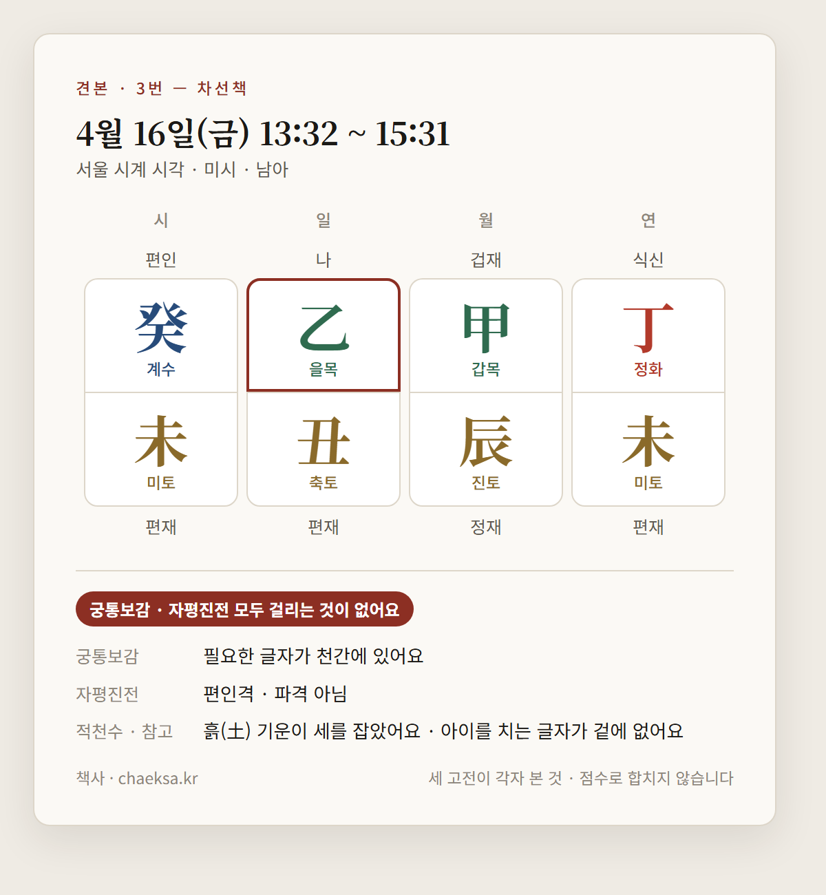

안녕하세요.
알려 주신 조건으로 계산했어요.
이렇게 읽었어요
신청서에 적어 주신 것을 이렇게 읽었어요.
부모님은 신청서에 적어 주신 칸 그대로 아버님 · 어머님으로 봤어요.
네 단계로 좁혀 보기
조건을 하나씩 더하면서 단계마다 좋은 날 세 곳을 골랐어요. 차례는 으뜸 → 흠이 적은 곳 → 원하시는 방향 → 예정일 가까운 곳 → 날짜예요. 4단계가 이 보고서의 권하는 곳이에요.
1단계 — 기간만 보고: 두 고전에 걸리는 것 없는 곳 10곳(5일) 가운데
- 4월 12일(월) · 오전 7시 33분 ~ 9시 32분 · 으뜸 · 흠 적천수로 아이를 치는 글자가 닿음
- 4월 14일(수) · 오전 7시 33분 ~ 9시 32분 · 차선책 · 흠 없음
- 4월 13일(화) · 새벽 3시 33분 ~ 5시 32분 · 차선책 · 흠 없음
2단계 — 성별을 넣고 아이 대운까지: 이른 대운에 충이 있으면 흠으로 세요
- 4월 12일(월) · 오전 7시 33분 ~ 9시 32분 · 으뜸 · 흠 이른 대운에 충, 적천수로 아이를 치는 글자가 닿음
- 4월 14일(수) · 오전 7시 33분 ~ 9시 32분 · 차선책 · 흠 이른 대운에 충
- 4월 13일(화) · 새벽 3시 33분 ~ 5시 32분 · 차선책 · 흠 이른 대운에 충
3단계 — 수술 가능한 시간까지: 07:00~21:00 · 주말 빼고 — 남은 곳 9곳
- 4월 12일(월) · 오전 7시 33분 ~ 9시 32분 · 으뜸 · 흠 이른 대운에 충, 적천수로 아이를 치는 글자가 닿음
- 4월 14일(수) · 오전 7시 33분 ~ 9시 32분 · 차선책 · 흠 이른 대운에 충
- 4월 13일(화) · 새벽 5시 33분 ~ 오전 7시 32분 · 차선책 · 흠 이른 대운에 충
4단계 — 가족까지: 가족 일지와 부딪히는 곳을 빼고, 시지 충은 흠으로 — 남은 곳 7곳
- 4월 12일(월) · 오전 7시 33분 ~ 9시 32분 · 으뜸 · 흠 이른 대운에 충, 적천수로 아이를 치는 글자가 닿음 (권하는 곳 1번)
- 4월 13일(화) · 새벽 5시 33분 ~ 오전 7시 32분 · 차선책 · 흠 이른 대운에 충 (권하는 곳 2번)
- 4월 16일(금) · 오후 1시 32분 ~ 3시 31분 · 차선책 · 흠 이른 대운에 충 (권하는 곳 3번)
먼저 결론부터
으뜸 — 1번 · 4월 12일(월) · 오전 7시 33분 ~ 9시 32분
차선책 — 2번 · 4월 13일(화) · 새벽 5시 33분 ~ 오전 7시 32분
차선책 — 3번 · 4월 16일(금) · 오후 1시 32분 ~ 3시 31분
무엇을 먼저 보느냐에 따라
부모님마다 「좋은 시각」의 뜻이 달라서, 보는 눈마다 첫 자리를 따로 적었어요. 권하는 차례와는 따로예요.
- 궁통보감 — 찾는 글자와 돕는 글자가 천간에 다 뜬 곳(으뜸): 1번
- 자평진전 — 격으로 보면 1번 정재격 · 2번 식신격 · 3번 편인격(모두 파격 아님)
- 적천수 — 아이를 치는 글자가 막힘 없이 닿지 않는 곳: 2번 · 3번 · 그 밖에 4곳
- 원하시는 방향 — 재물: 재성(쌓이는 돈 · 움직이는 돈)이 천간에 떴거나 재격인 곳 — 1번 · 2번 · 그 밖에 4곳
- 예정일 — 가장 가까운 곳(예정일 하루 뒤): 3번
- 병원 — 병원 시간으로 가장 잡기 쉬운 곳(평일 낮): 3번 · 그 밖에 3곳
관점 더 보기
- 아이 앞날 — 앞 세 대운에 일지 · 월지와 부딪히는 글자가 없는 곳: 2번 · 3번 · 그 밖에 4곳
- 가족 — 가족과 합이 있고 부딪히지 않는 곳: 3번 · 그 밖에 1곳
- 아이 성향 — 천간에 뜬 글자로 보면 1번 편관 · 정재 · 상관 / 2번 정재 · 식신 · 겁재 / 3번 식신 · 겁재 · 편인
물어보신 시각부터 볼게요
4월 14일(수) 오전 10시
사시 오전 9시 33분 ~ 11시 32분 안이에요.

궁통보감에 걸려요.
- 진(辰)월에 태어난 계수(癸) 아이에게 궁통보감은 병화(丙)를 먼저 찾아요. 돕는 글자는 신금(辛)과 갑목(甲)이에요.
- 이 시각의 천간 글자는 정화(丁) · 갑목(甲) · 정화(丁)예요 — 병화(丙)는 없어요. 돕는 글자는 있어요.
다른 곳에서 받으신 시각이라면, 보는 기준이 다르면 답도 달라요.
권하는 곳
곳마다 까닭 · 알아 둘 것 · 명식 · 세 고전 · 가족 · 대운 · 병원 시간을 같은 차례로 적었어요.
■ 1번 · 4월 12일(월) · 오전 7시 33분 ~ 9시 32분
까닭 — 으뜸이에요. 궁통보감이 찾는 글자와 돕는 글자가 천간에 다 있어요.
알아 둘 것
흠이 두 가지 있어요.
- 2~11살 계묘(癸卯) 대운이 아이와 배우자 자리(일지)와 부딪혀요(충).
- 22~31살 신축(辛丑) 대운이 조상 자리(연지)와 부딪혀요(충).
- 적천수로 보면 정화(丁) 편관이 아이에게 막힘 없이 닿아요.
부딪힌다는 건 그 자리가 흔들린다는 뜻이에요. 좋다 나쁘다로 정하는 말은 아니에요.

원문 · 근거 → 부록 1
궁통보감 — 진(辰)월에 태어난 신금(辛) 아이에게 궁통보감은 임수(壬)를 먼저 찾아요. 돕는 글자는 갑목(甲)이에요. 이 시각의 천간 글자는 정화(丁) · 갑목(甲) · 임수(壬)예요 — 임수(壬)가 있어요. 돕는 글자까지 천간에 다 있어요. 표에 적힌 글자가 빠짐없이 뜨는 시각은 드물어요.
원문 · 근거 → 부록 2
자평진전 — 정재격(쌓이는 돈)이에요. 파격이 아니에요.
원문 · 근거 → 부록 3
적천수(참고) — 흙(土) 기운이 세를 잡았어요. 아이를 치는 글자가 막힘 없이 닿아요. 흐름은 흙(土) 기운에서 시작해 쇠(金) 기운 → 물(水) 기운까지 가서 멈춰요 — 멈춘 곳은 임수(壬)예요.
원문 · 근거 → 부록 4
가족 — 가족분들 사주의 배우자 자리와 부딪히지도 합이 되지도 않아요.
대운(10년마다 바뀌는 운) — 남아 기준이에요.
대운 목록 펼쳐 보기
- 2~11살 계묘(癸卯) 대운 — 천간 식신(내놓는 재주) · 지지 편재(움직이는 돈) · 아이와 배우자 자리(일지)와 부딪혀요(충)
- 12~21살 임인(壬寅) 대운 — 천간 상관(튀는 재주) · 지지 정재(쌓이는 돈) · 계절이 먼저 찾던 임수(壬)가 와요
- 22~31살 신축(辛丑) 대운 — 천간 비견(나와 같은 기운) · 지지 편인(남다른 근거) · 조상 자리(연지)와 부딪혀요(충)
- 32~41살 경자(庚子) 대운 — 천간 겁재(겨루는 기운) · 지지 식신(내놓는 재주)
- 42~51살 기해(己亥) 대운 — 천간 편인(남다른 근거) · 지지 상관(튀는 재주) · 격이 상관격으로 바뀌어요
병원 시간 — 평일 낮(9~17시)과 겹치는 건 33분이에요. 병원이 조금만 늦어도 시주가 바뀌어요.
관점마다
- 고전 — 으뜸 · 적천수로 아이를 치는 글자가 막힘 없이 닿아요
- 아이 앞날 — 앞 세 대운에 일지나 월지와 부딪히는 글자가 와요 · 계절이 먼저 찾던 글자가 12살 대운에 와요
- 원하시는 방향 — 재물 · 드러나요(천간 정재 · 정재격)
- 가족 — 부딪히는 자리가 없어요 · 합 없음
- 예정일 — 예정일 사흘 전
- 병원 — 평일 낮 33분 · 시각 창 120분
- 아이 성향 — 천간에 편관(거센 자리) · 정재(쌓이는 돈) · 상관(튀는 재주)이 떠 있어요
■ 2번 · 4월 13일(화) · 새벽 5시 33분 ~ 오전 7시 32분
까닭 — 궁통보감 · 자평진전 두 고전에 걸리는 것이 없어요(차선책).
알아 둘 것
흠이 한 가지 있어요.
- 23~32살 신축(辛丑) 대운이 조상 자리(연지)와 부딪혀요(충).
부딪힌다는 건 그 자리가 흔들린다는 뜻이에요. 좋다 나쁘다로 정하는 말은 아니에요.
같은 날 오전 7시 33분 ~ 9시 32분도 두 고전에 걸리지 않아요(흠 한 가지).
같은 날 오전 9시 33분 ~ 11시 32분도 두 고전에 걸리지 않아요(흠 한 가지).
같은 날 오전 11시 33분 ~ 오후 1시 32분도 두 고전에 걸리지 않아요(흠 한 가지).
같은 날 오후 1시 33분 ~ 3시 32분도 두 고전에 걸리지 않아요(흠 한 가지).

원문 · 근거 → 부록 5
궁통보감 — 진(辰)월에 태어난 임수(壬) 아이에게 궁통보감은 갑목(甲)을 먼저 찾아요. 돕는 글자는 경금(庚)이에요. 이 시각의 천간 글자는 정화(丁) · 갑목(甲) · 계수(癸)예요 — 갑목(甲)이 있어요.
원문 · 근거 → 부록 6
자평진전 — 식신격(내놓는 재주)이에요. 파격이 아니에요.
원문 · 근거 → 부록 7
적천수(참고) — 흙(土) 기운이 세를 잡았어요. 아이를 치는 글자가 겉에 없어요. 흐름은 흙(土) 기운에서 시작하는데, 다음으로 받아 줄 쇠(金) 기운이 여덟 글자에 없어서 제자리에 머물러요.
원문 · 근거 → 부록 8
가족 — 가족분들 사주의 배우자 자리와 부딪히지도 합이 되지도 않아요.
대운(10년마다 바뀌는 운) — 남아 기준이에요.
대운 목록 펼쳐 보기
- 3~12살 계묘(癸卯) 대운 — 천간 겁재(겨루는 기운) · 지지 상관(튀는 재주)
- 13~22살 임인(壬寅) 대운 — 천간 비견(나와 같은 기운) · 지지 식신(내놓는 재주)
- 23~32살 신축(辛丑) 대운 — 천간 정인(공인된 근거) · 지지 정관(바른 자리) · 조상 자리(연지)와 부딪혀요(충)
- 33~42살 경자(庚子) 대운 — 천간 편인(남다른 근거) · 지지 겁재(겨루는 기운) · 계절이 찾던 돕는 글자 경금(庚)이 와요
- 43~52살 기해(己亥) 대운 — 천간 정관(바른 자리) · 지지 비견(나와 같은 기운) · 격이 편관격으로 바뀌어요
병원 시간 — 평일 이른 아침(7~9시) · 저녁(17~19시) 시간이에요. 협의하면 잡아 주는 병원이 있어요.
관점마다
- 고전 — 차선책 · 적천수로 아이를 치는 글자가 막힘 없이 닿지는 않아요
- 아이 앞날 — 앞 세 대운에 일지 · 월지와 부딪히는 글자가 없어요
- 원하시는 방향 — 재물 · 드러나요(천간 정재)
- 가족 — 부딪히는 자리가 없어요 · 합 없음
- 예정일 — 예정일 이틀 전
- 병원 — 연장 시간 · 시각 창 120분
- 아이 성향 — 천간에 정재(쌓이는 돈) · 식신(내놓는 재주) · 겁재(겨루는 기운)이 떠 있어요
■ 3번 · 4월 16일(금) · 오후 1시 32분 ~ 3시 31분
까닭 — 궁통보감 · 자평진전 두 고전에 걸리는 것이 없어요(차선책).
알아 둘 것
흠이 한 가지 있어요.
- 24~33살 신축(辛丑) 대운이 조상 자리(연지) · 자식 자리(시지)와 부딪혀요(충).
부딪힌다는 건 그 자리가 흔들린다는 뜻이에요. 좋다 나쁘다로 정하는 말은 아니에요.
- 아이 시지가 아버님 사주의 배우자 자리(일지)와 합이 돼요.
두 자리가 서로 묶인다는 뜻이고, 흠은 아니에요.

원문 · 근거 → 부록 9
궁통보감 — 진(辰)월에 태어난 을목(乙) 아이에게 궁통보감은 계수(癸)를 먼저 찾아요. 돕는 글자는 병화(丙)와 무토(戊)예요. 이 시각의 천간 글자는 정화(丁) · 갑목(甲) · 계수(癸)예요 — 계수(癸)가 있어요.
원문 · 근거 → 부록 10
자평진전 — 편인격(남다른 근거)이에요. 파격이 아니에요.
원문 · 근거 → 부록 11
적천수(참고) — 흙(土) 기운이 세를 잡았어요. 아이를 치는 글자가 겉에 없어요. 흐름은 흙(土) 기운에서 시작하는데, 다음으로 받아 줄 쇠(金) 기운이 여덟 글자에 없어서 제자리에 머물러요.
원문 · 근거 → 부록 12
가족 — 아이 일지는 가족분들 사주의 배우자 자리와 부딪히지 않아요. 합은 위 「알아 둘 것」에 적었어요.
대운(10년마다 바뀌는 운) — 남아 기준이에요.
대운 목록 펼쳐 보기
- 4~13살 계묘(癸卯) 대운 — 천간 편인(남다른 근거) · 지지 비견(나와 같은 기운) · 계절이 먼저 찾던 계수(癸)가 와요
- 14~23살 임인(壬寅) 대운 — 천간 정인(공인된 근거) · 지지 겁재(겨루는 기운)
- 24~33살 신축(辛丑) 대운 — 천간 편관(거센 자리) · 지지 편재(움직이는 돈) · 조상 자리(연지) · 자식 자리(시지)와 부딪혀요(충)
- 34~43살 경자(庚子) 대운 — 천간 정관(바른 자리) · 지지 편인(남다른 근거)
- 44~53살 기해(己亥) 대운 — 천간 편재(움직이는 돈) · 지지 정인(공인된 근거)
병원 시간 — 평일 낮(9~17시) 안이에요.
관점마다
- 고전 — 차선책 · 적천수로 아이를 치는 글자가 막힘 없이 닿지는 않아요
- 아이 앞날 — 앞 세 대운에 일지 · 월지와 부딪히는 글자가 없어요 · 계절이 먼저 찾던 글자가 4살 대운에 와요
- 원하시는 방향 — 재물 · 이 곳에는 드러나지 않아요
- 가족 — 부딪히는 자리가 없어요 · 합 1곳
- 예정일 — 예정일 하루 뒤
- 병원 — 평일 낮 · 시각 창 120분
- 아이 성향 — 천간에 식신(내놓는 재주) · 겁재(겨루는 기운) · 편인(남다른 근거)이 떠 있어요
궁금하다고 하신 것
재물 — 1번은 천간에 정재가 뜬 정재격이라 재물이 드러나요. 2번도 천간에 정재가 떠요. 3번에는 재물이 드러나지 않아요.
원문 · 근거 → 부록 13
예정일 — 예정일에 가장 가까운 곳은 3번이고, 예정일 하루 뒤예요. 2번은 이틀 전이고, 1번은 사흘 전이에요.
원문 · 근거 → 부록 14
병원 시각 — 4월 14일(수) 오전 10시는 궁통보감에 걸려요. 이 날 이 계절에 먼저 찾는 병화(丙)가 천간에 없기 때문이에요. 같은 날 오전 7시 33분 ~ 9시 32분은 두 고전을 통과했지만, 가족 때문에 권하지 않아요.
원문 · 근거 → 부록 15
정리
재물이 드러나는 곳은 1번과 2번이에요. 3번에는 드러나지 않아요.
예정일에 가장 가깝고 병원 평일 낮에 잡기 쉬운 곳은 3번이에요. 3번은 차선책이고 흠이 한 가지 있어요.
1번은 두 고전에서 으뜸이에요. 그래도 흠이 두 가지 있어요. 하나는 앞 대운에 자리가 흔들리는 것이고, 하나는 아이를 치는 글자가 막힘 없이 닿는 것이에요.
그래서 무엇을 앞세우시느냐에 따라 고르시는 곳이 달라져요.
무엇을 앞세우느냐에 따라
- 고전과 재물을 함께 앞세우시면 1번이에요 — 으뜸이고 천간에 정재가 뜬 정재격이에요.
- 재물과 아이 앞날을 함께 앞세우시면 2번이에요 — 천간에 정재가 뜨고, 앞 세 대운에 일지 · 월지와 부딪히는 글자가 없어요.
- 예정일과 병원 시간을 앞세우시면 3번이에요 — 예정일 하루 뒤의 평일 낮이고, 가족과 두 자리가 서로 묶이는 곳이 1곳 있어요.
병원에는 시계 시각으로 말씀하세요. 1번이라면 「4월 12일 오전 7시 33분 이후, 오전 9시 32분 전」이에요.
자미두수로 본 권하는 곳
세 고전으로 고른 곳을, 그 시각에 태어날 아이의 자미두수 명반으로 한 번 더 보았어요. 자미두수는 곳을 고르거나 빼는 데 쓰지 않았어요. 부모 · 형제 · 몸을 열두 궁으로 따로 보는 눈이라 「이렇게도 보인다」를 알려 드려요.
근거는 모두 《자미두수전서》 원문이에요. 원문의 조건이 이 명반에 그대로 맞는 구절에서만 결론을 냈고, 좋은 구절과 무서운 구절이 함께 걸린 곳은 둘 다 그대로 실었어요.
읽은 방법 — 「見」은 삼방사정(맞은편 · 세모로 이어진 궁)까지, 「逢」 · 「加」 · 「同」은 같은 궁으로 읽었어요. 원문이 글자마다 범위를 정해 두지는 않아서, 이것은 책사가 정한 읽기 규칙이에요. 길성인지는 밝기와 상관없이 보되, 어두운(낙함) 길성의 좋은 쪽은 약하게 적었어요.
1번 · 4월 12일(월) 오전 7시 33분 ~ 9시 32분
명궁은 子의 태양. 열두 궁에서 원문 조건이 글자 그대로 걸린 구절 57줄 — 좋게 보는 것 27 · 조심을 말하는 것 24.
이 아이는 어떤 사람으로 자라나
- 어린 시절 탈이 많고 키우기 어렵다고 원문은 본다(卷三 「论小儿命」). 영유아 검진 · 예방접종을 날짜대로 맞추고, 아픈 기색이 보이면 미루지 말고 바로 병원에 가라. 같은 구절이 부모를 형극한다고도 하니 부모 두 사람의 건강도 함께 챙겨라.
- 좋은 그릇에 흠이 함께 있다고 원문은 본다(美玉瑕玷). 모난 면이 보일 때 꺾기보다 스스로 다스리는 법을 같이 연습하라. (근거: 卷一 · 斗数骨髓赋 「吉有凶星，美玉瑕玷。」)
- 언제 — 童限으로 1세(우리 나이)가 명궁이다(卷二 「一命二财三疾厄，四妻五福六官禄」).
명궁(子 태양(落陷))과 둘레 삼방사정(午 천량 · 辰 거문 · 申 빈 궁), 그리고 태어난 시(辰)로 보았습니다.
원문 · 근거 → 부록 16
부모와 사이는
- 아버지 몸을 먼저, 늦추지 말고 챙겨라. 아버지 건강검진을 아이 일정만큼 앞에 둬라. (근거: 卷二 · 父母 「太阳在陷宫主先克父」)
- 부모 두 사람의 건강을 미루지 말고 챙겨라. 원문은 이 자리를 부모를 극하는(부모에게 탈이 가는) 쪽으로 본다. (근거: 卷二 · 父母 「加羊陀火铃空劫主伤」)
- 부모와의 사이는 원문이 좋게 본다. 아이 일을 한쪽 부모에게 몰지 말고 아버지 · 어머니가 함께 맡아라. (근거: 卷二 · 父母 「天府父母双全」)
부모궁(丑 천부(廟))과 아버지 별 태양(子 落陷) · 어머니 별 태음(寅 旺), 그리고 띠(未)와 태어난 시(辰)로 보았습니다.
원문 · 근거 → 부록 17
몸은
- 어린 시절 잔병을 미리 예상하고 대비하라. 예방접종 · 영유아 검진을 날짜대로 맞추고, 열 · 기침이 나면 「크면 낫겠지」 하고 미루지 말고 바로 병원에 가라. (근거: 卷二 · 疾厄 「廉贞襁褓灾疮腰足之疾」 · 卷二 · 疾厄 「七杀幼年多灾，长主痔疾」)
- 부딪히고 다치는 쪽(놀이터 · 계단 · 탈것)을 먼저 조심시켜라. 원문은 이 자리에서 팔다리 · 머리 · 얼굴 다침을 말한다. (근거: 卷二 · 疾厄 「加擎羊四肢有伤残」 · 卷二 · 疾厄 「擎羊有头疯之症，或四肢欠力，头面破相延寿」)
- 몸을 볼 때 원문은 질액궁보다 명궁을 먼저 보라 한다. 이 아이는 명궁 별 태양이 함락하고 명궁 둘레(삼방사정)에 거문 화기(辰)가 모인다. 卷二 질액 장은 경양 · 타라 · 화성 · 영성을 팔다리 다침과 함께 말하니, 놀이터 · 계단 · 탈것에서 다치지 않게 먼저 챙겨라.
- 피부(종기 · 고름)를 깨끗이 살피고, 상처가 곪으면 바로 치료하라. 원문은 이 자리에서 피부의 탈을 말한다. (근거: 卷二 · 疾厄 「廉贞襁褓灾疮腰足之疾」)
- 배 아래 · 항문(치질) 쪽 불편을 말하면 부끄러워 숨기지 않게 하라. 원문은 이 자리에서 아래쪽 병을 말한다. (근거: 卷二 · 疾厄 「七杀幼年多灾，长主痔疾」)
- 눈을 일찍부터 챙겨라. 원문은 이 자리에서 눈병을 말한다. 영유아 검진 때 시력 검사를 빠뜨리지 말고, 화면 보는 시간을 줄여라. (근거: 卷二 · 疾厄 「廉贞同主目疾」)
- 머리가 아프거나 어지럽다고 하면 넘기지 말고 살펴라. 원문은 이 자리에서 머리의 병을 말한다. (근거: 卷二 · 疾厄 「擎羊有头疯之症，或四肢欠力，头面破相延寿」)
- 언제 — 童限으로 3세(우리 나이)가 질액궁이다(卷二 「一命二财三疾厄，四妻五福六官禄」). 세 살(우리 나이) 무렵이 몸의 해다. 그해에는 예방접종 · 검진을 미루지 말고, 긴 여행 · 무리한 일정을 겹치지 마라.
- 언제 — 43~52세(우리 나이) 대한이 이 궁(未)이다. 卷三은 이 10년을 「이룸과 무너짐이 엇갈린다(成败不一)」로 본다 — 그 10년엔 큰 결정을 한 번에 걸지 말고 나눠 하라.
- 어린 시절 탈이 많고 키우기 어렵다고 원문은 본다(卷三 「论小儿命」). 영유아 검진 · 예방접종을 날짜대로 맞추고, 아픈 기색이 보이면 미루지 말고 바로 병원에 가라. 같은 구절이 부모를 형극한다고도 하니 부모 두 사람의 건강도 함께 챙겨라.
원문 방법대로 명궁(子 태양(落陷))을 먼저 보고 질액궁(未 염정(利益) · 칠살(廟))으로 보았습니다.
원문 · 근거 → 부록 18
스스로 해내는 아이인가
- 자리에서 밀려나는 일을 한 번은 겪는다고 보고 대비하라. 반장 · 주장 · 대표 자리를 놓쳤을 때 부모가 대신 따져 주지 말고, 아이가 다시 해 보도록 기다려라. (근거: 卷二 · 官禄 「陷宫遭悔吝」)
- 언제 — 童限으로 6세(우리 나이)가 관록궁이다(卷二 「一命二财三疾厄，四妻五福六官禄」). 여섯 살(우리 나이) 무렵, 처음 무언가를 배우기 시작할 때 잘하고 못함을 빨리 정하지 마라.
- 언제 — 73~82세(우리 나이) 대한이 이 궁(辰)이다. 卷三은 이 10년을 「이룸과 무너짐이 엇갈린다(成败不一)」로 본다 — 그 10년엔 큰 결정을 한 번에 걸지 말고 나눠 하라.
관록궁(辰 거문(落陷))으로 보았습니다.
원문 · 근거 → 부록 19
동생이 생기면(형제)
- 형제끼리 알아서 친해지겠지 하고 기다리지 마라. 원문은 이 자리를 형제 사이가 멀어지거나 서로 힘이 되지 못하는 쪽으로 본다. 동생이 생기면 첫째에게 따로 쓰는 시간과 둘이 함께하는 시간을 부모가 일부러 만들어 둘 사이를 이어 줘라. (근거: 卷二 · 兄弟 「破军七杀同有一人，不和睦」 · 卷二 · 兄弟 「见羊陀火铃空劫孤单」)
- 언제 — 첫 대한(3~12세, 우리 나이)이 바로 형제궁이다. 동생이 이 10년 안에 오면 그 일이 이 시기 아이의 가장 큰 일이니, 동생 맞이를 이 나이대에 맞춰 준비하라.
- 원문의 형제 「몇 명」 셈은 고전 규칙일 뿐 실제 가족 수를 맞히는 데 쓰지 않는다. 둘째를 낳을지 말지를 이것으로 정하지 마라.
형제궁(亥 무곡(平和) · 파군(平和))으로 보았습니다.
원문 · 근거 → 부록 20
열두 궁 전부
명궁 — 확신도 중 — 걸림 6줄 가운데 좋게 보는 것 3 · 조심을 말하는 것 2 · 두 쪽이 한 줄에 있는 것 1이 함께 걸려 서로 다른 쪽을 가리킨다(일부 2줄).
- 어린 시절 탈이 많고 키우기 어렵다고 원문은 본다(卷三 「论小儿命」). 영유아 검진 · 예방접종을 날짜대로 맞추고, 아픈 기색이 보이면 미루지 말고 바로 병원에 가라. 같은 구절이 부모를 형극한다고도 하니 부모 두 사람의 건강도 함께 챙겨라.
- 좋은 그릇에 흠이 함께 있다고 원문은 본다(美玉瑕玷). 모난 면이 보일 때 꺾기보다 스스로 다스리는 법을 같이 연습하라. (근거: 卷一 · 斗数骨髓赋 「吉有凶星，美玉瑕玷。」)
- 언제 — 童限으로 1세(우리 나이)가 명궁이다(卷二 「一命二财三疾厄，四妻五福六官禄」).
원문 · 근거 → 부록 21
- 조건이 일부만 맞아 결론에 쓰지 않은 구절 — 「如贪狼廉贞擎羊陀罗天空地劫火铃忌星三方守照主疾殀」(卷一 · 定富贵贫贱十等论(疾殀论)) 명궁 삼방사정에 화기 — 탐랑 · 염정 · 경양 · 타라 · 지공 · 지겁 · 화성 · 영성은 없다. 원문이 몇 개면 되는지 말하지 않는 별 나열이라 일부
- 조건이 일부만 맞아 결론에 쓰지 않은 구절 — 「天機天梁擎羊會，早有刑而晚見孤。」(卷一 · 增补太微赋) 명궁 삼방사정에 천량 — 셋이 다 모이지 않았다
- 이 아이에게 걸리지 않는 구절 — 「子宫陷午宫旺，丁己生人财官格，壬丙戊生人悔吝」 명궁 子에 태양(落陷) · 생년간 丁 — 壬 · 丙 · 戊에 들지 않음
- 이 아이에게 걸리지 않는 구절 — 「反此则少遂。」 생시 辰(양시)인데 명궁 子(양궁) — 짝이 맞다
- 이 아이에게 걸리지 않는 구절 — 「小儿初生，命中星辰庙旺，大小二限未行，断其灾少，易养，父母无克。」 명궁 子 태양(落陷) — 모두 묘왕은 아니다
- 이 아이에게 걸리지 않는 구절 — 「小兒命坐凶鄉，二五歲必然夭折」 명궁 子에 살성이 앉아 함약한 자리가 아니다
- 이 아이에게 걸리지 않는 구절 — 「身命最嫌羊陀七殺，遇之未免為凶。」 명궁 子 · 신궁 申에 경양 · 타라 · 칠살이 앉지 않았다(「遇」는 같은 궁)
형제궁 — 확신도 중 — 걸림 3줄 가운데 좋게 보는 것 1 · 조심을 말하는 것 2이 함께 걸려 서로 다른 쪽을 가리킨다(일부 0줄).
- 형제끼리 알아서 친해지겠지 하고 기다리지 마라. 원문은 이 자리를 형제 사이가 멀어지거나 서로 힘이 되지 못하는 쪽으로 본다. 동생이 생기면 첫째에게 따로 쓰는 시간과 둘이 함께하는 시간을 부모가 일부러 만들어 둘 사이를 이어 줘라. (근거: 卷二 · 兄弟 「破军七杀同有一人，不和睦」 · 卷二 · 兄弟 「见羊陀火铃空劫孤单」)
- 언제 — 첫 대한(3~12세, 우리 나이)이 바로 형제궁이다. 동생이 이 10년 안에 오면 그 일이 이 시기 아이의 가장 큰 일이니, 동생 맞이를 이 나이대에 맞춰 준비하라.
- 원문의 형제 「몇 명」 셈은 고전 규칙일 뿐 실제 가족 수를 맞히는 데 쓰지 않는다. 둘째를 낳을지 말지를 이것으로 정하지 마라.
원문 · 근거 → 부록 22
- 이 아이에게 걸리지 않는 구절 — 「陷地加杀孤单」 형제궁 亥에 파군(平和) · 파군 平和 — 「함지」 아님 · 같은 궁에 사살 없음
- 이 아이에게 걸리지 않는 구절 — 「羊陀火铃空劫孤单」 형제궁 亥에 파군(平和) · 같은 궁에 경양 · 타라 · 화성 · 영성 · 지공 · 지겁 없음
- 이 아이에게 걸리지 않는 구절 — 「巨到二宮，必是兄弟無義。」 거문은 辰 — 형제궁이 아니다
부처궁 — 확신도 상 — 걸림 4줄이 같은 쪽(좋게 보는 것 4)을 가리킨다(일부 1줄).
- 아이가 커서 혼인을 서두르지 않게 하라. 원문은 이 자리에서 늦게 하는 혼인을 좋게 본다. (근거: 卷二 · 妻妾 「天同迟娶谐老，夫宜长妻宜少」)
- 아이가 커서 나이가 위인 배우자를 꺼리지 않게 하라. 원문은 이 자리에 손위 배우자가 맞다고 본다. (근거: 卷二 · 妻妾 「天同迟娶谐老，夫宜长妻宜少」)
- 남을 돕는 일을 어려서부터 몸에 붙게 하라. 卷三은 「평소 남을 이롭게 하고 덕을 닦으면 흉한 대한도 해치지 못한다(虽凶不害)」고 본다.
- 언제 — 童限으로 4세(우리 나이)가 부처궁이다(卷二 「一命二财三疾厄，四妻五福六官禄」).
원문 · 근거 → 부록 23
- 조건이 일부만 맞아 결론에 쓰지 않은 구절 — 「未遇猪鸡墓患殷 假如未生人忌逢酉戌岁限，又忌见擎羊在四墓宫。」(卷三 · 论大小限星辰过十二宫遇十二支所忌诀) 未년생 — 戌궁(13~22세(우리 나이) 대한) — 歲限은 원문이 大限 · 小限 · 太歲와 따로 쓰는 말이라 대한으로 바꿔 읽지 않는다(읽기 규칙). 결론에 쓰지 않음
- 이 아이에게 걸리지 않는 구절 — 「加四杀欠和生离」 부처궁 戌에 천동(平和) · 같은 궁에 사살 없음
- 이 아이에게 걸리지 않는 구절 — 「巨门同加四杀亦克」 부처궁 戌에 천동(平和) · 거문은 같은 궁이 아님 · 같은 궁에 사살 없음
- 이 아이에게 걸리지 않는 구절 — 「殺臨三位，定然妻子不和。」 부처궁에 칠살 · 경양 · 타라 · 화성 · 영성이 앉지 않았다
자녀궁 — 확신도 중 — 걸림 3줄 가운데 좋게 보는 것 2 · 조심을 말하는 것 1이 함께 걸려 서로 다른 쪽을 가리킨다(일부 2줄). 빈 궁이라 대궁을 빌려 본 줄은 많아야 일부다.
- 원문의 「아들 먼저」 「몇 명」 같은 성별 · 명수 셈은 고전 규칙일 뿐이다. 아이가 커서 자녀 계획(몇 명 · 언제)을 이것으로 정하지 마라.
- 이 궁에서 원문 조건이 그대로 걸린 구절은 성질을 말할 뿐 할 일을 말하지 않는다 — 「자미가 묘왕이면 아들 셋 딸 둘」(卷二 · 子女) · 「경양 · 타라 · 화성 · 영성 · 지공 · 지겁이 더하면 한 쌍뿐이고, 아니면 첩에게서 난 자식이 많거나 양자를 맏이로 들인다」(卷二 · 子女) · 「자미와 같이 있으면 둘」(卷二 · 子女). 할 일로 바꾸지 않고 그대로 둔다.
원문 · 근거 → 부록 24
- 조건이 일부만 맞아 결론에 쓰지 않은 구절 — 「如宫分星缠全吉庙旺得地，无擎羊陀罗火铃空劫者，主十年安静，人财全美。」(卷三 · 论大限十年祸福何如) 23~32세(우리 나이) 대한 酉에 살성은 없으나 주성이 없어 「全吉庙旺得地」를 따질 수 없다
- 조건이 일부만 맞아 결론에 쓰지 않은 구절 — 「未遇猪鸡墓患殷 假如未生人忌逢酉戌岁限，又忌见擎羊在四墓宫。」(卷三 · 论大小限星辰过十二宫遇十二支所忌诀) 未년생 — 酉궁(23~32세(우리 나이) 대한) — 歲限은 원문이 大限 · 小限 · 太歲와 따로 쓰는 말이라 대한으로 바꿔 읽지 않는다(읽기 규칙). 결론에 쓰지 않음
- 이 아이에게 걸리지 않는 구절 — 「日生最怕太阴临，夜生最怕太阳照，此星若在儿女宫方恐无儿」 辰시(낮) 생 — 태음이 자녀궁에 들지 않았다(낮 = 卯~申시)
- 이 아이에게 걸리지 않는 구절 — 「武曲同三人，先难后易」 자녀궁 酉은 빈 궁이라 대궁 卯의 탐랑(利益)을 빌려 봄 · 무곡은 같은 궁이 아님
- 이 아이에게 걸리지 않는 구절 — 「刑殺守子宮，子難奉老。」 자녀궁 酉에 천형 · 살성이 없다
재백궁 — 확신도 중 — 걸림 4줄 가운데 좋게 보는 것 3 · 조심을 말하는 것 1이 함께 걸려 서로 다른 쪽을 가리킨다(일부 7줄). 빈 궁이라 대궁을 빌려 본 줄은 많아야 일부다.
- 이끌어 주는 윗사람과의 인연을 가볍게 끊지 않게 가르쳐라. 원문은 이 자리의 돈이 귀인을 통해 들어온다고 본다. (근거: 卷二 · 财帛 「加吉星得贵人财」 · 卷二 · 财帛 「会诸吉星得贵人财」)
- 언제 — 童限으로 2세(우리 나이)가 재백궁이다(卷二 「一命二财三疾厄，四妻五福六官禄」).
원문 · 근거 → 부록 25
- 조건이 일부만 맞아 결론에 쓰지 않은 구절 — 「天机劳心费力生财」(卷二 · 财帛) 재백궁 申은 빈 궁이라 대궁 寅의 천기(得地)을 빌려 봄 · 빌려 봄이라 많아야 일부(원문 子女 장만 대궁을 보라고 함)
- 조건이 일부만 맞아 결론에 쓰지 않은 구절 — 「加羊陀火铃空劫一生有成有败」(卷二 · 财帛) 재백궁 申은 빈 궁이라 대궁 寅의 천기(得地)을 빌려 봄 · 같은 궁에 영성 · 빌려 봄이라 많아야 일부(원문 子女 장만 대궁을 보라고 함)
- 조건이 일부만 맞아 결론에 쓰지 않은 구절 — 「天机同白手生财成家」(卷二 · 财帛) 재백궁 申은 빈 궁이라 대궁 寅의 태음(旺)을 빌려 봄 · 천기와 같은 궁 · 빌려 봄이라 많아야 일부(원문 子女 장만 대궁을 보라고 함)
- 조건이 일부만 맞아 결론에 쓰지 않은 구절 — 「財帛田宅有左右守衛，又與太陰武曲同度，不見惡星，必為財賦之官。」(卷一 · 诸星问答论(紫微)) 재백궁에 우필 — 태음 · 무곡은 같은 궁이 아님, 악성 영성(寅) · 거문 화기(辰)
- 조건이 일부만 맞아 결론에 쓰지 않은 구절 — 「如宫分星缠全吉庙旺得地，无擎羊陀罗火铃空劫者，主十年安静，人财全美。」(卷三 · 论大限十年祸福何如) 33~42세(우리 나이) 대한 申에 살성은 없으나 주성이 없어 「全吉庙旺得地」를 따질 수 없다
- 조건이 일부만 맞아 결론에 쓰지 않은 구절 — 「凡行至寅申巳亥子午宫，遇紫微天府天同太阳太阴昌曲禄存禄主吉星，主人财兴旺，添丁进口之庆。」(卷三 · 论大限十年祸福何如) 33~42세(우리 나이) 대한 申에 문곡 — 「遇 A B C…」 별 나열이라 문장 구조 판정 전까지 일부(읽기 규칙)
- 조건이 일부만 맞아 결론에 쓰지 않은 구절 — 「遇左右昌曲，仕宦迁官加职，士民生子发财，妇人喜事，僧道亦利，商贾得益。」(卷三 · 论大限十年祸福何如) 33~42세(우리 나이) 대한 申에 우필 · 문곡 — 「遇 A B C…」 별 나열이라 다 모이지 않으면 일부(읽기 규칙)
- 이 아이에게 걸리지 않는 구절 — 「太阴同陷宫成败」 재백궁 申은 빈 궁이라 대궁 寅의 천기(得地)을 빌려 봄 · 태음과 같은 궁 · 천기 得地 — 「함지」 아님
- 이 아이에게 걸리지 않는 구절 — 「陷宫成败不聚」 재백궁 申은 빈 궁이라 대궁 寅의 태음(旺)을 빌려 봄 · 태음 旺 — 「함지」 아님
- 이 아이에게 걸리지 않는 구절 — 「加羊陀火铃空劫家忌，东来西去成败不遂」 재백궁 申에 문곡(得地) · 같은 궁에 경양 · 타라 · 화성 · 영성 · 지공 · 지겁 · 화기 없음
- 이 아이에게 걸리지 않는 구절 — 「加羊陀火铃空劫耗忌，主成败而不聚」 재백궁 申에 우필 · 같은 궁에 경양 · 타라 · 화성 · 영성 · 지공 · 지겁 · 대모 · 화기 없음
질액궁 — 확신도 중 — 걸림 8줄 가운데 좋게 보는 것 1 · 조심을 말하는 것 5 · 두 쪽이 한 줄에 있는 것 2이 함께 걸려 서로 다른 쪽을 가리킨다(일부 5줄).
- 어린 시절 잔병을 미리 예상하고 대비하라. 예방접종 · 영유아 검진을 날짜대로 맞추고, 열 · 기침이 나면 「크면 낫겠지」 하고 미루지 말고 바로 병원에 가라. (근거: 卷二 · 疾厄 「廉贞襁褓灾疮腰足之疾」 · 卷二 · 疾厄 「七杀幼年多灾，长主痔疾」)
- 부딪히고 다치는 쪽(놀이터 · 계단 · 탈것)을 먼저 조심시켜라. 원문은 이 자리에서 팔다리 · 머리 · 얼굴 다침을 말한다. (근거: 卷二 · 疾厄 「加擎羊四肢有伤残」 · 卷二 · 疾厄 「擎羊有头疯之症，或四肢欠力，头面破相延寿」)
- 몸을 볼 때 원문은 질액궁보다 명궁을 먼저 보라 한다. 이 아이는 명궁 별 태양이 함락하고 명궁 둘레(삼방사정)에 거문 화기(辰)가 모인다. 卷二 질액 장은 경양 · 타라 · 화성 · 영성을 팔다리 다침과 함께 말하니, 놀이터 · 계단 · 탈것에서 다치지 않게 먼저 챙겨라.
- 피부(종기 · 고름)를 깨끗이 살피고, 상처가 곪으면 바로 치료하라. 원문은 이 자리에서 피부의 탈을 말한다. (근거: 卷二 · 疾厄 「廉贞襁褓灾疮腰足之疾」)
- 배 아래 · 항문(치질) 쪽 불편을 말하면 부끄러워 숨기지 않게 하라. 원문은 이 자리에서 아래쪽 병을 말한다. (근거: 卷二 · 疾厄 「七杀幼年多灾，长主痔疾」)
- 눈을 일찍부터 챙겨라. 원문은 이 자리에서 눈병을 말한다. 영유아 검진 때 시력 검사를 빠뜨리지 말고, 화면 보는 시간을 줄여라. (근거: 卷二 · 疾厄 「廉贞同主目疾」)
- 머리가 아프거나 어지럽다고 하면 넘기지 말고 살펴라. 원문은 이 자리에서 머리의 병을 말한다. (근거: 卷二 · 疾厄 「擎羊有头疯之症，或四肢欠力，头面破相延寿」)
- 언제 — 童限으로 3세(우리 나이)가 질액궁이다(卷二 「一命二财三疾厄，四妻五福六官禄」). 세 살(우리 나이) 무렵이 몸의 해다. 그해에는 예방접종 · 검진을 미루지 말고, 긴 여행 · 무리한 일정을 겹치지 마라.
- 언제 — 43~52세(우리 나이) 대한이 이 궁(未)이다. 卷三은 이 10년을 「이룸과 무너짐이 엇갈린다(成败不一)」로 본다 — 그 10년엔 큰 결정을 한 번에 걸지 말고 나눠 하라.
원문 · 근거 → 부록 26
- 조건이 일부만 맞아 결론에 쓰지 않은 구절 — 「四墓生人不忌」(卷一 · 诸星问答论(擎羊)) 未년생(사묘), 경양이 未 — 이 단락은 경양이 명궁 · 신궁을 지킬 때 말이다
- 조건이 일부만 맞아 결론에 쓰지 않은 구절 — 「擎羊陀罗七杀逢紫微天相禄存三合拱照可解。」(卷三 · 论七杀重逢) 경양 · 칠살이 未, 삼합에 자미(별 나열 — 다 모이지 않음)
- 조건이 일부만 맞아 결론에 쓰지 않은 구절 — 「行至辰戍丑未卯酉，遇恶杀廉贞天使羊陀火铃空劫忌星，主人酒色荒迷，贫乏死生。」(卷三 · 论大限十年祸福何如) 43~52세(우리 나이) 대한 未에 염정 · 천사 · 경양 · 지공 — 나열한 별 가운데 하나만으로 거는지는 문장 구조로 따로 정할 일이라(읽기 규칙) 결론에 쓰지 않음
- 조건이 일부만 맞아 결론에 쓰지 않은 구절 — 「羊陀七殺限運莫逢，逢之定有刑傷。」(卷一 · 太微赋) 43~52세(우리 나이) 대한 未에 경양 · 칠살 — 「羊陀七殺」 별 나열이라 다 모이지 않으면 일부(읽기 규칙)
- 조건이 일부만 맞아 결론에 쓰지 않은 구절 — 「大抵二星俱不宜见，定主破财，二限逢之必凶。」(卷一 · 诸星问答论(天空地劫)) 43~52세(우리 나이) 대한 未에 지공만 있다(「二星」)
- 이 아이에게 걸리지 않는 구절 — 「遇贪狼同，陷地眼疾灾多」 질액궁 未에 염정(利益) · 탐랑은 같은 궁이 아님 · 염정 利益 — 「함지」 아님
- 이 아이에게 걸리지 않는 구절 — 「武曲同加四杀手足伤残」 질액궁 未에 칠살(廟) · 무곡은 같은 궁이 아님 · 같은 궁에 경양
- 이 아이에게 걸리지 않는 구절 — 「疾厄逢忌定有尪羸」 질액궁과 삼방사정에 화기가 없다
- 이 아이에게 걸리지 않는 구절 — 「忌暗同居身命疾厄，沉困尪羸」 거문은 辰(화기와 함께) — 명궁 · 신궁 · 질액궁이 아니거나 화기와 함께가 아니다
천이궁 — 확신도 중 — 걸림 6줄 가운데 좋게 보는 것 4 · 조심을 말하는 것 1 · 두 쪽이 한 줄에 있는 것 1이 함께 걸려 서로 다른 쪽을 가리킨다(일부 2줄).
- 커서 집 · 고향을 떠나 공부하거나 일하겠다고 하면 막지 마라. 원문은 이 자리를 밖에서 귀인을 만나고 뜻을 이루는 쪽으로 본다. (근거: 卷二 · 迁移 「文昌出外遇贵发达，小人不足」 · 卷二 · 迁移 「左辅动中贵人扶持发福」)
- 언제 — 53~62세(우리 나이) 대한이 이 궁(午)이다. 卷三은 이 10년을 「열 해가 고요하고 사람과 재물이 다 좋다(十年安静，人财全美)」로 본다.
원문 · 근거 → 부록 27
- 조건이 일부만 맞아 결론에 쓰지 않은 구절 — 「凡行至寅申巳亥子午宫，遇紫微天府天同太阳太阴昌曲禄存禄主吉星，主人财兴旺，添丁进口之庆。」(卷三 · 论大限十年祸福何如) 53~62세(우리 나이) 대한 午에 문창 · 녹존 — 「遇 A B C…」 별 나열이라 문장 구조 판정 전까지 일부(읽기 규칙)
- 조건이 일부만 맞아 결론에 쓰지 않은 구절 — 「遇左右昌曲，仕宦迁官加职，士民生子发财，妇人喜事，僧道亦利，商贾得益。」(卷三 · 论大限十年祸福何如) 53~62세(우리 나이) 대한 午에 좌보 · 문창 — 「遇 A B C…」 별 나열이라 다 모이지 않으면 일부(읽기 규칙)
- 이 아이에게 걸리지 않는 구절 — 「加羊陀火铃空劫在外欠安宁」 천이궁 午에 문창(落陷) · 같은 궁에 경양 · 타라 · 화성 · 영성 · 지공 · 지겁 없음
- 이 아이에게 걸리지 않는 구절 — 「加羊陀火铃下人不足多招是非」 천이궁 午에 좌보 · 같은 궁에 경양 · 타라 · 화성 · 영성 없음
- 이 아이에게 걸리지 않는 구절 — 「廉贞杀破会迁移死于外道」 천이궁 삼방사정에 염정 · 칠살 · 파군이 없다
- 이 아이에게 걸리지 않는 구절 — 「火鈴到遷移，長途寂寞。」 천이궁에 화성 · 영성이 없다
- 이 아이에게 걸리지 않는 구절 — 「官符會刑殺於遷移離鄉遠配」 천이궁에 관부(박사 12신)도 천형 · 살성도 없다
노복궁 — 확신도 중 — 걸림 5줄 가운데 좋게 보는 것 1 · 조심을 말하는 것 4이 함께 걸려 서로 다른 쪽을 가리킨다(일부 2줄).
- 무서운 구절이 그대로 걸린다: 《紫微斗數全書》 卷一 · 诸星问答论(天马) 「遇陀罗谓之折足马。以上犯此数者，俱主灾病，流年值之依此断。」(천마가 타라를 만나면 다리 부러진 말이라 하여 재앙과 병을 맡는다). 같은 자리를 좋게 보는 구절도 함께 걸린다: 卷二 · 奴仆 「天相末年招得」(천상이 노복궁에 있으면 말년에 모인다).
- 아이가 커서 사람을 쓸 때 돈 · 열쇠 · 결정을 한 사람에게 다 맡기지 말고 나눠 맡기고 직접 확인하게 하라. 어려서 친구에게 맡긴 물건 · 돈을 잃는 일이 생기면 꾸짖기보다 「나눠 맡기는 법」을 가르쳐라. (근거: 卷二 · 奴仆 「陀罗奴仆欠力怨主」)
- 따르는 사람은 늦게 모인다고 원문은 본다. 젊을 때 사람이 따르지 않는다고 아이를 몰아세우지 말고, 커서도 사람 모으기를 서두르지 마라. (근거: 卷二 · 奴仆 「天相末年招得」)
- 언제 — 63~72세(우리 나이) 대한이 이 궁(巳)이다. 卷三은 이 10년을 「이룸과 무너짐이 엇갈린다(成败不一)」로 본다 — 그 10년엔 큰 결정을 한 번에 걸지 말고 나눠 하라.
원문 · 근거 → 부록 28
- 조건이 일부만 맞아 결론에 쓰지 않은 구절 — 「只要吉多为福其祸稍轻」(卷一 · 诸星问答论(天伤天使)) 63~72세 대한 巳에 천상(天傷) · 길성 천마 — 「吉多」(몇이면 많은지)를 원문이 정하지 않는다
- 조건이 일부만 맞아 결론에 쓰지 않은 구절 — 「羊陀七殺限運莫逢，逢之定有刑傷。」(卷一 · 太微赋) 63~72세(우리 나이) 대한 巳에 타라 — 「羊陀七殺」 별 나열이라 다 모이지 않으면 일부(읽기 규칙)
- 이 아이에게 걸리지 않는 구절 — 「武曲同怨主」 노복궁 巳에 천상(得地) · 무곡은 같은 궁이 아님
- 이 아이에게 걸리지 않는 구절 — 「廉贞同末年可招加羊陀火铃空劫欠力逃走」 노복궁 巳에 천상(得地) · 염정은 같은 궁이 아님
관록궁 — 확신도 상 — 걸림 2줄이 같은 쪽(조심을 말하는 것 2)을 가리킨다(일부 1줄).
- 자리에서 밀려나는 일을 한 번은 겪는다고 보고 대비하라. 반장 · 주장 · 대표 자리를 놓쳤을 때 부모가 대신 따져 주지 말고, 아이가 다시 해 보도록 기다려라. (근거: 卷二 · 官禄 「陷宫遭悔吝」)
- 언제 — 童限으로 6세(우리 나이)가 관록궁이다(卷二 「一命二财三疾厄，四妻五福六官禄」). 여섯 살(우리 나이) 무렵, 처음 무언가를 배우기 시작할 때 잘하고 못함을 빨리 정하지 마라.
- 언제 — 73~82세(우리 나이) 대한이 이 궁(辰)이다. 卷三은 이 10년을 「이룸과 무너짐이 엇갈린다(成败不一)」로 본다 — 그 10년엔 큰 결정을 한 번에 걸지 말고 나눠 하라.
원문 · 근거 → 부록 29
- 조건이 일부만 맞아 결론에 쓰지 않은 구절 — 「行至辰戍丑未卯酉，遇恶杀廉贞天使羊陀火铃空劫忌星，主人酒色荒迷，贫乏死生。」(卷三 · 论大限十年祸福何如) 73~82세(우리 나이) 대한 辰에 화기 — 나열한 별 가운데 하나만으로 거는지는 문장 구조로 따로 정할 일이라(읽기 규칙) 결론에 쓰지 않음
- 이 아이에게 걸리지 않는 구절 — 「巨门入庙武职权贵，文人不耐久」 관록궁 辰에 거문(落陷) · 거문 落陷 — 「입묘」 아님
- 이 아이에게 걸리지 않는 구절 — 「太阳同有进退」 관록궁 辰에 거문(落陷) · 태양은 같은 궁이 아님
- 이 아이에게 걸리지 않는 구절 — 「加羊陀火铃空劫更不美，退宫卸职」 관록궁 辰에 거문(落陷) · 같은 궁에 경양 · 타라 · 화성 · 영성 · 지공 · 지겁 없음
- 이 아이에게 걸리지 않는 구절 — 「大耗會廉貞於官祿枷杻囚徒」 관록궁에 대모 · 염정이 없다
전택궁 — 확신도 상 — 걸림 3줄이 같은 쪽(좋게 보는 것 2 · 두 쪽이 한 줄에 있는 것 1)을 가리킨다(일부 1줄).
- 집 · 땅은 물려받기보다 스스로 마련하게 된다고 원문은 본다. 아이가 커서 집을 스스로 마련할 계획과 돈 모으기를 일찍 시작하게 하라. (근거: 卷二 · 田宅 「紫微茂盛自置旺相」 · 卷二 · 田宅 「加羊陀火铃空劫，有置有去」)
- 물려줄 재산은 한 번에 넘기지 마라. 원문은 조상 재산이 이 아이 손에서 그대로 지켜지지 않는 쪽으로 본다. 집 · 땅을 물려준다면 아이 혼자 처분하게 맡기지 말고 나눠서, 조건을 붙여 넘겨라. (근거: 卷二 · 田宅 「加羊陀火铃空劫，有置有去」)
원문 · 근거 → 부록 30
- 조건이 일부만 맞아 결론에 쓰지 않은 구절 — 「斷橋截路大小難行，卯酉二空聰明發福。」(卷一 · 增补太微赋) 卯에 절로공망 · 순중공망 — 어느 궁의 공망을 말하는지 원문이 이 줄에서 정하지 않는다
- 이 아이에게 걸리지 않는 구절 — 「破军同退祖」 전택궁 卯에 자미(旺) · 파군은 같은 궁이 아님
- 이 아이에게 걸리지 않는 구절 — 「贪狼陷宫退祖一世田少」 전택궁 卯에 탐랑(利益) · 탐랑 利益 — 「함지」 아님
- 이 아이에게 걸리지 않는 구절 — 「廉贞同无分」 전택궁 卯에 탐랑(利益) · 염정은 같은 궁이 아님
복덕궁 — 확신도 중 — 걸림 8줄 가운데 좋게 보는 것 3 · 조심을 말하는 것 4 · 두 쪽이 한 줄에 있는 것 1이 함께 걸려 서로 다른 쪽을 가리킨다(일부 1줄).
- 마음이 쉬지 못하는 아이로 보고, 쉬는 법을 가르쳐라. 일정 사이에 아무것도 하지 않는 시간을 일부러 넣고, 조바심 · 보챔을 「산만하다 · 게으르다」로 꾸짖지 마라. (근거: 卷二 · 福德 「加羊陀火铃空劫奔走不得宁静」 · 卷二 · 福德 「天机同心忙」 외 2줄)
- 늦게 편해진다고 원문은 본다. 젊어서 마음이 바쁜 것을 평생의 모습으로 단정하지 마라. (근거: 卷二 · 福德 「天机先劳后逸」)
- 복덕궁(마음)은 재백궁(돈)과 마주 본다고 원문은 본다. 돈이 모였다 흩어질 때 마음도 같이 흔들리는 짝이니, 재백궁 결론을 지키는 것이 마음을 지키는 일이기도 하다. (근거: 卷三 · 谈星要论 「四看福德宫权禄劫空庙陷，以福德宫对财帛宫也。」)
- 언제 — 童限으로 5세(우리 나이)가 복덕궁이다(卷二 「一命二财三疾厄，四妻五福六官禄」). 다섯 살(우리 나이) 무렵 불안 · 보챔이 보이면 이 자리의 일로 보고 다그치지 말고 기다려 줘라.
원문 · 근거 → 부록 31
- 조건이 일부만 맞아 결론에 쓰지 않은 구절 — 「斷橋截路大小難行，卯酉二空聰明發福。」(卷一 · 增补太微赋) 寅에 절로공망 · 순중공망 — 어느 궁의 공망을 말하는지 원문이 이 줄에서 정하지 않는다
- 이 아이에게 걸리지 않는 구절 — 「巨门同劳力欠安」 복덕궁 寅에 천기(得地) · 거문은 같은 궁이 아님
- 이 아이에게 걸리지 않는 구절 — 「独守辛勤」 복덕궁 寅에 영성(廟) · 천기 · 태음과 같이 있어 홀로가 아님
- 이 아이에게 걸리지 않는 구절 — 「福德遇空劫，奔走無力。」 복덕궁과 삼방사정에 지공 · 지겁이 없다
부모궁 — 확신도 중 — 걸림 5줄 가운데 좋게 보는 것 3 · 조심을 말하는 것 2이 함께 걸려 서로 다른 쪽을 가리킨다(일부 1줄).
- 아버지 몸을 먼저, 늦추지 말고 챙겨라. 아버지 건강검진을 아이 일정만큼 앞에 둬라. (근거: 卷二 · 父母 「太阳在陷宫主先克父」)
- 부모 두 사람의 건강을 미루지 말고 챙겨라. 원문은 이 자리를 부모를 극하는(부모에게 탈이 가는) 쪽으로 본다. (근거: 卷二 · 父母 「加羊陀火铃空劫主伤」)
- 부모와의 사이는 원문이 좋게 본다. 아이 일을 한쪽 부모에게 몰지 말고 아버지 · 어머니가 함께 맡아라. (근거: 卷二 · 父母 「天府父母双全」)
원문 · 근거 → 부록 32
- 조건이 일부만 맞아 결론에 쓰지 않은 구절 — 「凶星會於父母遷移，刑傷破祖。」(卷一 · 太微赋) 부모궁에 화성이 있으나 천이궁에는 살성이 없다
- 이 아이에게 걸리지 않는 구절 — 「太阴星在陷宫主先克母」 태음 寅궁 旺
- 이 아이에게 걸리지 않는 구절 — 「如二星具在陷地，只以人之本生时，日生者主父存，夜生者主母在」 태양 子궁 落陷 · 태음 寅궁 旺
- 이 아이에게 걸리지 않는 구절 — 「火星独守孤克，二姓延生」 부모궁 丑에 화성(得地) · 천부와 같이 있어 홀로가 아님
- 이 아이에게 걸리지 않는 구절 — 「如寅午巳酉生人，见辰戍丑未时最毒」 생년지 未(寅 · 午 · 巳 · 酉에 들지 않음) · 생시 辰(맞음)
- 이 아이에게 걸리지 않는 구절 — 「子申亥卯生人次之」 생년지 未(子 · 申 · 亥 · 卯에 들지 않음) · 생시 辰(맞음)
- 이 아이에게 걸리지 않는 구절 — 「若寅亥巳生人，见午申酉亥时，主先克父，出十六岁则不妨」 생년지 未(寅 · 亥 · 巳에 들지 않음) · 생시 辰(午 · 申 · 酉 · 亥에 들지 않음)
- 이 아이에게 걸리지 않는 구절 — 「若辰巳丑未生人，见子午卯巳亥申酉时生者，主先克母」 생년지 未(맞음) · 생시 辰(子 · 午 · 卯 · 巳 · 亥 · 申 · 酉에 들지 않음)
- 이 아이에게 걸리지 않는 구절 — 「陀耗囚之星守父母之纏，決然破祖刑傷。」 부모궁에 타라 · 파군 · 염정이 없다
2번 · 4월 13일(화) 새벽 5시 33분 ~ 오전 7시 32분
명궁은 丑의 천동 · 거문. 열두 궁에서 원문 조건이 글자 그대로 걸린 구절 51줄 — 좋게 보는 것 26 · 조심을 말하는 것 20. 띠와 태어난 시만 보는 卷三 「论小儿克亲」의 「主先克母」가 걸린다.
이 아이는 어떤 사람으로 자라나
- 어린 시절 탈이 많고 키우기 어렵다고 원문은 본다(卷三 「论小儿命」). 영유아 검진 · 예방접종을 날짜대로 맞추고, 아픈 기색이 보이면 미루지 말고 바로 병원에 가라. 같은 구절이 부모를 형극한다고도 하니 부모 두 사람의 건강도 함께 챙겨라.
- 좋은 그릇에 흠이 함께 있다고 원문은 본다(美玉瑕玷). 모난 면이 보일 때 꺾기보다 스스로 다스리는 법을 같이 연습하라. (근거: 卷一 · 斗数骨髓赋 「吉有凶星，美玉瑕玷。」)
- 언제 — 童限으로 1세(우리 나이)가 명궁이다(卷二 「一命二财三疾厄，四妻五福六官禄」).
명궁(丑 천동(不得地) · 거문(不得地))과 둘레 삼방사정(未 빈 궁 · 巳 천기 · 酉 빈 궁), 그리고 태어난 시(卯)로 보았습니다.
원문 · 근거 → 부록 33
부모와 사이는
- 부모 두 사람의 건강을 미루지 말고 챙겨라. 원문은 이 자리를 부모를 극하는(부모에게 탈이 가는) 쪽으로 본다. (근거: 卷二 · 父母 「武曲克早，退祖业不刑」 · 卷二 · 父母 「天相同加羊陀火铃空劫刑伤」 외 1줄)
- 《紫微斗數全書》 卷三 「论小儿克亲」의 「辰 · 巳 · 丑 · 未년생이 子 · 午 · 卯 · 巳 · 亥 · 申 · 酉시에 나면 어머니를 먼저 극한다」가 그대로 걸린다. 어머니 몸을 먼저, 늦추지 말고 챙겨라 — 출산 뒤 회복과 어머니 건강검진을 아이 일정만큼 앞에 둬라. 원문은 「먼저(先)」라고만 하고 나이를 말하지 않는다. 띠와 태어난 시만 보는 구절이라, 같은 날이라도 丑 · 寅 · 辰 · 未 · 戌시에 나면 이 구절은 걸리지 않는다.
- 부모와의 사이는 원문이 좋게 본다. 아이 일을 한쪽 부모에게 몰지 말고 아버지 · 어머니가 함께 맡아라. (근거: 卷二 · 父母 「天相庙旺无刑」)
부모궁(寅 무곡(得地) · 천상(廟))과 아버지 별 태양(卯 廟) · 어머니 별 태음(亥 廟), 그리고 띠(未)와 태어난 시(卯)로 보았습니다.
원문 · 근거 → 부록 34
몸은
- 어린 시절 잔병을 미리 예상하고 대비하라. 예방접종 · 영유아 검진을 날짜대로 맞추고, 열 · 기침이 나면 「크면 낫겠지」 하고 미루지 말고 바로 병원에 가라. (근거: 卷二 · 疾厄 「破军幼年疮癞浓血羸黄」 · 卷二 · 疾厄 「见羊陀火铃空劫灾多」)
- 몸을 볼 때 원문은 질액궁보다 명궁을 먼저 보라 한다. 이 아이는 명궁 둘레(삼방사정)에 영성(丑) · 거문 화기(丑) · 경양(未) · 타라(巳)가 모인다. 卷二 질액 장은 경양 · 타라 · 화성 · 영성을 팔다리 다침과 함께 말하니, 놀이터 · 계단 · 탈것에서 다치지 않게 먼저 챙겨라.
- 피부(종기 · 고름)를 깨끗이 살피고, 상처가 곪으면 바로 치료하라. 원문은 이 자리에서 피부의 탈을 말한다. (근거: 卷二 · 疾厄 「破军幼年疮癞浓血羸黄」)
- 몸이 무겁고 약해지기 쉽다고 원문은 본다(忌暗同居). 정기 검진을 거르지 말고, 기운이 처지는 기색을 「게으르다」로 넘기지 마라. (근거: 卷一 · 太微赋 「忌暗同居身命疾厄，沉困尪羸」)
- 언제 — 童限으로 3세(우리 나이)가 질액궁이다(卷二 「一命二财三疾厄，四妻五福六官禄」). 세 살(우리 나이) 무렵이 몸의 해다. 그해에는 예방접종 · 검진을 미루지 말고, 긴 여행 · 무리한 일정을 겹치지 마라.
- 언제 — 43~52세(우리 나이) 대한이 이 궁(申)이다. 卷三은 이 10년을 「이룸과 무너짐이 엇갈린다(成败不一)」로 본다 — 그 10년엔 큰 결정을 한 번에 걸지 말고 나눠 하라.
- 어린 시절 탈이 많고 키우기 어렵다고 원문은 본다(卷三 「论小儿命」). 영유아 검진 · 예방접종을 날짜대로 맞추고, 아픈 기색이 보이면 미루지 말고 바로 병원에 가라. 같은 구절이 부모를 형극한다고도 하니 부모 두 사람의 건강도 함께 챙겨라.
원문 방법대로 명궁(丑 천동(不得地) · 거문(不得地))을 먼저 보고 질액궁(申 파군(得地))으로 보았습니다.
원문 · 근거 → 부록 35
스스로 해내는 아이인가
- 무서운 구절이 그대로 걸린다: 《紫微斗數全書》 卷一 · 诸星问答论(天马) 「遇陀罗谓之折足马。以上犯此数者，俱主灾病，流年值之依此断。」(천마가 타라를 만나면 다리 부러진 말이라 하여 재앙과 병을 맡는다). 같은 자리를 좋게 보는 구절은 이 명반에서 걸린 것이 없다.
- 언제 — 童限으로 6세(우리 나이)가 관록궁이다(卷二 「一命二财三疾厄，四妻五福六官禄」). 여섯 살(우리 나이) 무렵, 처음 무언가를 배우기 시작할 때 잘하고 못함을 빨리 정하지 마라.
- 언제 — 73~82세(우리 나이) 대한이 이 궁(巳)이다. 卷三은 이 10년을 「이룸과 무너짐이 엇갈린다(成败不一)」로 본다 — 그 10년엔 큰 결정을 한 번에 걸지 말고 나눠 하라.
관록궁(巳 천기(平和))으로 보았습니다.
원문 · 근거 → 부록 36
동생이 생기면(형제)
- 형제끼리 알아서 친해지겠지 하고 기다리지 마라. 원문은 이 자리를 형제 사이가 멀어지거나 서로 힘이 되지 못하는 쪽으로 본다. 동생이 생기면 첫째에게 따로 쓰는 시간과 둘이 함께하는 시간을 부모가 일부러 만들어 둘 사이를 이어 줘라. (근거: 卷二 · 兄弟 「加羊陀火铃空劫孤单」)
- 남을 돕는 일을 어려서부터 몸에 붙게 하라. 卷三은 「평소 남을 이롭게 하고 덕을 닦으면 흉한 대한도 해치지 못한다(虽凶不害)」고 본다.
- 언제 — 첫 대한(3~12세, 우리 나이)이 바로 형제궁이다. 동생이 이 10년 안에 오면 그 일이 이 시기 아이의 가장 큰 일이니, 동생 맞이를 이 나이대에 맞춰 준비하라.
- 언제 — 3~12세(우리 나이) 대한이 이 궁(子)이다. 卷三은 이 10년을 「이룸과 무너짐이 엇갈린다(成败不一)」로 본다 — 그 10년엔 큰 결정을 한 번에 걸지 말고 나눠 하라.
- 원문의 형제 「몇 명」 셈은 고전 규칙일 뿐 실제 가족 수를 맞히는 데 쓰지 않는다. 둘째를 낳을지 말지를 이것으로 정하지 마라.
형제궁(子 탐랑(旺))으로 보았습니다.
원문 · 근거 → 부록 37
열두 궁 전부
명궁 — 확신도 중 — 걸림 6줄 가운데 좋게 보는 것 3 · 조심을 말하는 것 2 · 두 쪽이 한 줄에 있는 것 1이 함께 걸려 서로 다른 쪽을 가리킨다(일부 4줄).
- 어린 시절 탈이 많고 키우기 어렵다고 원문은 본다(卷三 「论小儿命」). 영유아 검진 · 예방접종을 날짜대로 맞추고, 아픈 기색이 보이면 미루지 말고 바로 병원에 가라. 같은 구절이 부모를 형극한다고도 하니 부모 두 사람의 건강도 함께 챙겨라.
- 좋은 그릇에 흠이 함께 있다고 원문은 본다(美玉瑕玷). 모난 면이 보일 때 꺾기보다 스스로 다스리는 법을 같이 연습하라. (근거: 卷一 · 斗数骨髓赋 「吉有凶星，美玉瑕玷。」)
- 언제 — 童限으로 1세(우리 나이)가 명궁이다(卷二 「一命二财三疾厄，四妻五福六官禄」).
원문 · 근거 → 부록 38
- 조건이 일부만 맞아 결론에 쓰지 않은 구절 — 「小兒命坐凶鄉，二五歲必然夭折」(卷一 · 增补太微赋) 명궁 丑에 영성 · 거문 화기가 앉고 주성이 함약 — 다만 「凶鄉」이 어디까지인지 원문이 정하지 않아 걸림으로 두지 않는다
- 조건이 일부만 맞아 결론에 쓰지 않은 구절 — 「如贪狼廉贞擎羊陀罗天空地劫火铃忌星三方守照主疾殀」(卷一 · 定富贵贫贱十等论(疾殀论)) 명궁 삼방사정에 경양 · 타라 · 영성 · 화기 — 탐랑 · 염정 · 지공 · 지겁 · 화성은 없다. 원문이 몇 개면 되는지 말하지 않는 별 나열이라 일부
- 조건이 일부만 맞아 결론에 쓰지 않은 구절 — 「身命最嫌羊陀七殺，遇之未免為凶。」(卷一 · 增补太微赋) 명궁 · 신궁에 경양 — 「羊陀七殺」 별 나열이라 다 모이지 않으면 일부
- 조건이 일부만 맞아 결론에 쓰지 않은 구절 — 「天機天梁擎羊會，早有刑而晚見孤。」(卷一 · 增补太微赋) 명궁 삼방사정에 천기 · 경양 — 셋이 다 모이지 않았다
- 이 아이에게 걸리지 않는 구절 — 「丑未宫不得地，与巨门同度，乙壬甲辛庚生人财官格」 명궁 丑에 천동(不得地) · 생년간 丁 — 乙 · 壬 · 甲 · 辛 · 庚에 들지 않음
- 이 아이에게 걸리지 않는 구절 — 「丑未宫不得地，癸辛丙生人财官格」 명궁 丑에 거문(不得地) · 생년간 丁 — 癸 · 辛 · 丙에 들지 않음
- 이 아이에게 걸리지 않는 구절 — 「反此则少遂。」 생시 卯(음시)인데 명궁 丑(음궁) — 짝이 맞다
- 이 아이에게 걸리지 않는 구절 — 「小儿初生，命中星辰庙旺，大小二限未行，断其灾少，易养，父母无克。」 명궁 丑 천동(不得地) · 거문(不得地) — 모두 묘왕은 아니다
형제궁 — 확신도 중 — 걸림 3줄 가운데 좋게 보는 것 1 · 조심을 말하는 것 2이 함께 걸려 서로 다른 쪽을 가리킨다(일부 0줄).
- 형제끼리 알아서 친해지겠지 하고 기다리지 마라. 원문은 이 자리를 형제 사이가 멀어지거나 서로 힘이 되지 못하는 쪽으로 본다. 동생이 생기면 첫째에게 따로 쓰는 시간과 둘이 함께하는 시간을 부모가 일부러 만들어 둘 사이를 이어 줘라. (근거: 卷二 · 兄弟 「加羊陀火铃空劫孤单」)
- 남을 돕는 일을 어려서부터 몸에 붙게 하라. 卷三은 「평소 남을 이롭게 하고 덕을 닦으면 흉한 대한도 해치지 못한다(虽凶不害)」고 본다.
- 언제 — 첫 대한(3~12세, 우리 나이)이 바로 형제궁이다. 동생이 이 10년 안에 오면 그 일이 이 시기 아이의 가장 큰 일이니, 동생 맞이를 이 나이대에 맞춰 준비하라.
- 언제 — 3~12세(우리 나이) 대한이 이 궁(子)이다. 卷三은 이 10년을 「이룸과 무너짐이 엇갈린다(成败不一)」로 본다 — 그 10년엔 큰 결정을 한 번에 걸지 말고 나눠 하라.
- 원문의 형제 「몇 명」 셈은 고전 규칙일 뿐 실제 가족 수를 맞히는 데 쓰지 않는다. 둘째를 낳을지 말지를 이것으로 정하지 마라.
원문 · 근거 → 부록 39
- 이 아이에게 걸리지 않는 구절 — 「廉贞同不和」 형제궁 子에 탐랑(旺) · 염정은 같은 궁이 아님
- 이 아이에게 걸리지 않는 구절 — 「加廉杀破铃孤克」 형제궁 子에 화성(落陷) · 같은 궁에 염정 · 칠살 · 파군 · 영성 없음
- 이 아이에게 걸리지 않는 구절 — 「巨到二宮，必是兄弟無義。」 거문은 丑 — 형제궁이 아니다
부처궁 — 확신도 상 — 걸림 5줄이 같은 쪽(좋게 보는 것 5)을 가리킨다(일부 1줄).
- 언제 — 童限으로 4세(우리 나이)가 부처궁이다(卷二 「一命二财三疾厄，四妻五福六官禄」).
- 언제 — 13~22세(우리 나이) 대한이 이 궁(亥)이다. 卷三은 이 10년을 「열 해가 고요하고 사람과 재물이 다 좋다(十年安静，人财全美)」로 본다.
- 이 궁에서 원문 조건이 그대로 걸린 구절은 성질을 말할 뿐 할 일을 말하지 않는다 — 「태음이 입묘하면 남녀 모두 귀하고 아름다운 부부」(卷二 · 妻妾) · 「천괴 · 천월은 부부가 아름답고, 처궁에 앉으면 배우자 덕에 재물을 얻는다」(卷二 · 妻妾) · 「길성이 더하면 귀하고 아름다운 부부」(卷二 · 妻妾). 할 일로 바꾸지 않고 그대로 둔다.
원문 · 근거 → 부록 40
- 조건이 일부만 맞아 결론에 쓰지 않은 구절 — 「凡行至寅申巳亥子午宫，遇紫微天府天同太阳太阴昌曲禄存禄主吉星，主人财兴旺，添丁进口之庆。」(卷三 · 论大限十年祸福何如) 13~22세(우리 나이) 대한 亥에 태음 · 화록 — 「遇 A B C…」 별 나열이라 문장 구조 판정 전까지 일부(읽기 규칙)
- 이 아이에게 걸리지 않는 구절 — 「加羊陀火铃空劫耗忌，不克主生离」 부처궁 亥에 태음(廟) · 같은 궁에 경양 · 타라 · 화성 · 영성 · 지공 · 지겁 · 대모 · 화기 없음
- 이 아이에게 걸리지 않는 구절 — 「殺臨三位，定然妻子不和。」 부처궁에 칠살 · 경양 · 타라 · 화성 · 영성이 앉지 않았다
자녀궁 — 확신도 상 — 걸림 4줄이 같은 쪽(좋게 보는 것 4)을 가리킨다(일부 2줄).
- 원문의 「아들 먼저」 「몇 명」 같은 성별 · 명수 셈은 고전 규칙일 뿐이다. 아이가 커서 자녀 계획(몇 명 · 언제)을 이것으로 정하지 마라.
- 이 궁에서 원문 조건이 그대로 걸린 구절은 성질을 말할 뿐 할 일을 말하지 않는다 — 「염정이 자녀궁에 있으면 하나」(卷二 · 子女) · 「천부와 같이 있으면 귀한 자식 셋」(卷二 · 子女) · 「천부가 자녀궁에 있으면 다섯」(卷二 · 子女). 할 일로 바꾸지 않고 그대로 둔다.
원문 · 근거 → 부록 41
- 조건이 일부만 맞아 결론에 쓰지 않은 구절 — 「行至辰戍丑未卯酉，遇恶杀廉贞天使羊陀火铃空劫忌星，主人酒色荒迷，贫乏死生。」(卷三 · 论大限十年祸福何如) 23~32세(우리 나이) 대한 戌에 염정 — 나열한 별 가운데 하나만으로 거는지는 문장 구조로 따로 정할 일이라(읽기 규칙) 결론에 쓰지 않음
- 조건이 일부만 맞아 결론에 쓰지 않은 구절 — 「未遇猪鸡墓患殷 假如未生人忌逢酉戌岁限，又忌见擎羊在四墓宫。」(卷三 · 论大小限星辰过十二宫遇十二支所忌诀) 未년생 — 戌궁(23~32세(우리 나이) 대한) — 歲限은 원문이 大限 · 小限 · 太歲와 따로 쓰는 말이라 대한으로 바꿔 읽지 않는다(읽기 규칙). 결론에 쓰지 않음
- 이 아이에게 걸리지 않는 구절 — 「日生最怕太阴临，夜生最怕太阳照，此星若在儿女宫方恐无儿」 卯시(낮) 생 — 태음이 자녀궁에 들지 않았다(낮 = 卯~申시)
- 이 아이에게 걸리지 않는 구절 — 「刑殺守子宮，子難奉老。」 자녀궁 戌에 천형 · 살성이 없다
재백궁 — 확신도 중 — 걸린 구절이 하나뿐이다(일부 4줄). 빈 궁이라 대궁을 빌려 본 줄은 많아야 일부다.
- 언제 — 童限으로 2세(우리 나이)가 재백궁이다(卷二 「一命二财三疾厄，四妻五福六官禄」).
- 이 궁에서 원문 조건이 그대로 걸린 구절은 성질을 말할 뿐 할 일을 말하지 않는다 — 「여러 흉성이 재백궁을 비추면 모였다 흩어졌다 한다」(卷一 · 斗数准绳). 할 일로 바꾸지 않고 그대로 둔다.
원문 · 근거 → 부록 42
- 조건이 일부만 맞아 결론에 쓰지 않은 구절 — 「太阳入庙丰足」(卷二 · 财帛) 재백궁 酉은 빈 궁이라 대궁 卯의 태양(廟)을 빌려 봄 · 태양 廟 — 「입묘」 맞음 · 빌려 봄이라 많아야 일부(원문 子女 장만 대궁을 보라고 함)
- 조건이 일부만 맞아 결론에 쓰지 않은 구절 — 「天梁富足入庙上等富贵」(卷二 · 财帛) 재백궁 酉은 빈 궁이라 대궁 卯의 천량(廟)을 빌려 봄 · 빌려 봄이라 많아야 일부(원문 子女 장만 대궁을 보라고 함)
- 조건이 일부만 맞아 결론에 쓰지 않은 구절 — 「如宫分星缠全吉庙旺得地，无擎羊陀罗火铃空劫者，主十年安静，人财全美。」(卷三 · 论大限十年祸福何如) 33~42세(우리 나이) 대한 酉에 살성은 없으나 주성이 없어 「全吉庙旺得地」를 따질 수 없다
- 조건이 일부만 맞아 결론에 쓰지 않은 구절 — 「未遇猪鸡墓患殷 假如未生人忌逢酉戌岁限，又忌见擎羊在四墓宫。」(卷三 · 论大小限星辰过十二宫遇十二支所忌诀) 未년생 — 酉궁(33~42세(우리 나이) 대한) — 歲限은 원문이 大限 · 小限 · 太歲와 따로 쓰는 말이라 대한으로 바꿔 읽지 않는다(읽기 규칙). 결론에 쓰지 않음
- 이 아이에게 걸리지 않는 구절 — 「陷宫劳碌不遂」 재백궁 酉은 빈 궁이라 대궁 卯의 태양(廟)을 빌려 봄 · 태양 廟 — 「함지」 아님
- 이 아이에게 걸리지 않는 구절 — 「巨门同早年成败中未充盈」 재백궁 酉은 빈 궁이라 대궁 卯의 태양(廟)을 빌려 봄 · 거문은 같은 궁이 아님
- 이 아이에게 걸리지 않는 구절 — 「陷宫辛勤求财度日」 재백궁 酉은 빈 궁이라 대궁 卯의 천량(廟)을 빌려 봄 · 천량 廟 — 「함지」 아님
- 이 아이에게 걸리지 않는 구절 — 「天机同劳心用力发财不多，更改方见成家」 재백궁 酉은 빈 궁이라 대궁 卯의 천량(廟)을 빌려 봄 · 천기는 같은 궁이 아님
- 이 아이에게 걸리지 않는 구절 — 「加羊陀火铃空劫，先难后易仅足度日」 재백궁 酉은 빈 궁이라 대궁 卯의 천량(廟)을 빌려 봄 · 같은 궁에 경양 · 타라 · 화성 · 영성 · 지공 · 지겁 없음
질액궁 — 확신도 상 — 걸림 4줄이 같은 쪽(조심을 말하는 것 4)을 가리킨다(일부 3줄).
- 어린 시절 잔병을 미리 예상하고 대비하라. 예방접종 · 영유아 검진을 날짜대로 맞추고, 열 · 기침이 나면 「크면 낫겠지」 하고 미루지 말고 바로 병원에 가라. (근거: 卷二 · 疾厄 「破军幼年疮癞浓血羸黄」 · 卷二 · 疾厄 「见羊陀火铃空劫灾多」)
- 몸을 볼 때 원문은 질액궁보다 명궁을 먼저 보라 한다. 이 아이는 명궁 둘레(삼방사정)에 영성(丑) · 거문 화기(丑) · 경양(未) · 타라(巳)가 모인다. 卷二 질액 장은 경양 · 타라 · 화성 · 영성을 팔다리 다침과 함께 말하니, 놀이터 · 계단 · 탈것에서 다치지 않게 먼저 챙겨라.
- 피부(종기 · 고름)를 깨끗이 살피고, 상처가 곪으면 바로 치료하라. 원문은 이 자리에서 피부의 탈을 말한다. (근거: 卷二 · 疾厄 「破军幼年疮癞浓血羸黄」)
- 몸이 무겁고 약해지기 쉽다고 원문은 본다(忌暗同居). 정기 검진을 거르지 말고, 기운이 처지는 기색을 「게으르다」로 넘기지 마라. (근거: 卷一 · 太微赋 「忌暗同居身命疾厄，沉困尪羸」)
- 언제 — 童限으로 3세(우리 나이)가 질액궁이다(卷二 「一命二财三疾厄，四妻五福六官禄」). 세 살(우리 나이) 무렵이 몸의 해다. 그해에는 예방접종 · 검진을 미루지 말고, 긴 여행 · 무리한 일정을 겹치지 마라.
- 언제 — 43~52세(우리 나이) 대한이 이 궁(申)이다. 卷三은 이 10년을 「이룸과 무너짐이 엇갈린다(成败不一)」로 본다 — 그 10년엔 큰 결정을 한 번에 걸지 말고 나눠 하라.
원문 · 근거 → 부록 43
- 조건이 일부만 맞아 결론에 쓰지 않은 구절 — 「只要吉多为福其祸稍轻」(卷一 · 诸星问答论(天伤天使)) 43~52세 대한 申에 천사 · 길성 우필 — 「吉多」(몇이면 많은지)를 원문이 정하지 않는다
- 조건이 일부만 맞아 결론에 쓰지 않은 구절 — 「遇左右昌曲，仕宦迁官加职，士民生子发财，妇人喜事，僧道亦利，商贾得益。」(卷三 · 论大限十年祸福何如) 43~52세(우리 나이) 대한 申에 우필 — 「遇 A B C…」 별 나열이라 다 모이지 않으면 일부(읽기 규칙)
- 조건이 일부만 맞아 결론에 쓰지 않은 구절 — 「大抵二星俱不宜见，定主破财，二限逢之必凶。」(卷一 · 诸星问答论(天空地劫)) 43~52세(우리 나이) 대한 申에 지공만 있다(「二星」)
- 이 아이에게 걸리지 않는 구절 — 「武曲同目视疾」 질액궁 申에 파군(得地) · 무곡은 같은 궁이 아님
- 이 아이에게 걸리지 않는 구절 — 「廉贞同加羊火四肢有伤残」 질액궁 申에 파군(得地) · 염정은 같은 궁이 아님 · 같은 궁에 경양 · 화성 없음
- 이 아이에게 걸리지 않는 구절 — 「疾厄逢忌定有尪羸」 질액궁과 삼방사정에 화기가 없다
천이궁 — 확신도 중 — 걸림 11줄 가운데 좋게 보는 것 5 · 조심을 말하는 것 3 · 두 쪽이 한 줄에 있는 것 3이 함께 걸려 서로 다른 쪽을 가리킨다(일부 8줄). 빈 궁이라 대궁을 빌려 본 줄은 많아야 일부다.
- 밖에서 일할 때 사람과의 약속 · 돈 거래는 글로 남기고, 떠돌지 않도록 머물 곳과 연락할 곳을 늘 정해 두게 하라. 원문은 이 자리를 밖에서 마음이 편치 않고 시비가 따르는 쪽으로 본다. (근거: 卷二 · 迁移 「加羊陀火铃空劫在外欠安宁」 · 卷二 · 迁移 「加羊陀火铃少遂志」)
- 커서 집 · 고향을 떠나 공부하거나 일하겠다고 하면 막지 마라. 원문은 이 자리를 밖에서 귀인을 만나고 뜻을 이루는 쪽으로 본다. (근거: 卷二 · 迁移 「文昌出外遇贵发达，小人不足」)
- 언제 — 53~62세(우리 나이) 대한이 이 궁(未)이다. 卷三은 이 10년을 「이룸과 무너짐이 엇갈린다(成败不一)」로 본다 — 그 10년엔 큰 결정을 한 번에 걸지 말고 나눠 하라.
원문 · 근거 → 부록 44
- 조건이 일부만 맞아 결론에 쓰지 않은 구절 — 「天同出外遇贵人扶持」(卷二 · 迁移) 천이궁 未은 빈 궁이라 대궁 丑의 천동(不得地)을 빌려 봄 · 빌려 봄이라 많아야 일부(원문 子女 장만 대궁을 보라고 함)
- 조건이 일부만 맞아 결론에 쓰지 않은 구절 — 「巨门同劳心」(卷二 · 迁移) 천이궁 未은 빈 궁이라 대궁 丑의 천동(不得地)을 빌려 봄 · 거문과 같은 궁 · 빌려 봄이라 많아야 일부(원문 子女 장만 대궁을 보라고 함)
- 조건이 일부만 맞아 결론에 쓰지 않은 구절 — 「加羊陀火铃空劫在外少遂志」(卷二 · 迁移) 천이궁 未은 빈 궁이라 대궁 丑의 천동(不得地)을 빌려 봄 · 같은 궁에 영성 · 빌려 봄이라 많아야 일부(원문 子女 장만 대궁을 보라고 함)
- 조건이 일부만 맞아 결론에 쓰지 않은 구절 — 「巨门出外劳心不安，与人不足多是非」(卷二 · 迁移) 천이궁 未은 빈 궁이라 대궁 丑의 거문(不得地)을 빌려 봄 · 빌려 봄이라 많아야 일부(원문 子女 장만 대궁을 보라고 함)
- 조건이 일부만 맞아 결론에 쓰지 않은 구절 — 「加羊陀火铃空劫愈甚」(卷二 · 迁移) 천이궁 未은 빈 궁이라 대궁 丑의 거문(不得地)을 빌려 봄 · 같은 궁에 영성 · 빌려 봄이라 많아야 일부(원문 子女 장만 대궁을 보라고 함)
- 조건이 일부만 맞아 결론에 쓰지 않은 구절 — 「行至辰戍丑未卯酉，遇恶杀廉贞天使羊陀火铃空劫忌星，主人酒色荒迷，贫乏死生。」(卷三 · 论大限十年祸福何如) 53~62세(우리 나이) 대한 未에 경양 — 나열한 별 가운데 하나만으로 거는지는 문장 구조로 따로 정할 일이라(읽기 규칙) 결론에 쓰지 않음
- 조건이 일부만 맞아 결론에 쓰지 않은 구절 — 「遇左右昌曲，仕宦迁官加职，士民生子发财，妇人喜事，僧道亦利，商贾得益。」(卷三 · 论大限十年祸福何如) 53~62세(우리 나이) 대한 未에 문창 · 문곡 — 「遇 A B C…」 별 나열이라 다 모이지 않으면 일부(읽기 규칙)
- 조건이 일부만 맞아 결론에 쓰지 않은 구절 — 「羊陀七殺限運莫逢，逢之定有刑傷。」(卷一 · 太微赋) 53~62세(우리 나이) 대한 未에 경양 — 「羊陀七殺」 별 나열이라 다 모이지 않으면 일부(읽기 규칙)
- 이 아이에게 걸리지 않는 구절 — 「太阴同辛苦」 천이궁 未은 빈 궁이라 대궁 丑의 천동(不得地)을 빌려 봄 · 태음은 같은 궁이 아님
- 이 아이에게 걸리지 않는 구절 — 「廉贞杀破会迁移死于外道」 천이궁 삼방사정에 염정 · 칠살 · 파군이 없다
- 이 아이에게 걸리지 않는 구절 — 「火鈴到遷移，長途寂寞。」 천이궁에 화성 · 영성이 없다
노복궁 — 확신도 중 — 걸림 6줄 가운데 좋게 보는 것 5 · 조심을 말하는 것 1이 함께 걸려 서로 다른 쪽을 가리킨다(일부 3줄).
- 아이가 커서 사람을 쓸 때 돈 · 열쇠 · 결정을 한 사람에게 다 맡기지 말고 나눠 맡기고 직접 확인하게 하라. 어려서 친구에게 맡긴 물건 · 돈을 잃는 일이 생기면 꾸짖기보다 「나눠 맡기는 법」을 가르쳐라. (근거: 卷二 · 奴仆 「见羊陀火铃耗忌欠力」)
- 사람 복이 있는 자리다. 친구 · 동료와 함께하는 일을 막지 말고, 도움을 받으면 고마움을 표하는 법을 가르쳐라. (근거: 卷二 · 奴仆 「紫微成行得力」 · 卷二 · 奴仆 「旺主生财」)
- 언제 — 63~72세(우리 나이) 대한이 이 궁(午)이다. 卷三은 이 10년을 「열 해가 고요하고 사람과 재물이 다 좋다(十年安静，人财全美)」로 본다.
원문 · 근거 → 부록 45
- 조건이 일부만 맞아 결론에 쓰지 않은 구절 — 「只要吉多为福其祸稍轻」(卷一 · 诸星问答论(天伤天使)) 63~72세 대한 午에 천상(天傷) · 길성 자미 · 좌보 · 녹존 — 「吉多」(몇이면 많은지)를 원문이 정하지 않는다
- 조건이 일부만 맞아 결론에 쓰지 않은 구절 — 「凡行至寅申巳亥子午宫，遇紫微天府天同太阳太阴昌曲禄存禄主吉星，主人财兴旺，添丁进口之庆。」(卷三 · 论大限十年祸福何如) 63~72세(우리 나이) 대한 午에 자미 · 녹존 — 「遇 A B C…」 별 나열이라 문장 구조 판정 전까지 일부(읽기 규칙)
- 조건이 일부만 맞아 결론에 쓰지 않은 구절 — 「遇左右昌曲，仕宦迁官加职，士民生子发财，妇人喜事，僧道亦利，商贾得益。」(卷三 · 论大限十年祸福何如) 63~72세(우리 나이) 대한 午에 좌보 — 「遇 A B C…」 별 나열이라 다 모이지 않으면 일부(읽기 규칙)
- 이 아이에게 걸리지 않는 구절 — 「加擎羊火铃陀罗欠力」 노복궁 午에 자미(廟) · 같은 궁에 경양 · 화성 · 영성 · 타라 없음
- 이 아이에게 걸리지 않는 구절 — 「破军同先难后有招」 노복궁 午에 자미(廟) · 파군은 같은 궁이 아님
- 이 아이에게 걸리지 않는 구절 — 「加空劫招怨逃走」 노복궁 午에 자미(廟) · 같은 궁에 지공 · 지겁 없음
- 이 아이에게 걸리지 않는 구절 — 「加羊陀火铃空劫耗忌背主难招」 노복궁 午에 좌보 · 같은 궁에 경양 · 타라 · 화성 · 영성 · 지공 · 지겁 · 대모 · 화기 없음
- 이 아이에게 걸리지 않는 구절 — 「惡星應八宮，奴僕無助。」 노복궁에 살성 · 화기가 앉지 않았다
관록궁 — 확신도 상 — 걸림 3줄이 같은 쪽(조심을 말하는 것 3)을 가리킨다(일부 2줄).
- 무서운 구절이 그대로 걸린다: 《紫微斗數全書》 卷一 · 诸星问答论(天马) 「遇陀罗谓之折足马。以上犯此数者，俱主灾病，流年值之依此断。」(천마가 타라를 만나면 다리 부러진 말이라 하여 재앙과 병을 맡는다). 같은 자리를 좋게 보는 구절은 이 명반에서 걸린 것이 없다.
- 언제 — 童限으로 6세(우리 나이)가 관록궁이다(卷二 「一命二财三疾厄，四妻五福六官禄」). 여섯 살(우리 나이) 무렵, 처음 무언가를 배우기 시작할 때 잘하고 못함을 빨리 정하지 마라.
- 언제 — 73~82세(우리 나이) 대한이 이 궁(巳)이다. 卷三은 이 10년을 「이룸과 무너짐이 엇갈린다(成败不一)」로 본다 — 그 10년엔 큰 결정을 한 번에 걸지 말고 나눠 하라.
원문 · 근거 → 부록 46
- 조건이 일부만 맞아 결론에 쓰지 않은 구절 — 「见羊陀火铃方宜」(卷二 · 官禄) 관록궁 巳에 천기(平和) · 삼방사정에 타라 · 영성(丑) · 「方宜」(어디가 맞는지)를 원문이 이 줄에서 다 말하지 않음
- 조건이 일부만 맞아 결론에 쓰지 않은 구절 — 「羊陀七殺限運莫逢，逢之定有刑傷。」(卷一 · 太微赋) 73~82세(우리 나이) 대한 巳에 타라 — 「羊陀七殺」 별 나열이라 다 모이지 않으면 일부(읽기 규칙)
- 이 아이에게 걸리지 않는 구절 — 「陷宫退官失职，吏员立脚」 관록궁 巳에 천기(平和) · 천기 平和 — 「함지」 아님
- 이 아이에게 걸리지 않는 구절 — 「大耗會廉貞於官祿枷杻囚徒」 관록궁에 대모 · 염정이 없다
전택궁 — 확신도 하 — 원문 조건이 그대로 걸린 구절이 없다(일부 0줄).
- 이 궁에는 원문 조건이 글자 그대로 걸린 구절이 없다. 조건 가운데 일부만 맞는 구절은 아래 「일부」로 두었다(결론에 쓰지 않음).
복덕궁 — 확신도 상 — 걸림 2줄이 같은 쪽(좋게 보는 것 2)을 가리킨다(일부 1줄).
- 복덕궁(마음)은 재백궁(돈)과 마주 본다고 원문은 본다. 돈이 모였다 흩어질 때 마음도 같이 흔들리는 짝이니, 재백궁 결론을 지키는 것이 마음을 지키는 일이기도 하다. (근거: 卷三 · 谈星要论 「四看福德宫权禄劫空庙陷，以福德宫对财帛宫也。」)
- 언제 — 童限으로 5세(우리 나이)가 복덕궁이다(卷二 「一命二财三疾厄，四妻五福六官禄」). 다섯 살(우리 나이) 무렵 불안 · 보챔이 보이면 이 자리의 일로 보고 다그치지 말고 기다려 줘라.
원문 · 근거 → 부록 47
- 조건이 일부만 맞아 결론에 쓰지 않은 구절 — 「斷橋截路大小難行，卯酉二空聰明發福。」(卷一 · 增补太微赋) 卯에 절로공망 · 순중공망 — 어느 궁의 공망을 말하는지 원문이 이 줄에서 정하지 않는다
- 이 아이에게 걸리지 않는 구절 — 「巨门同费力欠安」 복덕궁 卯에 태양(廟) · 거문은 같은 궁이 아님
- 이 아이에게 걸리지 않는 구절 — 「福德遇空劫，奔走無力。」 복덕궁과 삼방사정에 지공 · 지겁이 없다
부모궁 — 확신도 중 — 걸림 6줄 가운데 좋게 보는 것 1 · 조심을 말하는 것 4 · 두 쪽이 한 줄에 있는 것 1이 함께 걸려 서로 다른 쪽을 가리킨다(일부 1줄).
- 부모 두 사람의 건강을 미루지 말고 챙겨라. 원문은 이 자리를 부모를 극하는(부모에게 탈이 가는) 쪽으로 본다. (근거: 卷二 · 父母 「武曲克早，退祖业不刑」 · 卷二 · 父母 「天相同加羊陀火铃空劫刑伤」 외 1줄)
- 《紫微斗數全書》 卷三 「论小儿克亲」의 「辰 · 巳 · 丑 · 未년생이 子 · 午 · 卯 · 巳 · 亥 · 申 · 酉시에 나면 어머니를 먼저 극한다」가 그대로 걸린다. 어머니 몸을 먼저, 늦추지 말고 챙겨라 — 출산 뒤 회복과 어머니 건강검진을 아이 일정만큼 앞에 둬라. 원문은 「먼저(先)」라고만 하고 나이를 말하지 않는다. 띠와 태어난 시만 보는 구절이라, 같은 날이라도 丑 · 寅 · 辰 · 未 · 戌시에 나면 이 구절은 걸리지 않는다.
- 부모와의 사이는 원문이 좋게 본다. 아이 일을 한쪽 부모에게 몰지 말고 아버지 · 어머니가 함께 맡아라. (근거: 卷二 · 父母 「天相庙旺无刑」)
원문 · 근거 → 부록 48
- 조건이 일부만 맞아 결론에 쓰지 않은 구절 — 「斷橋截路大小難行，卯酉二空聰明發福。」(卷一 · 增补太微赋) 寅에 절로공망 · 순중공망 — 어느 궁의 공망을 말하는지 원문이 이 줄에서 정하지 않는다
- 이 아이에게 걸리지 않는 구절 — 「太阳在陷宫主先克父」 태양 卯궁 廟
- 이 아이에게 걸리지 않는 구절 — 「太阴星在陷宫主先克母」 태음 亥궁 廟
- 이 아이에게 걸리지 않는 구절 — 「如二星具在陷地，只以人之本生时，日生者主父存，夜生者主母在」 태양 卯궁 廟 · 태음 亥궁 廟
- 이 아이에게 걸리지 않는 구절 — 「贪狼同刑克」 부모궁 寅에 무곡(得地) · 탐랑은 같은 궁이 아님
- 이 아이에게 걸리지 않는 구절 — 「七杀同有刑」 부모궁 寅에 무곡(得地) · 칠살은 같은 궁이 아님
- 이 아이에게 걸리지 않는 구절 — 「廉贞同亦刑」 부모궁 寅에 천상(廟) · 염정은 같은 궁이 아님
- 이 아이에게 걸리지 않는 구절 — 「如寅午巳酉生人，见辰戍丑未时最毒」 생년지 未(寅 · 午 · 巳 · 酉에 들지 않음) · 생시 卯(辰 · 戌 · 丑 · 未에 들지 않음)
- 이 아이에게 걸리지 않는 구절 — 「子申亥卯生人次之」 생년지 未(子 · 申 · 亥 · 卯에 들지 않음) · 생시 卯(辰 · 戌 · 丑 · 未에 들지 않음)
- 이 아이에게 걸리지 않는 구절 — 「若寅亥巳生人，见午申酉亥时，主先克父，出十六岁则不妨」 생년지 未(寅 · 亥 · 巳에 들지 않음) · 생시 卯(午 · 申 · 酉 · 亥에 들지 않음)
- 이 아이에게 걸리지 않는 구절 — 「陀耗囚之星守父母之纏，決然破祖刑傷。」 부모궁에 타라 · 파군 · 염정이 없다
3번 · 4월 16일(금) 오후 1시 32분 ~ 3시 31분
명궁은 酉의 빈 궁. 열두 궁에서 원문 조건이 글자 그대로 걸린 구절 57줄 — 좋게 보는 것 20 · 조심을 말하는 것 34.
이 아이는 어떤 사람으로 자라나
- 좋은 그릇에 흠이 함께 있다고 원문은 본다(美玉瑕玷). 모난 면이 보일 때 꺾기보다 스스로 다스리는 법을 같이 연습하라. (근거: 卷一 · 斗数骨髓赋 「吉有凶星，美玉瑕玷。」)
- 남을 돕는 일을 어려서부터 몸에 붙게 하라. 卷三은 「평소 남을 이롭게 하고 덕을 닦으면 흉한 대한도 해치지 못한다(虽凶不害)」고 본다.
- 언제 — 童限으로 1세(우리 나이)가 명궁이다(卷二 「一命二财三疾厄，四妻五福六官禄」).
명궁(酉 빈 궁, 맞은편 卯의 자미(旺) · 탐랑(利益))과 둘레 삼방사정(卯 자미 · 탐랑 · 丑 천부 · 巳 천상), 그리고 태어난 시(未)로 보았습니다.
원문 · 근거 → 부록 49
부모와 사이는
- 아버지 몸을 먼저, 늦추지 말고 챙겨라. 아버지 건강검진을 아이 일정만큼 앞에 둬라. (근거: 卷二 · 父母 「太阳在陷宫主先克父」)
- 부모와의 사이는 원문이 좋게 본다. 아이 일을 한쪽 부모에게 몰지 말고 아버지 · 어머니가 함께 맡아라. (근거: 卷二 · 父母 「魁钺主父母荣贵」 · 卷二 · 父母 「同吉星双全」)
부모궁(戌 천동(平和))과 아버지 별 태양(子 落陷) · 어머니 별 태음(寅 旺), 그리고 띠(未)와 태어난 시(未)로 보았습니다.
원문 · 근거 → 부록 50
몸은
- 몸을 볼 때 원문은 질액궁보다 명궁을 먼저 보라 한다. 이 아이는 명궁 둘레(삼방사정)에 타라(巳) · 영성(巳)이 모인다. 卷二 질액 장은 경양 · 타라 · 화성 · 영성을 팔다리 다침과 함께 말하니, 놀이터 · 계단 · 탈것에서 다치지 않게 먼저 챙겨라.
- 어린 시절 잔병을 미리 예상하고 대비하라. 예방접종 · 영유아 검진을 날짜대로 맞추고, 열 · 기침이 나면 「크면 낫겠지」 하고 미루지 말고 바로 병원에 가라. (근거: 卷二 · 疾厄 「巨门少年脓血之厄」)
- 피부(종기 · 고름)를 깨끗이 살피고, 상처가 곪으면 바로 치료하라. 원문은 이 자리에서 피부의 탈을 말한다. (근거: 卷二 · 疾厄 「巨门少年脓血之厄」)
- 커서 술을 조심하게 하라. 원문은 이 자리에서 술로 얻는 병을 말한다. (근거: 卷二 · 疾厄 「加羊火酒免之疾」)
- 눈을 일찍부터 챙겨라. 원문은 이 자리에서 눈병을 말한다. 영유아 검진 때 시력 검사를 빠뜨리지 말고, 화면 보는 시간을 줄여라. (근거: 卷二 · 疾厄 「加忌有耳目之忧」)
- 몸이 약해지기 쉽다고 원문은 본다(疾厄逢忌). 잘 먹고 잘 자는 생활 리듬을 어려서부터 지키고, 정기 검진을 거르지 마라. (근거: 卷一 · 斗数准绳 「疾厄逢忌定有尪羸」)
- 몸이 무겁고 약해지기 쉽다고 원문은 본다(忌暗同居). 정기 검진을 거르지 말고, 기운이 처지는 기색을 「게으르다」로 넘기지 마라. (근거: 卷一 · 太微赋 「忌暗同居身命疾厄，沉困尪羸」)
- 언제 — 童限으로 3세(우리 나이)가 질액궁이다(卷二 「一命二财三疾厄，四妻五福六官禄」). 세 살(우리 나이) 무렵이 몸의 해다. 그해에는 예방접종 · 검진을 미루지 말고, 긴 여행 · 무리한 일정을 겹치지 마라.
- 언제 — 45~54세(우리 나이) 대한이 이 궁(辰)이다. 卷三은 이 10년을 「이룸과 무너짐이 엇갈린다(成败不一)」로 본다 — 그 10년엔 큰 결정을 한 번에 걸지 말고 나눠 하라.
원문 방법대로 명궁(酉 빈 궁, 맞은편 卯의 자미(旺) · 탐랑(利益))을 먼저 보고 질액궁(辰 거문(落陷))으로 보았습니다.
원문 · 근거 → 부록 51
스스로 해내는 아이인가
- 언제 — 童限으로 6세(우리 나이)가 관록궁이다(卷二 「一命二财三疾厄，四妻五福六官禄」). 여섯 살(우리 나이) 무렵, 처음 무언가를 배우기 시작할 때 잘하고 못함을 빨리 정하지 마라.
- 언제 — 75~84세(우리 나이) 대한이 이 궁(丑)이다. 卷三은 이 10년을 「열 해가 고요하고 사람과 재물이 다 좋다(十年安静，人财全美)」로 본다.
- 이 궁에서 원문 조건이 그대로 걸린 구절은 성질을 말할 뿐 할 일을 말하지 않는다 — 「천부가 입묘하면 문무 모두 좋다」(卷二 · 官禄) · 「경양 · 타라 · 화성 · 영성 · 지공 · 대모가 없으면 온전히 좋다」(卷二 · 官禄) · 「천곡 · 천허가 丑 · 卯 · 申궁이면 좋고, 녹을 만나면 이름을 떨친다」(卷一 · 诸星问答论(天哭天虚)). 할 일로 바꾸지 않고 그대로 둔다.
관록궁(丑 천부(廟))으로 보았습니다.
원문 · 근거 → 부록 52
동생이 생기면(형제)
- 언제 — 첫 대한(5~14세, 우리 나이)이 바로 형제궁이다. 동생이 이 10년 안에 오면 그 일이 이 시기 아이의 가장 큰 일이니, 동생 맞이를 이 나이대에 맞춰 준비하라.
- 원문의 형제 「몇 명」 셈은 고전 규칙일 뿐 실제 가족 수를 맞히는 데 쓰지 않는다. 둘째를 낳을지 말지를 이것으로 정하지 마라.
- 이 궁에서 원문 조건이 그대로 걸린 구절은 성질을 말할 뿐 할 일을 말하지 않는다 — 「우필이 형제궁에 있으면 형제가 셋」(卷二 · 兄弟). 할 일로 바꾸지 않고 그대로 둔다.
형제궁(申 빈 궁, 맞은편 寅의 천기(得地) · 태음(旺))으로 보았습니다.
원문 · 근거 → 부록 53
열두 궁 전부
명궁 — 확신도 상 — 걸림 3줄이 같은 쪽(좋게 보는 것 2 · 두 쪽이 한 줄에 있는 것 1)을 가리킨다(일부 3줄). 빈 궁이라 대궁을 빌려 본 줄은 많아야 일부다.
- 좋은 그릇에 흠이 함께 있다고 원문은 본다(美玉瑕玷). 모난 면이 보일 때 꺾기보다 스스로 다스리는 법을 같이 연습하라. (근거: 卷一 · 斗数骨髓赋 「吉有凶星，美玉瑕玷。」)
- 남을 돕는 일을 어려서부터 몸에 붙게 하라. 卷三은 「평소 남을 이롭게 하고 덕을 닦으면 흉한 대한도 해치지 못한다(虽凶不害)」고 본다.
- 언제 — 童限으로 1세(우리 나이)가 명궁이다(卷二 「一命二财三疾厄，四妻五福六官禄」).
원문 · 근거 → 부록 54
- 조건이 일부만 맞아 결론에 쓰지 않은 구절 — 「小儿初生，命中星辰庙旺，大小二限未行，断其灾少，易养，父母无克。」(卷三 · 论小儿命) 명궁 酉에 주성이 없어 「庙旺」을 따질 수 없다
- 조건이 일부만 맞아 결론에 쓰지 않은 구절 — 「如贪狼廉贞擎羊陀罗天空地劫火铃忌星三方守照主疾殀」(卷一 · 定富贵贫贱十等论(疾殀论)) 명궁 삼방사정에 탐랑 · 타라 · 영성 — 염정 · 경양 · 지공 · 지겁 · 화성 · 화기는 없다. 원문이 몇 개면 되는지 말하지 않는 별 나열이라 일부
- 조건이 일부만 맞아 결론에 쓰지 않은 구절 — 「未遇猪鸡墓患殷 假如未生人忌逢酉戌岁限，又忌见擎羊在四墓宫。」(卷三 · 论大小限星辰过十二宫遇十二支所忌诀) 未년생 — 酉궁 — 歲限은 원문이 大限 · 小限 · 太歲와 따로 쓰는 말이라 대한으로 바꿔 읽지 않는다(읽기 규칙). 결론에 쓰지 않음
- 이 아이에게 걸리지 않는 구절 — 「反此则少遂。」 생시 未(음시)인데 명궁 酉(음궁) — 짝이 맞다
- 이 아이에게 걸리지 않는 구절 — 「若命坐恶杀及缠陷弱之地，大小二限未行，断其灾多，难养，刑克父母。」 명궁 酉에 경양 · 타라 · 화성 · 영성 · 지공 · 지겁 · 화기가 앉지 않았고, 주성이 없어 함약(落陷 · 不得地)이 아니다
- 이 아이에게 걸리지 않는 구절 — 「小兒命坐凶鄉，二五歲必然夭折」 명궁 酉에 살성이 앉아 함약한 자리가 아니다
- 이 아이에게 걸리지 않는 구절 — 「身命最嫌羊陀七殺，遇之未免為凶。」 명궁 酉 · 신궁 亥에 경양 · 타라 · 칠살이 앉지 않았다(「遇」는 같은 궁)
- 이 아이에게 걸리지 않는 구절 — 「天機天梁擎羊會，早有刑而晚見孤。」 명궁 삼방사정에 천기 · 천량 · 경양이 없다
형제궁 — 확신도 중 — 걸린 구절이 하나뿐이다(일부 6줄). 빈 궁이라 대궁을 빌려 본 줄은 많아야 일부다.
- 언제 — 첫 대한(5~14세, 우리 나이)이 바로 형제궁이다. 동생이 이 10년 안에 오면 그 일이 이 시기 아이의 가장 큰 일이니, 동생 맞이를 이 나이대에 맞춰 준비하라.
- 원문의 형제 「몇 명」 셈은 고전 규칙일 뿐 실제 가족 수를 맞히는 데 쓰지 않는다. 둘째를 낳을지 말지를 이것으로 정하지 마라.
- 이 궁에서 원문 조건이 그대로 걸린 구절은 성질을 말할 뿐 할 일을 말하지 않는다 — 「우필이 형제궁에 있으면 형제가 셋」(卷二 · 兄弟). 할 일로 바꾸지 않고 그대로 둔다.
원문 · 근거 → 부록 55
- 조건이 일부만 맞아 결론에 쓰지 않은 구절 — 「太阴同二三人」(卷二 · 兄弟) 형제궁 申은 빈 궁이라 대궁 寅의 천기(得地)을 빌려 봄 · 태음과 같은 궁 · 빌려 봄이라 많아야 일부(원문 子女 장만 대궁을 보라고 함)
- 조건이 일부만 맞아 결론에 쓰지 않은 구절 — 「天机同二人」(卷二 · 兄弟) 형제궁 申은 빈 궁이라 대궁 寅의 태음(旺)을 빌려 봄 · 천기와 같은 궁 · 빌려 봄이라 많아야 일부(원문 子女 장만 대궁을 보라고 함)
- 조건이 일부만 맞아 결론에 쓰지 않은 구절 — 「科权同四五人」(卷二 · 兄弟) 형제궁 申은 빈 궁이라 대궁 寅의 태음(旺)을 빌려 봄 · 같은 궁에 화과는 있으나 화권은 없음(별 나열은 다 모여야 걸림) · 빌려 봄이라 많아야 일부(원문 子女 장만 대궁을 보라고 함)
- 조건이 일부만 맞아 결론에 쓰지 않은 구절 — 「见羊陀火铃空劫减半，且克宜分居相背」(卷二 · 兄弟) 형제궁 申은 빈 궁이라 대궁 寅의 태음(旺)을 빌려 봄 · 삼방사정에 지겁(午) · 빌려 봄이라 많아야 일부(원문 子女 장만 대궁을 보라고 함)
- 조건이 일부만 맞아 결론에 쓰지 않은 구절 — 「如宫分星缠全吉庙旺得地，无擎羊陀罗火铃空劫者，主十年安静，人财全美。」(卷三 · 论大限十年祸福何如) 5~14세(우리 나이) 대한 申에 살성은 없으나 주성이 없어 「全吉庙旺得地」를 따질 수 없다
- 조건이 일부만 맞아 결론에 쓰지 않은 구절 — 「遇左右昌曲，仕宦迁官加职，士民生子发财，妇人喜事，僧道亦利，商贾得益。」(卷三 · 论大限十年祸福何如) 5~14세(우리 나이) 대한 申에 우필 — 「遇 A B C…」 별 나열이라 다 모이지 않으면 일부(읽기 규칙)
- 이 아이에게 걸리지 않는 구절 — 「陷地，相背不一心」 형제궁 申은 빈 궁이라 대궁 寅의 천기(得地)을 빌려 봄 · 천기 得地 — 「함지」 아님
- 이 아이에게 걸리지 않는 구절 — 「见羊陀火铃虽有而克害」 형제궁 申은 빈 궁이라 대궁 寅의 천기(得地)을 빌려 봄 · 삼방사정에 경양 · 타라 · 화성 · 영성 없음
- 이 아이에게 걸리지 않는 구절 — 「有空劫欠力不和睦」 형제궁 申에 우필 · 같은 궁에 지공 · 지겁 없음
- 이 아이에게 걸리지 않는 구절 — 「巨到二宮，必是兄弟無義。」 거문은 辰 — 형제궁이 아니다
부처궁 — 확신도 상 — 걸림 9줄이 같은 쪽(조심을 말하는 것 9)을 가리킨다(일부 5줄).
- 혼인은 한 번에 매끄럽게 가지 않는다고 보고 준비하라. 아이가 커서 할 일: 혼담이 엎어지거나 물러나는 일을 실패로 여기지 말고, 결혼 뒤에는 다툼을 푸는 방법(언제 · 어떻게 이야기할지)을 부부가 미리 정해 두라. (근거: 卷二 · 妻妾 「廉贞三度作新郎」 · 卷二 · 妻妾 「七杀同亦刑，且欠和」 외 4줄)
- 언제 — 童限으로 4세(우리 나이)가 부처궁이다(卷二 「一命二财三疾厄，四妻五福六官禄」).
- 언제 — 15~24세(우리 나이) 대한이 이 궁(未)이다. 卷三은 이 10년을 「이룸과 무너짐이 엇갈린다(成败不一)」로 본다 — 그 10년엔 큰 결정을 한 번에 걸지 말고 나눠 하라.
원문 · 근거 → 부록 56
- 조건이 일부만 맞아 결론에 쓰지 않은 구절 — 「加日月巨机火铃武杀，主生离」(卷二 · 妻妾) 부처궁 未에 경양(廟) · 같은 궁에 칠살은 있으나 태양 · 태음 · 거문 · 천기 · 화성 · 영성 · 무곡은 없음(별 나열은 다 모여야 걸림)
- 조건이 일부만 맞아 결론에 쓰지 않은 구절 — 「四墓生人不忌」(卷一 · 诸星问答论(擎羊)) 未년생(사묘), 경양이 未 — 이 단락은 경양이 명궁 · 신궁을 지킬 때 말이다
- 조건이 일부만 맞아 결론에 쓰지 않은 구절 — 「擎羊陀罗七杀逢紫微天相禄存三合拱照可解。」(卷三 · 论七杀重逢) 경양 · 칠살이 未, 삼합에 자미(별 나열 — 다 모이지 않음)
- 조건이 일부만 맞아 결론에 쓰지 않은 구절 — 「行至辰戍丑未卯酉，遇恶杀廉贞天使羊陀火铃空劫忌星，主人酒色荒迷，贫乏死生。」(卷三 · 论大限十年祸福何如) 15~24세(우리 나이) 대한 未에 염정 · 경양 — 나열한 별 가운데 하나만으로 거는지는 문장 구조로 따로 정할 일이라(읽기 규칙) 결론에 쓰지 않음
- 조건이 일부만 맞아 결론에 쓰지 않은 구절 — 「羊陀七殺限運莫逢，逢之定有刑傷。」(卷一 · 太微赋) 15~24세(우리 나이) 대한 未에 경양 · 칠살 — 「羊陀七殺」 별 나열이라 다 모이지 않으면 일부(읽기 규칙)
- 이 아이에게 걸리지 않는 구절 — 「即贪狼同愈克」 부처궁 未에 염정(利益) · 탐랑은 같은 궁이 아님
- 이 아이에게 걸리지 않는 구절 — 「武曲同亦克，或迟娶免刑」 부처궁 未에 칠살(廟) · 무곡은 같은 궁이 아님
- 이 아이에게 걸리지 않는 구절 — 「陷地早克」 부처궁 未에 경양(廟) · 경양 廟 — 「함지」 아님
자녀궁 — 확신도 중 — 걸림 10줄 가운데 좋게 보는 것 3 · 조심을 말하는 것 7이 함께 걸려 서로 다른 쪽을 가리킨다(일부 3줄).
- 언제 — 25~34세(우리 나이) 대한이 이 궁(午)이다. 卷三은 이 10년을 「이룸과 무너짐이 엇갈린다(成败不一)」로 본다 — 그 10년엔 큰 결정을 한 번에 걸지 말고 나눠 하라.
- 원문의 「아들 먼저」 「몇 명」 같은 성별 · 명수 셈은 고전 규칙일 뿐이다. 아이가 커서 자녀 계획(몇 명 · 언제)을 이것으로 정하지 마라.
- 이 궁에서 원문 조건이 그대로 걸린 구절은 성질을 말할 뿐 할 일을 말하지 않는다 — 「자녀궁에 경양 · 타라 · 화성 · 영성 · 지공 · 지겁 · 화기가 더하면 자녀에게 해침이 있고, 그다음 대궁이 부딪치는지 본다」(卷二 · 子女) · 「태양이 (자녀궁의) 양궁에 떨어지면 아들을 먼저 낳는다」(卷二 · 子女) · 「천량이 묘왕이면 둘」(卷二 · 子女). 할 일로 바꾸지 않고 그대로 둔다.
원문 · 근거 → 부록 57
- 조건이 일부만 맞아 결론에 쓰지 않은 구절 — 「凡行至寅申巳亥子午宫，遇紫微天府天同太阳太阴昌曲禄存禄主吉星，主人财兴旺，添丁进口之庆。」(卷三 · 论大限十年祸福何如) 25~34세(우리 나이) 대한 午에 녹존 — 「遇 A B C…」 별 나열이라 문장 구조 판정 전까지 일부(읽기 규칙)
- 조건이 일부만 맞아 결론에 쓰지 않은 구절 — 「遇左右昌曲，仕宦迁官加职，士民生子发财，妇人喜事，僧道亦利，商贾得益。」(卷三 · 论大限十年祸福何如) 25~34세(우리 나이) 대한 午에 좌보 — 「遇 A B C…」 별 나열이라 다 모이지 않으면 일부(읽기 규칙)
- 조건이 일부만 맞아 결론에 쓰지 않은 구절 — 「大抵二星俱不宜见，定主破财，二限逢之必凶。」(卷一 · 诸星问答论(天空地劫)) 25~34세(우리 나이) 대한 午에 지겁만 있다(「二星」)
- 이 아이에게 걸리지 않는 구절 — 「太阴星落在阴宫主先生女」 태음이 자녀궁 삼방사정 寅궁에 있고 寅궁은 양궁이다
- 이 아이에게 걸리지 않는 구절 — 「日生最怕太阴临，夜生最怕太阳照，此星若在儿女宫方恐无儿」 未시(낮) 생 — 태음이 자녀궁에 들지 않았다(낮 = 卯~申시)
재백궁 — 확신도 중 — 걸림 7줄 가운데 좋게 보는 것 2 · 조심을 말하는 것 5이 함께 걸려 서로 다른 쪽을 가리킨다(일부 1줄).
- 무서운 구절이 그대로 걸린다: 《紫微斗數全書》 卷一 · 诸星问答论(天马) 「遇陀罗谓之折足马。以上犯此数者，俱主灾病，流年值之依此断。」(천마가 타라를 만나면 다리 부러진 말이라 하여 재앙과 병을 맡는다). 같은 자리를 좋게 보는 구절도 함께 걸린다: 卷二 · 财帛 「天相富足」(천상이 재백궁에 있으면 넉넉하다) · 卷二 · 财帛 「陀罗闹中生财」(타라가 재백궁에 있으면 북적이는 가운데서 재물이 생긴다).
- 돈은 모였다 흩어진다고 보고, 들어온 돈의 일부를 따로 떼어 묶어 두는 습관을 어려서부터 들여라. 용돈부터 「쓰는 돈 / 모으는 돈」을 나눠 주고, 커서는 한곳에 몰아 넣지 마라. (근거: 卷二 · 财帛 「加羊陀火铃空劫耗忌，成败无积聚」)
- 애써야 들어오는 돈이라고 원문은 본다. 쉽게 버는 길보다 꾸준히 일해 모으는 습관을 들여라. (근거: 卷二 · 财帛 「陷宫辛勤求财度日」)
- 돈은 사람이 북적이는 자리에서 들어온다고 원문은 본다. 커서 혼자 조용히 버는 길보다 사람을 상대하고 경쟁하는 자리를 피하지 않게 하라. (근거: 卷二 · 财帛 「陀罗闹中生财」)
- 언제 — 童限으로 2세(우리 나이)가 재백궁이다(卷二 「一命二财三疾厄，四妻五福六官禄」).
- 언제 — 35~44세(우리 나이) 대한이 이 궁(巳)이다. 卷三은 이 10년을 「이룸과 무너짐이 엇갈린다(成败不一)」로 본다 — 그 10년엔 큰 결정을 한 번에 걸지 말고 나눠 하라.
원문 · 근거 → 부록 58
- 조건이 일부만 맞아 결론에 쓰지 않은 구절 — 「羊陀七殺限運莫逢，逢之定有刑傷。」(卷一 · 太微赋) 35~44세(우리 나이) 대한 巳에 타라 — 「羊陀七殺」 별 나열이라 다 모이지 않으면 일부(읽기 규칙)
- 이 아이에게 걸리지 않는 구절 — 「加空劫东来西去」 재백궁 巳에 타라(落陷) · 같은 궁에 지공 · 지겁 없음
질액궁 — 확신도 상 — 걸림 6줄이 같은 쪽(조심을 말하는 것 6)을 가리킨다(일부 2줄).
- 몸을 볼 때 원문은 질액궁보다 명궁을 먼저 보라 한다. 이 아이는 명궁 둘레(삼방사정)에 타라(巳) · 영성(巳)이 모인다. 卷二 질액 장은 경양 · 타라 · 화성 · 영성을 팔다리 다침과 함께 말하니, 놀이터 · 계단 · 탈것에서 다치지 않게 먼저 챙겨라.
- 어린 시절 잔병을 미리 예상하고 대비하라. 예방접종 · 영유아 검진을 날짜대로 맞추고, 열 · 기침이 나면 「크면 낫겠지」 하고 미루지 말고 바로 병원에 가라. (근거: 卷二 · 疾厄 「巨门少年脓血之厄」)
- 피부(종기 · 고름)를 깨끗이 살피고, 상처가 곪으면 바로 치료하라. 원문은 이 자리에서 피부의 탈을 말한다. (근거: 卷二 · 疾厄 「巨门少年脓血之厄」)
- 커서 술을 조심하게 하라. 원문은 이 자리에서 술로 얻는 병을 말한다. (근거: 卷二 · 疾厄 「加羊火酒免之疾」)
- 눈을 일찍부터 챙겨라. 원문은 이 자리에서 눈병을 말한다. 영유아 검진 때 시력 검사를 빠뜨리지 말고, 화면 보는 시간을 줄여라. (근거: 卷二 · 疾厄 「加忌有耳目之忧」)
- 몸이 약해지기 쉽다고 원문은 본다(疾厄逢忌). 잘 먹고 잘 자는 생활 리듬을 어려서부터 지키고, 정기 검진을 거르지 마라. (근거: 卷一 · 斗数准绳 「疾厄逢忌定有尪羸」)
- 몸이 무겁고 약해지기 쉽다고 원문은 본다(忌暗同居). 정기 검진을 거르지 말고, 기운이 처지는 기색을 「게으르다」로 넘기지 마라. (근거: 卷一 · 太微赋 「忌暗同居身命疾厄，沉困尪羸」)
- 언제 — 童限으로 3세(우리 나이)가 질액궁이다(卷二 「一命二财三疾厄，四妻五福六官禄」). 세 살(우리 나이) 무렵이 몸의 해다. 그해에는 예방접종 · 검진을 미루지 말고, 긴 여행 · 무리한 일정을 겹치지 마라.
- 언제 — 45~54세(우리 나이) 대한이 이 궁(辰)이다. 卷三은 이 10년을 「이룸과 무너짐이 엇갈린다(成败不一)」로 본다 — 그 10년엔 큰 결정을 한 번에 걸지 말고 나눠 하라.
원문 · 근거 → 부록 59
- 조건이 일부만 맞아 결론에 쓰지 않은 구절 — 「行至辰戍丑未卯酉，遇恶杀廉贞天使羊陀火铃空劫忌星，主人酒色荒迷，贫乏死生。」(卷三 · 论大限十年祸福何如) 45~54세(우리 나이) 대한 辰에 천사 · 화성 · 지공 · 화기 — 나열한 별 가운데 하나만으로 거는지는 문장 구조로 따로 정할 일이라(읽기 규칙) 결론에 쓰지 않음
- 조건이 일부만 맞아 결론에 쓰지 않은 구절 — 「大抵二星俱不宜见，定主破财，二限逢之必凶。」(卷一 · 诸星问答论(天空地劫)) 45~54세(우리 나이) 대한 辰에 지공만 있다(「二星」)
- 이 아이에게 걸리지 않는 구절 — 「太阳同有头疯疽」 질액궁 辰에 거문(落陷) · 태양은 같은 궁이 아님
- 이 아이에게 걸리지 않는 구절 — 「天同同下部主有疯症」 질액궁 辰에 거문(落陷) · 천동은 같은 궁이 아님
천이궁 — 확신도 상 — 걸림 2줄이 같은 쪽(조심을 말하는 것 1 · 두 쪽이 한 줄에 있는 것 1)을 가리킨다(일부 2줄).
- 무서운 구절이 그대로 걸린다: 《紫微斗數全書》 卷三 · 论诸星同垣(廉贞) 「廉贞杀破会迁移死于外道」(염정 · 칠살 · 파군이 천이궁에 모이면 바깥길에서 죽는다). 같은 자리를 좋게 보는 구절은 이 명반에서 걸린 것이 없다.
- 커서 집 · 고향을 떠나 공부하거나 일하겠다고 하면 막지 마라. 원문은 이 자리를 밖에서 귀인을 만나고 뜻을 이루는 쪽으로 본다. (근거: 卷二 · 迁移 「文昌出外遇贵发达，小人不足」)
원문 · 근거 → 부록 60
- 조건이 일부만 맞아 결론에 쓰지 않은 구절 — 「斷橋截路大小難行，卯酉二空聰明發福。」(卷一 · 增补太微赋) 卯에 절로공망 · 순중공망 — 어느 궁의 공망을 말하는지 원문이 이 줄에서 정하지 않는다
- 조건이 일부만 맞아 결론에 쓰지 않은 구절 — 「遇左右昌曲，仕宦迁官加职，士民生子发财，妇人喜事，僧道亦利，商贾得益。」(卷三 · 论大限十年祸福何如) 55~64세(우리 나이) 대한 卯에 문창 — 「遇 A B C…」 별 나열이라 다 모이지 않으면 일부(읽기 규칙)
- 이 아이에게 걸리지 않는 구절 — 「加羊陀火铃空劫在外不安静」 천이궁 卯에 자미(旺) · 같은 궁에 경양 · 타라 · 화성 · 영성 · 지공 · 지겁 없음
- 이 아이에게 걸리지 않는 구절 — 「贪狼独守在外劳碌，闹中横进财」 천이궁 卯에 탐랑(利益) · 자미와 같이 있어 홀로가 아님
- 이 아이에게 걸리지 않는 구절 — 「廉贞同加四杀，在外艰难」 천이궁 卯에 탐랑(利益) · 염정은 같은 궁이 아님 · 같은 궁에 사살 없음
- 이 아이에게 걸리지 않는 구절 — 「加羊陀火铃空劫在外欠安宁」 천이궁 卯에 문창(利益) · 같은 궁에 경양 · 타라 · 화성 · 영성 · 지공 · 지겁 없음
- 이 아이에게 걸리지 않는 구절 — 「火鈴到遷移，長途寂寞。」 천이궁에 화성 · 영성이 없다
- 이 아이에게 걸리지 않는 구절 — 「官符會刑殺於遷移離鄉遠配」 천이궁에 관부(박사 12신)도 천형 · 살성도 없다
노복궁 — 확신도 중 — 걸림 4줄 가운데 좋게 보는 것 2 · 조심을 말하는 것 2이 함께 걸려 서로 다른 쪽을 가리킨다(일부 4줄).
- 아이가 커서 사람을 쓸 때 돈 · 열쇠 · 결정을 한 사람에게 다 맡기지 말고 나눠 맡기고 직접 확인하게 하라. 어려서 친구에게 맡긴 물건 · 돈을 잃는 일이 생기면 꾸짖기보다 「나눠 맡기는 법」을 가르쳐라. (근거: 卷二 · 奴仆 「太阴同欠力」 · 卷二 · 奴仆 「天机同欠力」)
- 언제 — 65~74세(우리 나이) 대한이 이 궁(寅)이다. 卷三은 이 10년을 「열 해가 고요하고 사람과 재물이 다 좋다(十年安静，人财全美)」로 본다.
원문 · 근거 → 부록 61
- 조건이 일부만 맞아 결론에 쓰지 않은 구절 — 「斷橋截路大小難行，卯酉二空聰明發福。」(卷一 · 增补太微赋) 寅에 절로공망 · 순중공망 — 어느 궁의 공망을 말하는지 원문이 이 줄에서 정하지 않는다
- 조건이 일부만 맞아 결론에 쓰지 않은 구절 — 「权禄吉星奴仆位纵然官贵也奔波」(卷三 · 论诸星同垣(科权禄)) 노복궁에 화록만 있다(별 나열)
- 조건이 일부만 맞아 결론에 쓰지 않은 구절 — 「只要吉多为福其祸稍轻」(卷一 · 诸星问答论(天伤天使)) 65~74세 대한 寅에 천상(天傷) · 길성 태음 · 태음 화록 — 「吉多」(몇이면 많은지)를 원문이 정하지 않는다
- 조건이 일부만 맞아 결론에 쓰지 않은 구절 — 「凡行至寅申巳亥子午宫，遇紫微天府天同太阳太阴昌曲禄存禄主吉星，主人财兴旺，添丁进口之庆。」(卷三 · 论大限十年祸福何如) 65~74세(우리 나이) 대한 寅에 태음 · 화록 — 「遇 A B C…」 별 나열이라 문장 구조 판정 전까지 일부(읽기 규칙)
- 이 아이에게 걸리지 않는 구절 — 「陷空怨主」 노복궁 寅에 천기(得地) · 천기 得地 — 「함지」 아님
- 이 아이에게 걸리지 않는 구절 — 「加擎陀火铃空劫全难」 노복궁 寅에 천기(得地) · 같은 궁에 경양 · 타라 · 화성 · 영성 · 지공 · 지겁 없음
- 이 아이에게 걸리지 않는 구절 — 「惡星應八宮，奴僕無助。」 노복궁에 살성 · 화기가 앉지 않았다
관록궁 — 확신도 상 — 걸림 4줄이 같은 쪽(좋게 보는 것 4)을 가리킨다(일부 0줄).
- 언제 — 童限으로 6세(우리 나이)가 관록궁이다(卷二 「一命二财三疾厄，四妻五福六官禄」). 여섯 살(우리 나이) 무렵, 처음 무언가를 배우기 시작할 때 잘하고 못함을 빨리 정하지 마라.
- 언제 — 75~84세(우리 나이) 대한이 이 궁(丑)이다. 卷三은 이 10년을 「열 해가 고요하고 사람과 재물이 다 좋다(十年安静，人财全美)」로 본다.
- 이 궁에서 원문 조건이 그대로 걸린 구절은 성질을 말할 뿐 할 일을 말하지 않는다 — 「천부가 입묘하면 문무 모두 좋다」(卷二 · 官禄) · 「경양 · 타라 · 화성 · 영성 · 지공 · 대모가 없으면 온전히 좋다」(卷二 · 官禄) · 「천곡 · 천허가 丑 · 卯 · 申궁이면 좋고, 녹을 만나면 이름을 떨친다」(卷一 · 诸星问答论(天哭天虚)). 할 일로 바꾸지 않고 그대로 둔다.
원문 · 근거 → 부록 62
- 이 아이에게 걸리지 않는 구절 — 「大耗會廉貞於官祿枷杻囚徒」 관록궁에 대모 · 염정이 없다
전택궁 — 확신도 중 — 걸린 구절이 하나뿐이다(일부 1줄).
- 이 궁에서 원문 조건이 그대로 걸린 구절은 성질을 말할 뿐 할 일을 말하지 않는다 — 「태양이 전택궁에 있으면 조부의 그늘을 입는다」(卷一 · 诸星问答论(太阳)). 할 일로 바꾸지 않고 그대로 둔다.
원문 · 근거 → 부록 63
- 조건이 일부만 맞아 결론에 쓰지 않은 구절 — 「日月照璧 日月临田宅宫是也，喜居墓库。」(卷一 · 定贵局) 전택궁 子에 태양만 있다
- 이 아이에게 걸리지 않는 구절 — 「在申宫退祖，不为无田产」 전택궁 子에 태양(落陷) · 거문은 같은 궁이 아님 · 子궁이라 申궁이 아님
- 이 아이에게 걸리지 않는 구절 — 「陷地逢羊陀火铃空劫全无」 전택궁 子에 태양(落陷) · 태양 落陷 — 「함지」 맞음 · 같은 궁에 경양 · 타라 · 화성 · 영성 · 지공 · 지겁 없음
복덕궁 — 확신도 중 — 걸림 6줄 가운데 좋게 보는 것 2 · 조심을 말하는 것 3 · 두 쪽이 한 줄에 있는 것 1이 함께 걸려 서로 다른 쪽을 가리킨다(일부 0줄).
- 마음이 쉬지 못하는 아이로 보고, 쉬는 법을 가르쳐라. 일정 사이에 아무것도 하지 않는 시간을 일부러 넣고, 조바심 · 보챔을 「산만하다 · 게으르다」로 꾸짖지 마라. (근거: 卷二 · 福德 「武曲劳心费力」 · 卷二 · 福德 「破军同东走西行，不宁静」 외 2줄)
- 복덕궁(마음)은 재백궁(돈)과 마주 본다고 원문은 본다. 돈이 모였다 흩어질 때 마음도 같이 흔들리는 짝이니, 재백궁 결론을 지키는 것이 마음을 지키는 일이기도 하다. (근거: 卷三 · 谈星要论 「四看福德宫权禄劫空庙陷，以福德宫对财帛宫也。」)
- 언제 — 童限으로 5세(우리 나이)가 복덕궁이다(卷二 「一命二财三疾厄，四妻五福六官禄」). 다섯 살(우리 나이) 무렵 불안 · 보챔이 보이면 이 자리의 일로 보고 다그치지 말고 기다려 줘라.
원문 · 근거 → 부록 64
- 이 아이에게 걸리지 않는 구절 — 「七杀同欠安康」 복덕궁 亥에 무곡(平和) · 칠살은 같은 궁이 아님
- 이 아이에게 걸리지 않는 구절 — 「加羊陀操心得力」 복덕궁 亥에 무곡(平和) · 같은 궁에 경양 · 타라 없음
- 이 아이에게 걸리지 않는 구절 — 「廉贞同辛勤」 복덕궁 亥에 파군(平和) · 염정은 같은 궁이 아님
- 이 아이에게 걸리지 않는 구절 — 「加羊陀火铃空劫操心，不得宁静」 복덕궁 亥에 파군(平和) · 같은 궁에 경양 · 타라 · 화성 · 영성 · 지공 · 지겁 없음
- 이 아이에게 걸리지 않는 구절 — 「福德遇空劫，奔走無力。」 복덕궁과 삼방사정에 지공 · 지겁이 없다
부모궁 — 확신도 중 — 걸림 4줄 가운데 좋게 보는 것 3 · 조심을 말하는 것 1이 함께 걸려 서로 다른 쪽을 가리킨다(일부 1줄).
- 아버지 몸을 먼저, 늦추지 말고 챙겨라. 아버지 건강검진을 아이 일정만큼 앞에 둬라. (근거: 卷二 · 父母 「太阳在陷宫主先克父」)
- 부모와의 사이는 원문이 좋게 본다. 아이 일을 한쪽 부모에게 몰지 말고 아버지 · 어머니가 함께 맡아라. (근거: 卷二 · 父母 「魁钺主父母荣贵」 · 卷二 · 父母 「同吉星双全」)
원문 · 근거 → 부록 65
- 조건이 일부만 맞아 결론에 쓰지 않은 구절 — 「未遇猪鸡墓患殷 假如未生人忌逢酉戌岁限，又忌见擎羊在四墓宫。」(卷三 · 论大小限星辰过十二宫遇十二支所忌诀) 未년생 — 戌궁 — 歲限은 원문이 大限 · 小限 · 太歲와 따로 쓰는 말이라 대한으로 바꿔 읽지 않는다(읽기 규칙). 결론에 쓰지 않음
- 이 아이에게 걸리지 않는 구절 — 「太阴星在陷宫主先克母」 태음 寅궁 旺
- 이 아이에게 걸리지 않는 구절 — 「如二星具在陷地，只以人之本生时，日生者主父存，夜生者主母在」 태양 子궁 落陷 · 태음 寅궁 旺
- 이 아이에게 걸리지 않는 구절 — 「加四杀重拜父母」 부모궁 戌에 천동(平和) · 같은 궁에 사살 없음
- 이 아이에게 걸리지 않는 구절 — 「巨门同欠和」 부모궁 戌에 천동(平和) · 거문은 같은 궁이 아님
- 이 아이에게 걸리지 않는 구절 — 「天梁同无刑或退祖业」 부모궁 戌에 천동(平和) · 천량은 같은 궁이 아님
- 이 아이에게 걸리지 않는 구절 — 「加羊陀火铃空劫父母不全」 부모궁 戌에 천동(平和) · 같은 궁에 경양 · 타라 · 화성 · 영성 · 지공 · 지겁 없음
- 이 아이에게 걸리지 않는 구절 — 「如寅午巳酉生人，见辰戍丑未时最毒」 생년지 未(寅 · 午 · 巳 · 酉에 들지 않음) · 생시 未(맞음)
- 이 아이에게 걸리지 않는 구절 — 「子申亥卯生人次之」 생년지 未(子 · 申 · 亥 · 卯에 들지 않음) · 생시 未(맞음)
- 이 아이에게 걸리지 않는 구절 — 「若寅亥巳生人，见午申酉亥时，主先克父，出十六岁则不妨」 생년지 未(寅 · 亥 · 巳에 들지 않음) · 생시 未(午 · 申 · 酉 · 亥에 들지 않음)
- 이 아이에게 걸리지 않는 구절 — 「若辰巳丑未生人，见子午卯巳亥申酉时生者，主先克母」 생년지 未(맞음) · 생시 未(子 · 午 · 卯 · 巳 · 亥 · 申 · 酉에 들지 않음)
- 이 아이에게 걸리지 않는 구절 — 「凶星會於父母遷移，刑傷破祖。」 부모궁 · 천이궁에 살성(경양 · 타라 · 화성 · 영성 · 지공 · 지겁)이 없다
- 이 아이에게 걸리지 않는 구절 — 「陀耗囚之星守父母之纏，決然破祖刑傷。」 부모궁에 타라 · 파군 · 염정이 없다
어떻게 골랐나
하루를 열두 시진으로 나눠 65개 시간대를 하나도 빼지 않고 봤어요.
세 고전에게 따로 물었어요. 하나로 합치지 않았어요.
- 궁통보감 — 태어난 계절에 이 아이에게 필요한 글자가 천간에 있나
- 자평진전 — 무슨 격이고, 파격인가
- 적천수 — 어느 기운이 세를 잡았고, 흐름이 어디서 멈추나(참고로만 읽어요)
궁통보감 · 자평진전 두 고전 모두 걸리는 것이 없는 곳만 남겼어요.
그 가운데 궁통보감이 적어 둔 글자가 천간에 다 있는 곳을 으뜸이라고 적었어요. 으뜸이 아닌 곳은 차선책이에요.
원문 · 근거 → 부록 66
그다음 가족분들 사주의 배우자 자리(일지)와 아이 일지가 부딪히는(충) 곳을 뺐어요.
병원 시간과 조금이라도 겹치는 곳만 남겼어요.
주말은 빼고 봤어요.
- 전체 시간대 65곳
- 두 고전 모두 걸리는 것 없는 곳 10곳
- 가족과 부딪혀서 뺀 곳 2곳
- 병원 시간 밖이라 뺀 곳 1곳
- 남은 곳 7곳(그 가운데 으뜸 1곳)
남은 곳 모두에 같은 기준을 걸었어요. 가족 시지 충 · 앞 세 대운의 충 · 적천수로 아이를 치는 글자가 막힘 없이 닿는 것, 이 셋을 흠으로 세어 곳마다 밝혔어요.
차례는 으뜸을 먼저 적었어요. 같은 단 안에서는 흠이 적은 곳, 원하시는 방향에 맞는 곳, 예정일에 가까운 곳, 날짜 순으로 적었어요. 순위를 매긴 것은 아니에요.
하루에 한 곳만 덩어리로 적고, 같은 날 다른 시간대는 그 덩어리 안에 적었어요.
자세히 적은 곳은 5곳까지예요.
병원에 말씀하실 때
위 시각은 모두 서울 기준으로 날마다 보정을 마친 시계 시각이에요.
이 기간 서울은 시계가 해보다 32~33분 빨라요. 그래서 교과서 시진표와 시각이 달라요.
시간대의 시작과 끝에서는 앞뒤로 10분쯤 여유를 두세요.
병원에는 시진 이름 말고 시계 시각으로, 몇 시 몇 분 이후라고 말씀하세요.
부록 — 원문과 근거
부록 1 · ■ 1번 · 4월 12일(월) · 오전 7시 33분 ~ 9시 32분
時 壬辰 · 日 辛酉 · 月 甲辰 · 年 丁未
시주 임진(壬辰) · 일주 신유(辛酉) · 월주 갑진(甲辰) · 연주 정미(丁未) — 일간 신금(辛)이 아이 자신이에요.
글자마다 뜻 보기
- 時干 임수(壬) — 상관(튀는 재주)
- 時支 진토(辰) — 정인(공인된 근거)
- 日干 신금(辛) — 아이 자신(일간)
- 日支 유금(酉) — 비견(나와 같은 기운)
- 月干 갑목(甲) — 정재(쌓이는 돈)
- 月支 진토(辰) — 정인(공인된 근거)
- 年干 정화(丁) — 편관(거센 자리)
- 年支 미토(未) — 편인(남다른 근거)
부록 2 · ■ 1번 · 4월 12일(월) · 오전 7시 33분 ~ 9시 32분
辰月辛金 先壬後甲 壬甲兩透
진(辰)월에 태어난 신금(辛) 아이에게 궁통보감은 임수(壬)를 먼저 찾아요. 돕는 글자는 갑목(甲)이에요.
부록 3 · ■ 1번 · 4월 12일(월) · 오전 7시 33분 ~ 9시 32분
財輕比重，財透七煞，財格敗也
재는 가벼운데 비겁이 무겁다 · 재가 칠살을 투출시킨다 — 재생살 — 이러면 정재격이 깨진다고 봐요. 이 시각은 깨진 격(파격)이 아니에요.
부록 4 · ■ 1번 · 4월 12일(월) · 오전 7시 33분 ~ 9시 32분
何处起根源？流到何方住？
어디서 일어나 어디로 흘러 어디서 멈추나.
부록 5 · ■ 2번 · 4월 13일(화) · 새벽 5시 33분 ~ 오전 7시 32분
時 癸卯 · 日 壬戌 · 月 甲辰 · 年 丁未
시주 계묘(癸卯) · 일주 임술(壬戌) · 월주 갑진(甲辰) · 연주 정미(丁未) — 일간 임수(壬)가 아이 자신이에요.
글자마다 뜻 보기
- 時干 계수(癸) — 겁재(겨루는 기운)
- 時支 묘목(卯) — 상관(튀는 재주)
- 日干 임수(壬) — 아이 자신(일간)
- 日支 술토(戌) — 편관(거센 자리)
- 月干 갑목(甲) — 식신(내놓는 재주)
- 月支 진토(辰) — 편관(거센 자리)
- 年干 정화(丁) — 정재(쌓이는 돈)
- 年支 미토(未) — 정관(바른 자리)
부록 6 · ■ 2번 · 4월 13일(화) · 새벽 5시 33분 ~ 오전 7시 32분
辰月壬水 先甲後庚 甲木透干
진(辰)월에 태어난 임수(壬) 아이에게 궁통보감은 갑목(甲)을 먼저 찾아요. 돕는 글자는 경금(庚)이에요.
부록 7 · ■ 2번 · 4월 13일(화) · 새벽 5시 33분 ~ 오전 7시 32분
食神逢梟，或生財露煞，食神格敗也
식신이 편인을 만난다 — 효신탈식 · 재를 생하는데 살까지 드러난다 — 이러면 식신격이 깨진다고 봐요. 이 시각은 깨진 격(파격)이 아니에요.
부록 8 · ■ 2번 · 4월 13일(화) · 새벽 5시 33분 ~ 오전 7시 32분
何处起根源？流到何方住？
어디서 일어나 어디로 흘러 어디서 멈추나.
부록 9 · ■ 3번 · 4월 16일(금) · 오후 1시 32분 ~ 3시 31분
時 癸未 · 日 乙丑 · 月 甲辰 · 年 丁未
시주 계미(癸未) · 일주 을축(乙丑) · 월주 갑진(甲辰) · 연주 정미(丁未) — 일간 을목(乙)이 아이 자신이에요.
글자마다 뜻 보기
- 時干 계수(癸) — 편인(남다른 근거)
- 時支 미토(未) — 편재(움직이는 돈)
- 日干 을목(乙) — 아이 자신(일간)
- 日支 축토(丑) — 편재(움직이는 돈)
- 月干 갑목(甲) — 겁재(겨루는 기운)
- 月支 진토(辰) — 정재(쌓이는 돈)
- 年干 정화(丁) — 식신(내놓는 재주)
- 年支 미토(未) — 편재(움직이는 돈)
부록 10 · ■ 3번 · 4월 16일(금) · 오후 1시 32분 ~ 3시 31분
辰月乙木 先用癸水 丙戊佐之 癸水透干
진(辰)월에 태어난 을목(乙) 아이에게 궁통보감은 계수(癸)를 먼저 찾아요. 돕는 글자는 병화(丙)와 무토(戊)예요.
부록 11 · ■ 3번 · 4월 16일(금) · 오후 1시 32분 ~ 3시 31분
用神專尋月令，以四柱配之，必有成敗
격을 잡는 글자는 태어난 달에서만 찾고, 네 기둥을 맞춰 보면 반드시 이루어짐과 깨짐이 있다. 편인격은 자평진전 여덟 격에 따로 없는 격이라 총론으로 적었어요.
부록 12 · ■ 3번 · 4월 16일(금) · 오후 1시 32분 ~ 3시 31분
何处起根源？流到何方住？
어디서 일어나 어디로 흘러 어디서 멈추나.
부록 13 · 궁금하다고 하신 것
- 근거 — 1번 천간 정재 · 정재격
- 근거 — 2번 천간 정재
- 근거 — 3번 재물 드러나지 않음
부록 14 · 궁금하다고 하신 것
- 근거 — 3번 예정일 하루 뒤
- 근거 — 2번 예정일 이틀 전
- 근거 — 1번 예정일 사흘 전
부록 15 · 궁금하다고 하신 것
- 근거 — 4월 14일 오전 10시 궁통보감에 걸림 · 병화(丙) 없음
- 근거 — 같은 날 진시 두 고전 통과 · 가족으로 권하지 않음
부록 16 · 1번 · 4월 12일(월) 오전 7시 33분 ~ 9시 32분
吉有凶星，美玉瑕玷。
길한 명에 흉성이 끼면 좋은 옥에 흠이 있는 꼴이다.
日月最嫌反背
태양 · 태음은 빛을 잃은 자리(반배)를 가장 꺼린다.
子宫陷午宫旺，丁己生人财官格
명궁 子 · 午에 태양이 있고 丁 · 己년생이면 재관격(재물과 벼슬을 함께 갖춘 격).
부록 17 · 1번 · 4월 12일(월) 오전 7시 33분 ~ 9시 32분
太阳在陷宫主先克父
태양이 함궁에 있으면 아버지를 먼저 극한다.
加羊陀火铃空劫主伤
경양 · 타라 · 화성 · 영성 · 지공 · 지겁이 더하면 다친다.
天府父母双全
천부가 부모궁에 있으면 부모가 다 온전하다.
부록 18 · 1번 · 4월 12일(월) 오전 7시 33분 ~ 9시 32분
若命坐恶杀及缠陷弱之地，大小二限未行，断其灾多，难养，刑克父母。
명궁에 악살이 앉거나 명궁 별이 함약하면, 대한 · 소운이 오기 전에 탈이 많고 키우기 어려우며 부모를 형극한다.
廉贞襁褓灾疮腰足之疾
염정이 질액궁에 있으면 강보 때 종기 탈, 허리 · 다리 병.
七杀幼年多灾，长主痔疾
칠살이 질액궁에 있으면 어려서 탈이 많고, 커서는 치질.
부록 19 · 1번 · 4월 12일(월) 오전 7시 33분 ~ 9시 32분
陷宫遭悔吝
함궁이면 뉘우칠 일을 만난다.
若限内有擎羊陀罗火铃空劫忌星为伴，成败不一。
대한 궁에 경양 · 타라 · 화성 · 영성 · 지공 · 지겁 · 화기가 함께 있으면 이룸과 무너짐이 엇갈린다.
부록 20 · 1번 · 4월 12일(월) 오전 7시 33분 ~ 9시 32분
破军七杀同有一人，不和睦
파군이나 칠살과 같이 있으면 하나이고 화목하지 않다.
见羊陀火铃空劫孤单
경양 · 타라 · 화성 · 영성 · 지공 · 지겁을 보면 외롭다.
武曲同二人
무곡과 같이 있으면 둘.
부록 21 · 열두 궁 전부
子宫陷午宫旺，丁己生人财官格
명궁 子 · 午에 태양이 있고 丁 · 己년생이면 재관격(재물과 벼슬을 함께 갖춘 격). — 명궁 子에 태양(落陷) · 생년간 丁
凡男女生在寅午戌申子辰六阳时，安命在此六宫者吉。生在巳酉丑亥卯未六阴时，安命在此六宫者吉。
양시(寅午戌申子辰)에 나면 명궁이 양궁에, 음시(巳酉丑亥卯未)에 나면 명궁이 음궁에 있어야 좋다. — 생시 辰(양시) · 명궁 子(양궁)
若命坐恶杀及缠陷弱之地，大小二限未行，断其灾多，难养，刑克父母。
명궁에 악살이 앉거나 명궁 별이 함약하면, 대한 · 소운이 오기 전에 탈이 많고 키우기 어려우며 부모를 형극한다. — 명궁 子에 태양(落陷)(함약)
右弼左辅终身福厚 在命宫迁移是也，三方次之
좌보 · 우필은 평생 복이 두텁다. 명궁 · 천이궁에 있는 것이 으뜸이고 삼방은 그다음. — 좌보가 천이궁 · 우필이 삼합 申 — 으뜸 자리
吉有凶星，美玉瑕玷。
길한 명에 흉성이 끼면 좋은 옥에 흠이 있는 꼴이다. — 명궁 삼방사정에 길성 태양(子) · 문창(午) · 좌보(午) · 녹존(午) · 문곡(申) · 우필(申)과 살성 거문 화기(辰)가 함께 모인다
一命二财三疾厄，四妻五福六官禄
童限: 1세 명궁, 2세 재백, 3세 질액, 4세 부처, 5세 복덕, 6세 관록. — 童限 규칙 그대로 — 1세가 명궁 子
日月最嫌反背
태양 · 태음은 빛을 잃은 자리(반배)를 가장 꺼린다. — 명궁에 태양(落陷) — 빛을 잃은 자리
부록 22 · 열두 궁 전부
破军七杀同有一人，不和睦
파군이나 칠살과 같이 있으면 하나이고 화목하지 않다. — 형제궁 亥에 무곡(平和) · 파군 · 칠살과 같은 궁
见羊陀火铃空劫孤单
경양 · 타라 · 화성 · 영성 · 지공 · 지겁을 보면 외롭다. — 형제궁 亥에 무곡(平和) · 삼방사정에 경양(未) · 타라(巳) · 지공(未) · 지겁(卯)
武曲同二人
무곡과 같이 있으면 둘. — 형제궁 亥에 파군(平和) · 무곡과 같은 궁
阳男阴女从命前一宫起顺行 是父母宫。阴男阳女从命后一宫起逆行 是兄弟宫
양남음녀는 명궁 앞 부모궁에서 순행으로, 음남양녀는 명궁 뒤 형제궁에서 역행으로 대한을 일으킨다. — 생년 丁(음) · 남 — 첫 대한(3~12세)이 형제궁 亥
부록 23 · 열두 궁 전부
天同迟娶谐老，夫宜长妻宜少
천동이 처궁에 있으면 늦게 혼인해 해로하고, 남편은 나이 많고 아내는 어린 것이 맞다. — 부처궁 戌에 천동(平和)
天魁天钺多主夫妇美丽，坐妻宫必主得妻财
천괴 · 천월은 부부가 아름답고, 처궁에 앉으면 배우자 덕에 재물을 얻는다. — 부처궁 戌에 천월
加吉星同主贵美夫妇
길성이 더하면 귀하고 아름다운 부부. — 부처궁 戌에 천월 · 같은 궁에 길성 천동 · 천동 화권
十二宮中皆為福論
천동은 열두 궁 어디서나 복으로 본다. — 천동(平和)이 부처궁 戌에 있다
一命二财三疾厄，四妻五福六官禄
童限: 1세 명궁, 2세 재백, 3세 질액, 4세 부처, 5세 복덕, 6세 관록. — 童限 규칙 그대로 — 4세가 부처궁 戌
阴腾延寿生百福，虽然倒限不遭伤。
음덕은 목숨을 늘리고 온갖 복을 낳으니, 운이 기울어도 다치지 않는다. — 이 궁 대한에 흉한 구절(论大小限星辰过十二宫遇十二支所忌诀)이 걸려 함께 둔다 — 조건 없는 총칙
平日利物济人，反身修德，以作善降福，虽凶不害。
평소 남을 이롭게 하고 돌아보아 덕을 닦으면, 착한 일로 복이 내려와 흉해도 해치지 못한다. — 이 궁 대한에 흉한 구절(论大小限星辰过十二宫遇十二支所忌诀)이 걸려 함께 둔다 — 조건 없는 총칙
부록 24 · 열두 궁 전부
凡看子女先看本宫星宿主有几子
자녀는 먼저 자녀궁의 별로 몇을 두는지 본다. — 방법을 말하는 구절이라 어느 명반에나 그대로 적용된다
如本宫无星曜专看对宫有何星宿主有几子
자녀궁에 별이 없으면 오로지 대궁의 별로 몇을 두는지 본다. — 자녀궁 酉에 주성이 없다 — 대궁 卯(자미(旺) · 탐랑(利益))으로 본다
紫微庙旺男三女二
자미가 묘왕이면 아들 셋 딸 둘. — 자녀궁 酉은 빈 궁이라 대궁 卯의 자미(旺)을 빌려 봄 · 자미 旺 — 「묘왕」 맞음
加羊陀火铃空劫只一双，不然偏室生者多，或招祀子居长
경양 · 타라 · 화성 · 영성 · 지공 · 지겁이 더하면 한 쌍뿐이고, 아니면 첩에게서 난 자식이 많거나 양자를 맏이로 들인다. — 자녀궁 酉은 빈 궁이라 대궁 卯의 자미(旺)을 빌려 봄 · 같은 궁에 지겁
紫微同二人
자미와 같이 있으면 둘. — 자녀궁 酉은 빈 궁이라 대궁 卯의 탐랑(利益)을 빌려 봄 · 자미와 같은 궁
阴腾延寿生百福，虽然倒限不遭伤。
음덕은 목숨을 늘리고 온갖 복을 낳으니, 운이 기울어도 다치지 않는다. — 이 궁 대한에 흉한 구절(论大小限星辰过十二宫遇十二支所忌诀)이 걸려 함께 둔다 — 조건 없는 총칙
平日利物济人，反身修德，以作善降福，虽凶不害。
평소 남을 이롭게 하고 돌아보아 덕을 닦으면, 착한 일로 복이 내려와 흉해도 해치지 못한다. — 이 궁 대한에 흉한 구절(论大小限星辰过十二宫遇十二支所忌诀)이 걸려 함께 둔다 — 조건 없는 총칙
부록 25 · 열두 궁 전부
加吉星得贵人财
길성이 더하면 귀인 덕에 재물을 얻는다. — 재백궁 申에 문곡(得地) · 같은 궁에 길성 우필
左辅右弼，诸宫富足
좌보 · 우필은 어느 궁에서나 넉넉하다. — 재백궁 申에 우필
会诸吉星得贵人财
여러 길성을 만나면 귀인 덕에 재물을 얻는다. — 재백궁 申에 우필 · 삼방사정에 길성 문곡 · 태음(寅) · 태음 화록(寅) · 태양(子)
一命二财三疾厄，四妻五福六官禄
童限: 1세 명궁, 2세 재백, 3세 질액, 4세 부처, 5세 복덕, 6세 관록. — 童限 규칙 그대로 — 2세가 재백궁 申
諸凶照財帛，聚散無常。
여러 흉성이 재백궁을 비추면 모였다 흩어졌다 한다. — 재백궁 삼방사정에 영성(寅) · 거문 화기(辰)
부록 26 · 열두 궁 전부
先看命宫星曜落陷加羊陀火铃空劫化忌守照如何，又看疾厄宫星曜善恶庙旺落陷如何断之
몸은 먼저 명궁 별이 함락했는지, 경양 · 타라 · 화성 · 영성 · 지공 · 지겁 · 화기가 지키거나 비추는지 보고, 그다음 질액궁 별의 선악 · 묘왕 · 함락을 본다. — 방법을 말하는 구절이라 어느 명반에나 그대로 적용된다
廉贞襁褓灾疮腰足之疾
염정이 질액궁에 있으면 강보 때 종기 탈, 허리 · 다리 병. — 질액궁 未에 염정(利益)
七杀破军天府同灾少
칠살 · 파군 · 천부와 같이 있으면 탈이 적다. — 질액궁 未에 염정(利益) · 칠살 · 파군 · 천부와 같은 궁
七杀幼年多灾，长主痔疾
칠살이 질액궁에 있으면 어려서 탈이 많고, 커서는 치질. — 질액궁 未에 칠살(廟)
廉贞同主目疾
염정과 같이 있으면 눈병. — 질액궁 未에 칠살(廟) · 염정과 같은 궁
加擎羊四肢有伤残
경양이 더하면 팔다리를 다쳐 상한다. — 질액궁 未에 칠살(廟) · 같은 궁에 경양
擎羊有头疯之症，或四肢欠力，头面破相延寿
경양이 질액궁에 있으면 머리 풍증이나 팔다리 힘이 모자라고, 머리 · 얼굴에 상처가 나야 오래 산다. — 질액궁 未에 경양(廟)
若論小兒，詳推童限。
어린아이를 논할 때는 童限(어린 시절 해마다 보는 궁)을 자세히 미룬다. — 아이 명반이다 — 방법 구절
一命二财三疾厄，四妻五福六官禄
童限: 1세 명궁, 2세 재백, 3세 질액, 4세 부처, 5세 복덕, 6세 관록. — 童限 규칙 그대로 — 3세가 질액궁 未
又忌见擎羊在四墓宫。
(未년생은) 경양이 사묘궁(辰戌丑未)에 있는 것을 꺼린다. — 未년생, 경양이 未(사묘궁)
若限内有擎羊陀罗火铃空劫忌星为伴，成败不一。
대한 궁에 경양 · 타라 · 화성 · 영성 · 지공 · 지겁 · 화기가 함께 있으면 이룸과 무너짐이 엇갈린다. — 43~52세(우리 나이) 대한 未에 경양 · 지공
阴腾延寿生百福，虽然倒限不遭伤。
음덕은 목숨을 늘리고 온갖 복을 낳으니, 운이 기울어도 다치지 않는다. — 이 궁 대한에 흉한 구절(论大限十年祸福何如 · 太微赋 · 诸星问答论(天空地劫))이 걸려 함께 둔다 — 조건 없는 총칙
平日利物济人，反身修德，以作善降福，虽凶不害。
평소 남을 이롭게 하고 돌아보아 덕을 닦으면, 착한 일로 복이 내려와 흉해도 해치지 못한다. — 이 궁 대한에 흉한 구절(论大限十年祸福何如 · 太微赋 · 诸星问答论(天空地劫))이 걸려 함께 둔다 — 조건 없는 총칙
부록 27 · 열두 궁 전부
天梁出外近贵贵人成就
천량이 천이궁에 있으면 밖에서 귀인을 가까이하고 귀인 덕에 이룬다. — 천이궁 午에 천량(廟)
文昌出外遇贵发达，小人不足
문창이 천이궁에 있으면 밖에서 귀인을 만나 일어서나 아랫사람이 모자란다. — 천이궁 午에 문창(落陷)
左辅动中贵人扶持发福
좌보가 천이궁에 있으면 움직이는 가운데 귀인이 붙들어 복이 핀다. — 천이궁 午에 좌보
禄存出外衣禄遂心
녹존이 천이궁에 있으면 밖에서 먹고 입을 것이 뜻대로 된다. — 천이궁 午에 녹존(廟)
会羊陀火铃空劫与人多不足意
경양 · 타라 · 화성 · 영성 · 지공 · 지겁을 만나면 남과 맞지 않는 일이 많다. — 천이궁 午에 녹존(廟) · 삼방사정에 영성(寅)
如宫分星缠全吉庙旺得地，无擎羊陀罗火铃空劫者，主十年安静，人财全美。
대한 궁의 별이 모두 묘 · 왕 · 득지이고 경양 · 타라 · 화성 · 영성 · 지공 · 지겁이 없으면 열 해가 고요하고 사람과 재물이 다 좋다. — 53~62세(우리 나이) 대한 午: 천량(廟), 살성 · 화기 없음
부록 28 · 열두 궁 전부
天相末年招得
천상이 노복궁에 있으면 말년에 모인다. — 노복궁 巳에 천상(得地)
陀罗奴仆欠力怨主
타라가 노복궁에 있으면 아랫사람이 힘이 되지 못하고 주인을 원망한다. — 노복궁 巳에 타라(落陷)
遇陀罗谓之折足马。以上犯此数者，俱主灾病，流年值之依此断。
천마가 타라를 만나면 다리 부러진 말이라 하여 재앙과 병을 맡는다. — 천마와 타라가 노복궁 巳에 같이 있다
惡星應八宮，奴僕無助。
악성이 여덟째 궁(노복궁)에 응하면 아랫사람 도움이 없다. — 노복궁 巳에 타라
若限内有擎羊陀罗火铃空劫忌星为伴，成败不一。
대한 궁에 경양 · 타라 · 화성 · 영성 · 지공 · 지겁 · 화기가 함께 있으면 이룸과 무너짐이 엇갈린다. — 63~72세(우리 나이) 대한 巳에 타라
阴腾延寿生百福，虽然倒限不遭伤。
음덕은 목숨을 늘리고 온갖 복을 낳으니, 운이 기울어도 다치지 않는다. — 이 궁 대한에 흉한 구절(论大限十年祸福何如 · 太微赋)이 걸려 함께 둔다 — 조건 없는 총칙
平日利物济人，反身修德，以作善降福，虽凶不害。
평소 남을 이롭게 하고 돌아보아 덕을 닦으면, 착한 일로 복이 내려와 흉해도 해치지 못한다. — 이 궁 대한에 흉한 구절(论大限十年祸福何如 · 太微赋)이 걸려 함께 둔다 — 조건 없는 총칙
부록 29 · 열두 궁 전부
陷宫遭悔吝
함궁이면 뉘우칠 일을 만난다. — 관록궁 辰에 거문(落陷) · 거문 落陷 — 「함지」 맞음
一命二财三疾厄，四妻五福六官禄
童限: 1세 명궁, 2세 재백, 3세 질액, 4세 부처, 5세 복덕, 6세 관록. — 童限 규칙 그대로 — 6세가 관록궁 辰
若限内有擎羊陀罗火铃空劫忌星为伴，成败不一。
대한 궁에 경양 · 타라 · 화성 · 영성 · 지공 · 지겁 · 화기가 함께 있으면 이룸과 무너짐이 엇갈린다. — 73~82세(우리 나이) 대한 辰에 거문 화기
阴腾延寿生百福，虽然倒限不遭伤。
음덕은 목숨을 늘리고 온갖 복을 낳으니, 운이 기울어도 다치지 않는다. — 이 궁 대한에 흉한 구절(论大限十年祸福何如)이 걸려 함께 둔다 — 조건 없는 총칙
平日利物济人，反身修德，以作善降福，虽凶不害。
평소 남을 이롭게 하고 돌아보아 덕을 닦으면, 착한 일로 복이 내려와 흉해도 해치지 못한다. — 이 궁 대한에 흉한 구절(论大限十年祸福何如)이 걸려 함께 둔다 — 조건 없는 총칙
부록 30 · 열두 궁 전부
紫微茂盛自置旺相
자미가 전택궁에 있으면 무성하고 스스로 마련해 왕성하다. — 전택궁 卯에 자미(旺)
加羊陀火铃空劫，有置有去
경양 · 타라 · 화성 · 영성 · 지공 · 지겁이 더하면 마련했다 잃었다 한다. — 전택궁 卯에 자미(旺) · 같은 궁에 지겁
紫微同有祖业
자미와 같이 있으면 조상 재산이 있다. — 전택궁 卯에 탐랑(利益) · 자미와 같은 궁
부록 31 · 열두 궁 전부
天机先劳后逸
천기가 복덕궁에 있으면 먼저 수고하고 뒤에 편하다. — 복덕궁 寅에 천기(得地)
太阴同主快乐
태음과 같이 있으면 즐겁다. — 복덕궁 寅에 천기(得地) · 태음과 같은 궁
加羊陀火铃空劫奔走不得宁静
경양 · 타라 · 화성 · 영성 · 지공 · 지겁이 더하면 뛰어다니며 고요하지 못하다. — 복덕궁 寅에 천기(得地) · 같은 궁에 영성
天机同心忙
천기와 같이 있으면 마음이 바쁘다. — 복덕궁 寅에 태음(旺) · 천기와 같은 궁
加羊陀火铃空劫，有忧有喜，不得安静
경양 · 타라 · 화성 · 영성 · 지공 · 지겁이 더하면 걱정도 기쁨도 있고 고요하지 못하다. — 복덕궁 寅에 태음(旺) · 같은 궁에 영성
铃星劳苦
영성이 복덕궁에 있으면 고생한다. — 복덕궁 寅에 영성(廟)
加吉星平和
길성이 더하면 무난하다. — 복덕궁 寅에 영성(廟) · 같은 궁에 길성 태음 · 태음 화록
有輝為福
태음은 빛이 있으면(묘왕) 복. — 태음이 寅에서 旺
一命二财三疾厄，四妻五福六官禄
童限: 1세 명궁, 2세 재백, 3세 질액, 4세 부처, 5세 복덕, 6세 관록. — 童限 규칙 그대로 — 5세가 복덕궁 寅
四看福德宫权禄劫空庙陷，以福德宫对财帛宫也。
넷째로 복덕궁의 권록 · 겁공 · 묘함을 보는데, 복덕궁은 재백궁과 마주 보기 때문이다. — 복덕궁 寅의 대궁이 재백궁 申다 — 방법 구절
부록 32 · 열두 궁 전부
凡看父母以太阳星为父，太阴星为母
부모는 태양을 아버지 별, 태음을 어머니 별로 본다. — 방법을 말하는 구절이라 어느 명반에나 그대로 적용된다
太阳在陷宫主先克父
태양이 함궁에 있으면 아버지를 먼저 극한다. — 태양 子궁 落陷
天府父母双全
천부가 부모궁에 있으면 부모가 다 온전하다. — 부모궁 丑에 천부(廟)
加羊陀火铃空劫主伤
경양 · 타라 · 화성 · 영성 · 지공 · 지겁이 더하면 다친다. — 부모궁 丑에 천부(廟) · 같은 궁에 화성
加吉星平和
길성이 더하면 무난하다. — 부모궁 丑에 화성(得地) · 같은 궁에 길성 천부
丑卯申宫吉，遇禄名显扬
천곡 · 천허가 丑 · 卯 · 申궁이면 좋고, 녹을 만나면 이름을 떨친다. — 천허가 丑궁 — 「丑卯申宫」 맞음
부록 33 · 2번 · 4월 13일(화) 새벽 5시 33분 ~ 오전 7시 32분
吉有凶星，美玉瑕玷。
길한 명에 흉성이 끼면 좋은 옥에 흠이 있는 꼴이다.
哭虚为恶曜，临命最非常
천곡 · 천허는 나쁜 별이라 명궁에 들면 예사롭지 않다.
凡男女生在寅午戌申子辰六阳时，安命在此六宫者吉。生在巳酉丑亥卯未六阴时，安命在此六宫者吉。
양시(寅午戌申子辰)에 나면 명궁이 양궁에, 음시(巳酉丑亥卯未)에 나면 명궁이 음궁에 있어야 좋다.
부록 34 · 2번 · 4월 13일(화) 새벽 5시 33분 ~ 오전 7시 32분
武曲克早，退祖业不刑
무곡이 부모궁에 있으면 일찍 극하고, 조상 재산에서 물러나면 형극이 없다.
天相同加羊陀火铃空劫刑伤
천상과 같이 있고 경양 · 타라 · 화성 · 영성 · 지공 · 지겁이 더하면 형상이 있다.
加羊陀火铃空劫早刑
경양 · 타라 · 화성 · 영성 · 지공 · 지겁이 더하면 일찍 형극이 있다.
부록 35 · 2번 · 4월 13일(화) 새벽 5시 33분 ~ 오전 7시 32분
若命坐恶杀及缠陷弱之地，大小二限未行，断其灾多，难养，刑克父母。
명궁에 악살이 앉거나 명궁 별이 함약하면, 대한 · 소운이 오기 전에 탈이 많고 키우기 어려우며 부모를 형극한다.
破军幼年疮癞浓血羸黄
파군이 질액궁에 있으면 어려서 종기 · 피부병 · 고름으로 여위고 누렇다.
见羊陀火铃空劫灾多
경양 · 타라 · 화성 · 영성 · 지공 · 지겁을 보면 탈이 많다.
부록 36 · 2번 · 4월 13일(화) 새벽 5시 33분 ~ 오전 7시 32분
若限内有擎羊陀罗火铃空劫忌星为伴，成败不一。
대한 궁에 경양 · 타라 · 화성 · 영성 · 지공 · 지겁 · 화기가 함께 있으면 이룸과 무너짐이 엇갈린다.
加吉星亦虚名而已
길성이 더해도 이름뿐이다.
遇陀罗谓之折足马。以上犯此数者，俱主灾病，流年值之依此断。
천마가 타라를 만나면 다리 부러진 말이라 하여 재앙과 병을 맡는다.
부록 37 · 2번 · 4월 13일(화) 새벽 5시 33분 ~ 오전 7시 32분
加羊陀火铃空劫孤单
경양 · 타라 · 화성 · 영성 · 지공 · 지겁이 더하면 외롭다.
若限内有擎羊陀罗火铃空劫忌星为伴，成败不一。
대한 궁에 경양 · 타라 · 화성 · 영성 · 지공 · 지겁 · 화기가 함께 있으면 이룸과 무너짐이 엇갈린다.
贪狼庙旺二人
탐랑이 묘왕이면 형제가 둘.
부록 38 · 열두 궁 전부
凡男女生在寅午戌申子辰六阳时，安命在此六宫者吉。生在巳酉丑亥卯未六阴时，安命在此六宫者吉。
양시(寅午戌申子辰)에 나면 명궁이 양궁에, 음시(巳酉丑亥卯未)에 나면 명궁이 음궁에 있어야 좋다. — 생시 卯(음시) · 명궁 丑(음궁)
若命坐恶杀及缠陷弱之地，大小二限未行，断其灾多，难养，刑克父母。
명궁에 악살이 앉거나 명궁 별이 함약하면, 대한 · 소운이 오기 전에 탈이 많고 키우기 어려우며 부모를 형극한다. — 명궁 丑에 악살 영성 · 거문 화기, 천동(不得地) · 거문(不得地)(함약)
吉有凶星，美玉瑕玷。
길한 명에 흉성이 끼면 좋은 옥에 흠이 있는 꼴이다. — 명궁 삼방사정에 길성 천동(丑) · 천동 화권(丑) · 문창(未) · 문곡(未) · 천마(巳)와 살성 영성(丑) · 거문 화기(丑) · 경양(未) · 타라(巳)가 함께 모인다
哭虚为恶曜，临命最非常
천곡 · 천허는 나쁜 별이라 명궁에 들면 예사롭지 않다. — 천허가 명궁 丑에 있다 — 무엇이 예사롭지 않은지 원문이 말하지 않아 결론으로 쓰지 않는다
丑卯申宫吉，遇禄名显扬
천곡 · 천허가 丑 · 卯 · 申궁이면 좋고, 녹을 만나면 이름을 떨친다. — 천허가 丑궁 — 「丑卯申宫」 맞음
十二宮中皆為福論
천동은 열두 궁 어디서나 복으로 본다. — 천동(不得地)이 명궁 丑에 있다
一命二财三疾厄，四妻五福六官禄
童限: 1세 명궁, 2세 재백, 3세 질액, 4세 부처, 5세 복덕, 6세 관록. — 童限 규칙 그대로 — 1세가 명궁 丑
부록 39 · 열두 궁 전부
贪狼庙旺二人
탐랑이 묘왕이면 형제가 둘. — 형제궁 子에 탐랑(旺) · 탐랑 旺 — 「묘왕」 맞음
加羊陀火铃空劫孤单
경양 · 타라 · 화성 · 영성 · 지공 · 지겁이 더하면 외롭다. — 형제궁 子에 탐랑(旺) · 같은 궁에 화성
阳男阴女从命前一宫起顺行 是父母宫。阴男阳女从命后一宫起逆行 是兄弟宫
양남음녀는 명궁 앞 부모궁에서 순행으로, 음남양녀는 명궁 뒤 형제궁에서 역행으로 대한을 일으킨다. — 생년 丁(음) · 남 — 첫 대한(3~12세)이 형제궁 子
若限内有擎羊陀罗火铃空劫忌星为伴，成败不一。
대한 궁에 경양 · 타라 · 화성 · 영성 · 지공 · 지겁 · 화기가 함께 있으면 이룸과 무너짐이 엇갈린다. — 3~12세(우리 나이) 대한 子에 화성
阴腾延寿生百福，虽然倒限不遭伤。
음덕은 목숨을 늘리고 온갖 복을 낳으니, 운이 기울어도 다치지 않는다. — 이 궁 대한에 흉한 구절(论大限十年祸福何如)이 걸려 함께 둔다 — 조건 없는 총칙
平日利物济人，反身修德，以作善降福，虽凶不害。
평소 남을 이롭게 하고 돌아보아 덕을 닦으면, 착한 일로 복이 내려와 흉해도 해치지 못한다. — 이 궁 대한에 흉한 구절(论大限十年祸福何如)이 걸려 함께 둔다 — 조건 없는 총칙
부록 40 · 열두 궁 전부
太阴入庙男女皆贵美夫妇
태음이 입묘하면 남녀 모두 귀하고 아름다운 부부. — 부처궁 亥에 태음(廟) · 태음 廟 — 「입묘」 맞음
天魁天钺多主夫妇美丽，坐妻宫必主得妻财
천괴 · 천월은 부부가 아름답고, 처궁에 앉으면 배우자 덕에 재물을 얻는다. — 부처궁 亥에 천괴
加吉星同主贵美夫妇
길성이 더하면 귀하고 아름다운 부부. — 부처궁 亥에 천괴 · 같은 궁에 길성 태음 · 태음 화록
有輝為福
태음은 빛이 있으면(묘왕) 복. — 태음이 亥에서 廟
一命二财三疾厄，四妻五福六官禄
童限: 1세 명궁, 2세 재백, 3세 질액, 4세 부처, 5세 복덕, 6세 관록. — 童限 규칙 그대로 — 4세가 부처궁 亥
如宫分星缠全吉庙旺得地，无擎羊陀罗火铃空劫者，主十年安静，人财全美。
대한 궁의 별이 모두 묘 · 왕 · 득지이고 경양 · 타라 · 화성 · 영성 · 지공 · 지겁이 없으면 열 해가 고요하고 사람과 재물이 다 좋다. — 13~22세(우리 나이) 대한 亥: 태음(廟), 살성 · 화기 없음
부록 41 · 열두 궁 전부
凡看子女先看本宫星宿主有几子
자녀는 먼저 자녀궁의 별로 몇을 두는지 본다. — 방법을 말하는 구절이라 어느 명반에나 그대로 적용된다
廉贞一人
염정이 자녀궁에 있으면 하나. — 자녀궁 戌에 염정(利益)
天府同主贵子三人
천부와 같이 있으면 귀한 자식 셋. — 자녀궁 戌에 염정(利益) · 천부와 같은 궁
天府五人
천부가 자녀궁에 있으면 다섯. — 자녀궁 戌에 천부(廟)
廉贞同三人
염정과 같이 있으면 셋. — 자녀궁 戌에 천부(廟) · 염정과 같은 궁
阴腾延寿生百福，虽然倒限不遭伤。
음덕은 목숨을 늘리고 온갖 복을 낳으니, 운이 기울어도 다치지 않는다. — 이 궁 대한에 흉한 구절(论大限十年祸福何如 · 论大小限星辰过十二宫遇十二支所忌诀)이 걸려 함께 둔다 — 조건 없는 총칙
平日利物济人，反身修德，以作善降福，虽凶不害。
평소 남을 이롭게 하고 돌아보아 덕을 닦으면, 착한 일로 복이 내려와 흉해도 해치지 못한다. — 이 궁 대한에 흉한 구절(论大限十年祸福何如 · 论大小限星辰过十二宫遇十二支所忌诀)이 걸려 함께 둔다 — 조건 없는 총칙
부록 42 · 열두 궁 전부
一命二财三疾厄，四妻五福六官禄
童限: 1세 명궁, 2세 재백, 3세 질액, 4세 부처, 5세 복덕, 6세 관록. — 童限 규칙 그대로 — 2세가 재백궁 酉
諸凶照財帛，聚散無常。
여러 흉성이 재백궁을 비추면 모였다 흩어졌다 한다. — 재백궁 삼방사정에 영성(丑) · 거문 화기(丑) · 타라(巳)
阴腾延寿生百福，虽然倒限不遭伤。
음덕은 목숨을 늘리고 온갖 복을 낳으니, 운이 기울어도 다치지 않는다. — 이 궁 대한에 흉한 구절(论大小限星辰过十二宫遇十二支所忌诀)이 걸려 함께 둔다 — 조건 없는 총칙
平日利物济人，反身修德，以作善降福，虽凶不害。
평소 남을 이롭게 하고 돌아보아 덕을 닦으면, 착한 일로 복이 내려와 흉해도 해치지 못한다. — 이 궁 대한에 흉한 구절(论大小限星辰过十二宫遇十二支所忌诀)이 걸려 함께 둔다 — 조건 없는 총칙
부록 43 · 열두 궁 전부
先看命宫星曜落陷加羊陀火铃空劫化忌守照如何，又看疾厄宫星曜善恶庙旺落陷如何断之
몸은 먼저 명궁 별이 함락했는지, 경양 · 타라 · 화성 · 영성 · 지공 · 지겁 · 화기가 지키거나 비추는지 보고, 그다음 질액궁 별의 선악 · 묘왕 · 함락을 본다. — 방법을 말하는 구절이라 어느 명반에나 그대로 적용된다
破军幼年疮癞浓血羸黄
파군이 질액궁에 있으면 어려서 종기 · 피부병 · 고름으로 여위고 누렇다. — 질액궁 申에 파군(得地)
见羊陀火铃空劫灾多
경양 · 타라 · 화성 · 영성 · 지공 · 지겁을 보면 탈이 많다. — 질액궁 申에 우필 · 삼방사정에 화성(子) · 지공 · 지겁(寅)
若論小兒，詳推童限。
어린아이를 논할 때는 童限(어린 시절 해마다 보는 궁)을 자세히 미룬다. — 아이 명반이다 — 방법 구절
一命二财三疾厄，四妻五福六官禄
童限: 1세 명궁, 2세 재백, 3세 질액, 4세 부처, 5세 복덕, 6세 관록. — 童限 규칙 그대로 — 3세가 질액궁 申
忌暗同居身命疾厄，沉困尪羸
화기와 거문(暗)이 명궁 · 신궁 · 질액궁에 함께 있으면 몸이 무겁고 약하다. — 丑에 거문과 화기가 함께 있다
若限内有擎羊陀罗火铃空劫忌星为伴，成败不一。
대한 궁에 경양 · 타라 · 화성 · 영성 · 지공 · 지겁 · 화기가 함께 있으면 이룸과 무너짐이 엇갈린다. — 43~52세(우리 나이) 대한 申에 지공
阴腾延寿生百福，虽然倒限不遭伤。
음덕은 목숨을 늘리고 온갖 복을 낳으니, 운이 기울어도 다치지 않는다. — 이 궁 대한에 흉한 구절(论大限十年祸福何如 · 诸星问答论(天空地劫))이 걸려 함께 둔다 — 조건 없는 총칙
平日利物济人，反身修德，以作善降福，虽凶不害。
평소 남을 이롭게 하고 돌아보아 덕을 닦으면, 착한 일로 복이 내려와 흉해도 해치지 못한다. — 이 궁 대한에 흉한 구절(论大限十年祸福何如 · 诸星问答论(天空地劫))이 걸려 함께 둔다 — 조건 없는 총칙
부록 44 · 열두 궁 전부
文昌出外遇贵发达，小人不足
문창이 천이궁에 있으면 밖에서 귀인을 만나 일어서나 아랫사람이 모자란다. — 천이궁 未에 문창(利益)
加羊陀火铃空劫在外欠安宁
경양 · 타라 · 화성 · 영성 · 지공 · 지겁이 더하면 밖에서 편안함이 모자란다. — 천이궁 未에 문창(利益) · 같은 궁에 경양
文曲在外近贵
문곡이 천이궁에 있으면 밖에서 귀인을 가까이한다. — 천이궁 未에 문곡(旺)
加吉星得财
길성이 더하면 재물을 얻는다. — 천이궁 未에 문곡(旺) · 같은 궁에 길성 문창
加羊陀火铃少遂志
경양 · 타라 · 화성 · 영성이 더하면 뜻을 이루는 일이 적다. — 천이궁 未에 문곡(旺) · 같은 궁에 경양
擎羊入庙在外衣禄遂心
경양이 입묘하면 밖에서 먹고 입을 것이 뜻대로 된다. — 천이궁 未에 경양(廟) · 경양 廟 — 「입묘」 맞음
加吉星闹中发财
길성이 더하면 북적이는 가운데 재물을 번다. — 천이궁 未에 경양(廟) · 같은 궁에 길성 문창 · 문곡
又忌见擎羊在四墓宫。
(未년생은) 경양이 사묘궁(辰戌丑未)에 있는 것을 꺼린다. — 未년생, 경양이 未(사묘궁)
四墓生人不忌
(경양이 명궁 · 신궁을 지켜도) 辰 · 戌 · 丑 · 未년생은 꺼리지 않는다. — 未년생(사묘), 경양이 未(명궁 · 신궁)
官符會刑殺於遷移離鄉遠配
관부가 천이궁에서 천형 · 살성을 만나면 고향을 떠나 먼 곳으로 귀양 간다. — 천이궁 未에 관부 · 경양
若限内有擎羊陀罗火铃空劫忌星为伴，成败不一。
대한 궁에 경양 · 타라 · 화성 · 영성 · 지공 · 지겁 · 화기가 함께 있으면 이룸과 무너짐이 엇갈린다. — 53~62세(우리 나이) 대한 未에 경양
阴腾延寿生百福，虽然倒限不遭伤。
음덕은 목숨을 늘리고 온갖 복을 낳으니, 운이 기울어도 다치지 않는다. — 이 궁 대한에 흉한 구절(论大限十年祸福何如 · 太微赋)이 걸려 함께 둔다 — 조건 없는 총칙
平日利物济人，反身修德，以作善降福，虽凶不害。
평소 남을 이롭게 하고 돌아보아 덕을 닦으면, 착한 일로 복이 내려와 흉해도 해치지 못한다. — 이 궁 대한에 흉한 구절(论大限十年祸福何如 · 太微赋)이 걸려 함께 둔다 — 조건 없는 총칙
부록 45 · 열두 궁 전부
紫微成行得力
자미가 노복궁에 있으면 아랫사람이 줄을 이루고 힘이 된다. — 노복궁 午에 자미(廟)
旺主生财
묘왕이면 주인을 왕성하게 하고 재물을 낸다. — 노복궁 午에 자미(廟) · 자미 廟 — 「묘왕」 맞음
禄存奴仆多
녹존이 노복궁에 있으면 아랫사람이 많다. — 노복궁 午에 녹존(廟)
加吉星卫主起家
길성이 더하면 주인을 지켜 집안을 일으킨다. — 노복궁 午에 녹존(廟) · 같은 궁에 길성 자미 · 좌보
见羊陀火铃耗忌欠力
경양 · 타라 · 화성 · 영성 · 대모 · 화기를 보면 힘이 되지 못한다. — 노복궁 午에 녹존(廟) · 삼방사정에 화성(子)
如宫分星缠全吉庙旺得地，无擎羊陀罗火铃空劫者，主十年安静，人财全美。
대한 궁의 별이 모두 묘 · 왕 · 득지이고 경양 · 타라 · 화성 · 영성 · 지공 · 지겁이 없으면 열 해가 고요하고 사람과 재물이 다 좋다. — 63~72세(우리 나이) 대한 午: 자미(廟), 살성 · 화기 없음
부록 46 · 열두 궁 전부
加吉星亦虚名而已
길성이 더해도 이름뿐이다. — 관록궁 巳에 타라(落陷) · 같은 궁에 길성 천마
一命二财三疾厄，四妻五福六官禄
童限: 1세 명궁, 2세 재백, 3세 질액, 4세 부처, 5세 복덕, 6세 관록. — 童限 규칙 그대로 — 6세가 관록궁 巳
遇陀罗谓之折足马。以上犯此数者，俱主灾病，流年值之依此断。
천마가 타라를 만나면 다리 부러진 말이라 하여 재앙과 병을 맡는다. — 천마와 타라가 관록궁 巳에 같이 있다
若限内有擎羊陀罗火铃空劫忌星为伴，成败不一。
대한 궁에 경양 · 타라 · 화성 · 영성 · 지공 · 지겁 · 화기가 함께 있으면 이룸과 무너짐이 엇갈린다. — 73~82세(우리 나이) 대한 巳에 타라
阴腾延寿生百福，虽然倒限不遭伤。
음덕은 목숨을 늘리고 온갖 복을 낳으니, 운이 기울어도 다치지 않는다. — 이 궁 대한에 흉한 구절(论大限十年祸福何如 · 太微赋)이 걸려 함께 둔다 — 조건 없는 총칙
平日利物济人，反身修德，以作善降福，虽凶不害。
평소 남을 이롭게 하고 돌아보아 덕을 닦으면, 착한 일로 복이 내려와 흉해도 해치지 못한다. — 이 궁 대한에 흉한 구절(论大限十年祸福何如 · 太微赋)이 걸려 함께 둔다 — 조건 없는 총칙
부록 47 · 열두 궁 전부
太阳忙中发福
태양이 복덕궁에 있으면 바쁜 가운데 복이 핀다. — 복덕궁 卯에 태양(廟)
天梁同快乐
천량과 같이 있으면 즐겁다. — 복덕궁 卯에 태양(廟) · 천량과 같은 궁
一命二财三疾厄，四妻五福六官禄
童限: 1세 명궁, 2세 재백, 3세 질액, 4세 부처, 5세 복덕, 6세 관록. — 童限 규칙 그대로 — 5세가 복덕궁 卯
四看福德宫权禄劫空庙陷，以福德宫对财帛宫也。
넷째로 복덕궁의 권록 · 겁공 · 묘함을 보는데, 복덕궁은 재백궁과 마주 보기 때문이다. — 복덕궁 卯의 대궁이 재백궁 酉다 — 방법 구절
부록 48 · 열두 궁 전부
凡看父母以太阳星为父，太阴星为母
부모는 태양을 아버지 별, 태음을 어머니 별로 본다. — 방법을 말하는 구절이라 어느 명반에나 그대로 적용된다
武曲克早，退祖业不刑
무곡이 부모궁에 있으면 일찍 극하고, 조상 재산에서 물러나면 형극이 없다. — 부모궁 寅에 무곡(得地)
天相同加羊陀火铃空劫刑伤
천상과 같이 있고 경양 · 타라 · 화성 · 영성 · 지공 · 지겁이 더하면 형상이 있다. — 부모궁 寅에 무곡(得地) · 천상과 같은 궁 · 같은 궁에 지겁
天相庙旺无刑
천상이 묘왕이면 형극이 없다. — 부모궁 寅에 천상(廟) · 천상 廟 — 「묘왕」 맞음
加羊陀火铃空劫早刑
경양 · 타라 · 화성 · 영성 · 지공 · 지겁이 더하면 일찍 형극이 있다. — 부모궁 寅에 천상(廟) · 같은 궁에 지겁
若辰巳丑未生人，见子午卯巳亥申酉时生者，主先克母
辰 · 巳 · 丑 · 未년생이 子 · 午 · 卯 · 巳 · 亥 · 申 · 酉시에 나면 어머니를 먼저 극한다. — 생년 丁未(未) · 생시 卯 — 두 조건이 그대로 맞는다
凶星會於父母遷移，刑傷破祖。
흉성이 부모궁 · 천이궁에 모이면 형상하고 조업을 깬다. — 부모궁에 지겁, 천이궁에 경양
부록 49 · 3번 · 4월 16일(금) 오후 1시 32분 ~ 3시 31분
吉有凶星，美玉瑕玷。
길한 명에 흉성이 끼면 좋은 옥에 흠이 있는 꼴이다.
凡男女生在寅午戌申子辰六阳时，安命在此六宫者吉。生在巳酉丑亥卯未六阴时，安命在此六宫者吉。
양시(寅午戌申子辰)에 나면 명궁이 양궁에, 음시(巳酉丑亥卯未)에 나면 명궁이 음궁에 있어야 좋다.
府相同来会命宫全家食禄
천부 · 천상이 함께 명궁에 모이면 온 집안이 녹을 먹는다.
부록 50 · 3번 · 4월 16일(금) 오후 1시 32분 ~ 3시 31분
太阳在陷宫主先克父
태양이 함궁에 있으면 아버지를 먼저 극한다.
魁钺主父母荣贵
천괴 · 천월은 부모가 영화롭고 귀하다.
同吉星双全
길성과 같이 있으면 부모가 다 온전하다.
부록 51 · 3번 · 4월 16일(금) 오후 1시 32분 ~ 3시 31분
巨门少年脓血之厄
거문이 질액궁에 있으면 어려서 고름 · 피의 탈.
加羊火酒免之疾
경양 · 화성이 더하면 술로 얻는 병.
加忌有耳目之忧
화기가 더하면 귀 · 눈 걱정.
부록 52 · 3번 · 4월 16일(금) 오후 1시 32분 ~ 3시 31분
如宫分星缠全吉庙旺得地，无擎羊陀罗火铃空劫者，主十年安静，人财全美。
대한 궁의 별이 모두 묘 · 왕 · 득지이고 경양 · 타라 · 화성 · 영성 · 지공 · 지겁이 없으면 열 해가 고요하고 사람과 재물이 다 좋다.
天府入庙文武皆吉
천부가 입묘하면 문무 모두 좋다.
无羊陀火铃空耗全美
경양 · 타라 · 화성 · 영성 · 지공 · 대모가 없으면 온전히 좋다.
부록 53 · 3번 · 4월 16일(금) 오후 1시 32분 ~ 3시 31분
右弼三人
우필이 형제궁에 있으면 형제가 셋.
부록 54 · 열두 궁 전부
凡男女生在寅午戌申子辰六阳时，安命在此六宫者吉。生在巳酉丑亥卯未六阴时，安命在此六宫者吉。
양시(寅午戌申子辰)에 나면 명궁이 양궁에, 음시(巳酉丑亥卯未)에 나면 명궁이 음궁에 있어야 좋다. — 생시 未(음시) · 명궁 酉(음궁)
府相同来会命宫全家食禄
천부 · 천상이 함께 명궁에 모이면 온 집안이 녹을 먹는다. — 천부 丑 · 천상 巳(명궁 삼방사정)
吉有凶星，美玉瑕玷。
길한 명에 흉성이 끼면 좋은 옥에 흠이 있는 꼴이다. — 명궁 삼방사정에 길성 자미(卯) · 문창(卯) · 천부(丑) · 천마(巳)와 살성 타라(巳) · 영성(巳)이 함께 모인다
一命二财三疾厄，四妻五福六官禄
童限: 1세 명궁, 2세 재백, 3세 질액, 4세 부처, 5세 복덕, 6세 관록. — 童限 규칙 그대로 — 1세가 명궁 酉
阴腾延寿生百福，虽然倒限不遭伤。
음덕은 목숨을 늘리고 온갖 복을 낳으니, 운이 기울어도 다치지 않는다. — 이 궁 대한에 흉한 구절(论大小限星辰过十二宫遇十二支所忌诀)이 걸려 함께 둔다 — 조건 없는 총칙
平日利物济人，反身修德，以作善降福，虽凶不害。
평소 남을 이롭게 하고 돌아보아 덕을 닦으면, 착한 일로 복이 내려와 흉해도 해치지 못한다. — 이 궁 대한에 흉한 구절(论大小限星辰过十二宫遇十二支所忌诀)이 걸려 함께 둔다 — 조건 없는 총칙
부록 55 · 열두 궁 전부
右弼三人
우필이 형제궁에 있으면 형제가 셋. — 형제궁 申에 우필
阳男阴女从命前一宫起顺行 是父母宫。阴男阳女从命后一宫起逆行 是兄弟宫
양남음녀는 명궁 앞 부모궁에서 순행으로, 음남양녀는 명궁 뒤 형제궁에서 역행으로 대한을 일으킨다. — 생년 丁(음) · 남 — 첫 대한(5~14세)이 형제궁 申
부록 56 · 열두 궁 전부
廉贞三度作新郎
염정이 처궁에 있으면 세 번 신랑이 된다. — 부처궁 未에 염정(利益)
七杀同亦刑，且欠和
칠살과 같이 있어도 해치고 화목이 모자란다. — 부처궁 未에 염정(利益) · 칠살과 같은 궁
羊陀火铃主生离
경양 · 타라 · 화성 · 영성이 더하면 살아서 헤어진다. — 부처궁 未에 염정(利益) · 같은 궁에 경양
七杀早克
칠살이 처궁에 있으면 일찍 해친다. — 부처궁 未에 칠살(廟)
廉贞主生离
염정과 같이 있으면 살아서 헤어진다. — 부처궁 未에 칠살(廟) · 염정과 같은 궁
加羊陀火铃空劫克三妻
경양 · 타라 · 화성 · 영성 · 지공 · 지겁이 더하면 배우자를 셋 해친다. — 부처궁 未에 칠살(廟) · 같은 궁에 경양
一命二财三疾厄，四妻五福六官禄
童限: 1세 명궁, 2세 재백, 3세 질액, 4세 부처, 5세 복덕, 6세 관록. — 童限 규칙 그대로 — 4세가 부처궁 未
殺臨三位，定然妻子不和。
살성이 셋째 궁(부처궁)에 오면 반드시 배우자와 화목하지 않다. — 부처궁 未에 칠살 · 경양
又忌见擎羊在四墓宫。
(未년생은) 경양이 사묘궁(辰戌丑未)에 있는 것을 꺼린다. — 未년생, 경양이 未(사묘궁)
若限内有擎羊陀罗火铃空劫忌星为伴，成败不一。
대한 궁에 경양 · 타라 · 화성 · 영성 · 지공 · 지겁 · 화기가 함께 있으면 이룸과 무너짐이 엇갈린다. — 15~24세(우리 나이) 대한 未에 경양
阴腾延寿生百福，虽然倒限不遭伤。
음덕은 목숨을 늘리고 온갖 복을 낳으니, 운이 기울어도 다치지 않는다. — 이 궁 대한에 흉한 구절(论大限十年祸福何如 · 太微赋)이 걸려 함께 둔다 — 조건 없는 총칙
平日利物济人，反身修德，以作善降福，虽凶不害。
평소 남을 이롭게 하고 돌아보아 덕을 닦으면, 착한 일로 복이 내려와 흉해도 해치지 못한다. — 이 궁 대한에 흉한 구절(论大限十年祸福何如 · 太微赋)이 걸려 함께 둔다 — 조건 없는 총칙
부록 57 · 열두 궁 전부
凡看子女先看本宫星宿主有几子
자녀는 먼저 자녀궁의 별로 몇을 두는지 본다. — 방법을 말하는 구절이라 어느 명반에나 그대로 적용된다
若加羊陀火玲空劫杀忌主生子女有刑克，次看对宫有冲刑否
자녀궁에 경양 · 타라 · 화성 · 영성 · 지공 · 지겁 · 화기가 더하면 자녀에게 해침이 있고, 그다음 대궁이 부딪치는지 본다. — 같은 궁에 지겁
若太阳星落在阳宫主先生男
태양이 (자녀궁의) 양궁에 떨어지면 아들을 먼저 낳는다. — 태양이 자녀궁 삼방사정 子궁에 있고 子궁은 양궁이다
天梁庙旺二人
천량이 묘왕이면 둘. — 자녀궁 午에 천량(廟) · 천량 廟 — 「묘왕」 맞음
加羊陀火铃空劫早克
경양 · 타라 · 화성 · 영성 · 지공 · 지겁이 더하면 일찍 해친다. — 자녀궁 午에 천량(廟) · 같은 궁에 지겁
加羊陀火铃空劫全无
경양 · 타라 · 화성 · 영성 · 지공 · 지겁이 더하면 없다. — 자녀궁 午에 천량(廟) · 같은 궁에 지겁
见破杀羊陀火铃空劫止二人，有也不成器
파군 · 칠살 · 경양 · 타라 · 화성 · 영성 · 지공 · 지겁을 보면 둘에 그치고, 있어도 그릇이 되지 못한다. — 자녀궁 午에 좌보 · 삼방사정에 지겁
禄存主孤宜庶出一螟蛉之子
녹존이 자녀궁에 있으면 외롭고, 서출이나 기른 자식 하나가 맞다. — 자녀궁 午에 녹존(廟)
加吉星有一人
길성이 더하면 하나. — 자녀궁 午에 녹존(廟) · 같은 궁에 길성 좌보
刑殺守子宮，子難奉老。
천형 · 살성이 자녀궁을 지키면 자식이 늙은 부모를 모시기 어렵다. — 자녀궁 午에 지겁
若限内有擎羊陀罗火铃空劫忌星为伴，成败不一。
대한 궁에 경양 · 타라 · 화성 · 영성 · 지공 · 지겁 · 화기가 함께 있으면 이룸과 무너짐이 엇갈린다. — 25~34세(우리 나이) 대한 午에 지겁
阴腾延寿生百福，虽然倒限不遭伤。
음덕은 목숨을 늘리고 온갖 복을 낳으니, 운이 기울어도 다치지 않는다. — 이 궁 대한에 흉한 구절(论大限十年祸福何如 · 诸星问答论(天空地劫))이 걸려 함께 둔다 — 조건 없는 총칙
平日利物济人，反身修德，以作善降福，虽凶不害。
평소 남을 이롭게 하고 돌아보아 덕을 닦으면, 착한 일로 복이 내려와 흉해도 해치지 못한다. — 이 궁 대한에 흉한 구절(论大限十年祸福何如 · 诸星问答论(天空地劫))이 걸려 함께 둔다 — 조건 없는 총칙
부록 58 · 열두 궁 전부
天相富足
천상이 재백궁에 있으면 넉넉하다. — 재백궁 巳에 천상(得地)
加羊陀火铃空劫耗忌，成败无积聚
경양 · 타라 · 화성 · 영성 · 지공 · 지겁 · 대모 · 화기가 더하면 이뤘다 무너졌다 하며 쌓이지 않는다. — 재백궁 巳에 천상(得地) · 같은 궁에 타라 · 영성
陀罗闹中生财
타라가 재백궁에 있으면 북적이는 가운데서 재물이 생긴다. — 재백궁 巳에 타라(落陷)
陷宫辛勤求财度日
함궁이면 애써 재물을 구해 하루하루 지낸다. — 재백궁 巳에 타라(落陷) · 타라 落陷 — 「함지」 맞음
一命二财三疾厄，四妻五福六官禄
童限: 1세 명궁, 2세 재백, 3세 질액, 4세 부처, 5세 복덕, 6세 관록. — 童限 규칙 그대로 — 2세가 재백궁 巳
諸凶照財帛，聚散無常。
여러 흉성이 재백궁을 비추면 모였다 흩어졌다 한다. — 재백궁 삼방사정에 타라(巳) · 영성(巳)
遇陀罗谓之折足马。以上犯此数者，俱主灾病，流年值之依此断。
천마가 타라를 만나면 다리 부러진 말이라 하여 재앙과 병을 맡는다. — 천마와 타라가 재백궁 巳에 같이 있다
若限内有擎羊陀罗火铃空劫忌星为伴，成败不一。
대한 궁에 경양 · 타라 · 화성 · 영성 · 지공 · 지겁 · 화기가 함께 있으면 이룸과 무너짐이 엇갈린다. — 35~44세(우리 나이) 대한 巳에 타라 · 영성
阴腾延寿生百福，虽然倒限不遭伤。
음덕은 목숨을 늘리고 온갖 복을 낳으니, 운이 기울어도 다치지 않는다. — 이 궁 대한에 흉한 구절(论大限十年祸福何如 · 太微赋)이 걸려 함께 둔다 — 조건 없는 총칙
平日利物济人，反身修德，以作善降福，虽凶不害。
평소 남을 이롭게 하고 돌아보아 덕을 닦으면, 착한 일로 복이 내려와 흉해도 해치지 못한다. — 이 궁 대한에 흉한 구절(论大限十年祸福何如 · 太微赋)이 걸려 함께 둔다 — 조건 없는 총칙
부록 59 · 열두 궁 전부
先看命宫星曜落陷加羊陀火铃空劫化忌守照如何，又看疾厄宫星曜善恶庙旺落陷如何断之
몸은 먼저 명궁 별이 함락했는지, 경양 · 타라 · 화성 · 영성 · 지공 · 지겁 · 화기가 지키거나 비추는지 보고, 그다음 질액궁 별의 선악 · 묘왕 · 함락을 본다. — 방법을 말하는 구절이라 어느 명반에나 그대로 적용된다
巨门少年脓血之厄
거문이 질액궁에 있으면 어려서 고름 · 피의 탈. — 질액궁 辰에 거문(落陷)
加羊火酒免之疾
경양 · 화성이 더하면 술로 얻는 병. — 질액궁 辰에 거문(落陷) · 같은 궁에 화성
加忌有耳目之忧
화기가 더하면 귀 · 눈 걱정. — 질액궁 辰에 거문(落陷) · 같은 궁에 거문 화기
若論小兒，詳推童限。
어린아이를 논할 때는 童限(어린 시절 해마다 보는 궁)을 자세히 미룬다. — 아이 명반이다 — 방법 구절
一命二财三疾厄，四妻五福六官禄
童限: 1세 명궁, 2세 재백, 3세 질액, 4세 부처, 5세 복덕, 6세 관록. — 童限 규칙 그대로 — 3세가 질액궁 辰
疾厄逢忌定有尪羸
질액궁에 화기를 만나면 몸이 허약하다. — 질액궁 辰에 거문 화기
忌暗同居身命疾厄，沉困尪羸
화기와 거문(暗)이 명궁 · 신궁 · 질액궁에 함께 있으면 몸이 무겁고 약하다. — 辰에 거문과 화기가 함께 있다
若限内有擎羊陀罗火铃空劫忌星为伴，成败不一。
대한 궁에 경양 · 타라 · 화성 · 영성 · 지공 · 지겁 · 화기가 함께 있으면 이룸과 무너짐이 엇갈린다. — 45~54세(우리 나이) 대한 辰에 화성 · 지공 · 거문 화기
阴腾延寿生百福，虽然倒限不遭伤。
음덕은 목숨을 늘리고 온갖 복을 낳으니, 운이 기울어도 다치지 않는다. — 이 궁 대한에 흉한 구절(论大限十年祸福何如 · 诸星问答论(天空地劫))이 걸려 함께 둔다 — 조건 없는 총칙
平日利物济人，反身修德，以作善降福，虽凶不害。
평소 남을 이롭게 하고 돌아보아 덕을 닦으면, 착한 일로 복이 내려와 흉해도 해치지 못한다. — 이 궁 대한에 흉한 구절(论大限十年祸福何如 · 诸星问答论(天空地劫))이 걸려 함께 둔다 — 조건 없는 총칙
부록 60 · 열두 궁 전부
文昌出外遇贵发达，小人不足
문창이 천이궁에 있으면 밖에서 귀인을 만나 일어서나 아랫사람이 모자란다. — 천이궁 卯에 문창(利益)
廉贞杀破会迁移死于外道
염정 · 칠살 · 파군이 천이궁에 모이면 바깥길에서 죽는다. — 천이궁 삼방사정에 염정 · 칠살 · 파군 셋이 다 모인다
부록 61 · 열두 궁 전부
太阴同欠力
태음과 같이 있으면 힘이 되지 못한다. — 노복궁 寅에 천기(得地) · 태음과 같은 궁
天机同欠力
천기와 같이 있으면 힘이 되지 못한다. — 노복궁 寅에 태음(旺) · 천기와 같은 궁
有輝為福
태음은 빛이 있으면(묘왕) 복. — 태음이 寅에서 旺
如宫分星缠全吉庙旺得地，无擎羊陀罗火铃空劫者，主十年安静，人财全美。
대한 궁의 별이 모두 묘 · 왕 · 득지이고 경양 · 타라 · 화성 · 영성 · 지공 · 지겁이 없으면 열 해가 고요하고 사람과 재물이 다 좋다. — 65~74세(우리 나이) 대한 寅: 천기(得地) · 태음(旺), 살성 · 화기 없음
부록 62 · 열두 궁 전부
天府入庙文武皆吉
천부가 입묘하면 문무 모두 좋다. — 관록궁 丑에 천부(廟) · 천부 廟 — 「입묘」 맞음
无羊陀火铃空耗全美
경양 · 타라 · 화성 · 영성 · 지공 · 대모가 없으면 온전히 좋다. — 관록궁 丑에 천부(廟) · 같은 궁에 경양 · 타라 · 화성 · 영성 · 지공 · 대모 없음
丑卯申宫吉，遇禄名显扬
천곡 · 천허가 丑 · 卯 · 申궁이면 좋고, 녹을 만나면 이름을 떨친다. — 천허가 丑궁 — 「丑卯申宫」 맞음
一命二财三疾厄，四妻五福六官禄
童限: 1세 명궁, 2세 재백, 3세 질액, 4세 부처, 5세 복덕, 6세 관록. — 童限 규칙 그대로 — 6세가 관록궁 丑
如宫分星缠全吉庙旺得地，无擎羊陀罗火铃空劫者，主十年安静，人财全美。
대한 궁의 별이 모두 묘 · 왕 · 득지이고 경양 · 타라 · 화성 · 영성 · 지공 · 지겁이 없으면 열 해가 고요하고 사람과 재물이 다 좋다. — 75~84세(우리 나이) 대한 丑: 천부(廟), 살성 · 화기 없음
부록 63 · 열두 궁 전부
居田宅，得祖父蔭澤。
태양이 전택궁에 있으면 조부의 그늘을 입는다. — 태양(落陷)이 전택궁 子에 있다
부록 64 · 열두 궁 전부
武曲劳心费力
무곡이 복덕궁에 있으면 마음과 힘을 들인다. — 복덕궁 亥에 무곡(平和)
破军同东走西行，不宁静
파군과 같이 있으면 동서로 다니며 고요하지 못하다. — 복덕궁 亥에 무곡(平和) · 파군과 같은 궁
见火铃星安逸
화성 · 영성을 보면 편안하다. — 복덕궁 亥에 무곡(平和) · 삼방사정에 영성(巳)
破军劳心费力
파군이 복덕궁에 있으면 마음과 힘을 들인다. — 복덕궁 亥에 파군(平和)
武曲同欠安
무곡과 같이 있으면 편안함이 모자란다. — 복덕궁 亥에 파군(平和) · 무곡과 같은 궁
魁钺有贵人，为伴享福快乐
천괴 · 천월이 있으면 귀인이 곁에 있어 복을 누리고 즐겁다. — 복덕궁 亥에 천괴
一命二财三疾厄，四妻五福六官禄
童限: 1세 명궁, 2세 재백, 3세 질액, 4세 부처, 5세 복덕, 6세 관록. — 童限 규칙 그대로 — 5세가 복덕궁 亥
四看福德宫权禄劫空庙陷，以福德宫对财帛宫也。
넷째로 복덕궁의 권록 · 겁공 · 묘함을 보는데, 복덕궁은 재백궁과 마주 보기 때문이다. — 복덕궁 亥의 대궁이 재백궁 巳다 — 방법 구절
부록 65 · 열두 궁 전부
凡看父母以太阳星为父，太阴星为母
부모는 태양을 아버지 별, 태음을 어머니 별로 본다. — 방법을 말하는 구절이라 어느 명반에나 그대로 적용된다
太阳在陷宫主先克父
태양이 함궁에 있으면 아버지를 먼저 극한다. — 태양 子궁 落陷
魁钺主父母荣贵
천괴 · 천월은 부모가 영화롭고 귀하다. — 부모궁 戌에 천월
同吉星双全
길성과 같이 있으면 부모가 다 온전하다. — 부모궁 戌에 천월 · 같은 궁에 길성 천동 · 천동 화권
十二宮中皆為福論
천동은 열두 궁 어디서나 복으로 본다. — 천동(平和)이 부모궁 戌에 있다
阴腾延寿生百福，虽然倒限不遭伤。
음덕은 목숨을 늘리고 온갖 복을 낳으니, 운이 기울어도 다치지 않는다. — 이 궁 대한에 흉한 구절(论大小限星辰过十二宫遇十二支所忌诀)이 걸려 함께 둔다 — 조건 없는 총칙
平日利物济人，反身修德，以作善降福，虽凶不害。
평소 남을 이롭게 하고 돌아보아 덕을 닦으면, 착한 일로 복이 내려와 흉해도 해치지 못한다. — 이 궁 대한에 흉한 구절(论大小限星辰过十二宫遇十二支所忌诀)이 걸려 함께 둔다 — 조건 없는 총칙
부록 66 · 어떻게 골랐나
用神專尋月令，以四柱配之，必有成敗
격을 잡는 글자는 태어난 달에서만 찾고, 네 기둥을 맞춰 보면 반드시 이루어짐과 깨짐이 있다.
何处起根源？流到何方住？
어디서 일어나 어디로 흘러 어디서 멈추나.
출산 날짜와 시각은 산모와 아기의 안전, 담당 선생님의 판단이 먼저예요.
택일은 그 범위 안에서 고르는 참고자료예요.
다른 기준으로 보는 곳에서는 다른 시각이 나올 수 있어요.
chaeksa.kr 출산택일 시뮬레이터에 날짜를 넣으시면 같은 결과를 직접 보실 수 있어요.
순산하시길 바랍니다.